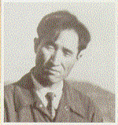
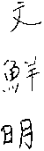
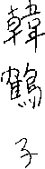
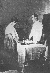
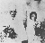
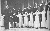
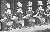
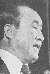
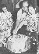
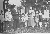

Bild: Sun Myung Moon i Pusan, 1955
Han föddes den 6 januari, 1920, enligt månkalendern, i Chonju, Buk-Ih provinsen, nu södra Pyongyan provinsen i Nord-Korea, nära Koreas västkust.
Himmelske Far bestämde dagen för hans födelse. Adams födelsedag var den 1 januari och Jesus födelsedag var den 3 januari. Hans födelsedag var den 6 januari. Han hade tre äldre systrar, en äldre bror. Sedan kom han och därefter hans tre yngre systrar.
Hans föräldrar var bönder som hade blivit kristna. Det sades att hans föräldrar var den sortens människor som inte behöver lagen, vilket betyder att de var goda människor. Därför kunde de leva utan lagar och restriktioner. Som ni vet är hans namn Sun Myung Moon. Med kinesiska skrivtecken får hans namn en djup mening:
|
 |
Moon betyder Sanning
Sun betyder Symbol för kristna Myung betyder Ljus |

Klickbar!
Hans föräldrar gav honom hans andra namn Yong, som betyder himmelsk drake. Efter instruktioner från Himmelske Far, ändrades det till Myung. Hans namn, Sun Myung Moon, betyder "Sanningens ljus har kommit till de kristna". Hak Ja Hans födelsedag är också den 6 januari (1942). Det låter otroligt men är sant:
|
 |
Han betyder Korea
Hak betyder trana Ja betyder flicka, barn |

Klickbar!
Hennes namn betyder Tranans barn från Korea.
Andliga tecken inträffade innan han föddes. Hans farfar kunde se tecken på den kommande storheten, Också när han föddes och när han var ung inträffade övernaturliga saker. Några tecken kom från satan, några kom från himlen, Tragedier inträffade i hans egen familj.
Människor blev andligt attackerade och dog. Från hans eget vittnesbörd vet vi att han kände Gud omkring sig och att han genast kunde förstå vad som var gott och vad som var ont, bara genom intuition, inte kunskap. Hans intuition var bättre än andras omdöme, (från herr Furuta: ) /Hans äldre bror var mycket god, andligt öppen och den andliga världen lärde honom mycket. På något sätt kunde han känna att hans yngre bror var bättre.
En dag, när han var mycket liten, gjorde någon något dåligt, eller enligt en annan källa, var hans föräldrar omedgörliga eller, enligt en tredje uppgift, en man gjorde någon illa. Plötsligt började en liten pojke att gråta. Många kom för att trösta honom, men inget hjälpte. Till slut bad den som hade felat om ursäkt och medgav sitt fel då slutade gråten. Till och med som en liten pojke, med bara ett sätt att protestera, med gråt och skrik, så gjorde han det.
Han hade en stark vilja också, som ung pojke. När han en gång hade bestämt sig misslyckades han aldrig med att genomföra sitt beslut.
När han fann något intressant började han att undersöka och undersöka. Han slutade aldrig förrän han hade förstått allt. Han kände till allting miltals från sitt hem. Vilka slags träd som fanns där, vilka fiskar och djur som levde där. Han var mycket naturintresserad. Hade han någon fråga fortsatte han att undersöka tills han hade en slutsats. En natt, med fullmåne, var han utanför sitt hem och fann då fotspår av en vessla i snön. Vid midnatt började han följa spåren, timme efter timme. Nästa morgon, i grannbyn, fick han tag i den. Efter sex eller sju timmars jagande hade han fångat vesslan, och han frågade folket i byn om de ville ge honom frukost eftersom han var hungrig.
En gång frågade herr Sudo en av Sun Myung Moons kusiner, också, en herr Moon, som var fem eller sex år yngre än honom, om hans intryck av honom när han var ung. Inte mycket, svarade kusinen, då han ju var några år äldre. Men han kom ihåg en oförglömlig händelse. En dag hade de gått för att fånga ål. Först ändrade de bäckens strömfåra. Som ni vet är ålar mycket hala, och för att fånga dem var man tvungen att gripa efter dem i det leriga vattnet. Han försökte fånga en stor ål, men ålen smet iväg när han försökte lägga den i korgen. Han fortsatte jakten till botten. Till slut, hade han fångat den mitt i dyn, han var nerstänkt med gyttja, men utan att torka bort den från sitt ansikte skrek han "Titta, Titta. Jag tog den." Han gav aldrig upp innan han var framgångsrik. Herr Sudo fick höra detta direkt från hans kusin,
När han hade beslutat något gav han aldrig upp innan han hade fullföljt sin plan, Detta är en del av hans natur. Han har varit sådan från sin ungdom.
En dag fann en man två pojkar som slogs. Den yngre av dem var han. Den andre pojken var fyra år äldre. Mannen försökte få dem att sluta, men han kunde inte. Nästa dag gick han förbi samma ställe och såg dom slåss igen. För att slåss hade han två krav, att fienden skulle vara elak och att han skulle vara starkare. Han slutade aldrig slåss innan den andre givit upp. Om han inte kunde få sin motståndare att ge upp, brukade han gå till ett litet berg och söka ut ett bra träd att slåss med, och timme efter timme tränade han sig.
Ibland bröt han av trädet. I två eller tre veckor kunde han hålla på, och försöka om och om igen, ända tills hans motståndare gav upp.
Ibland tog han sin lunch med sig och gick till en grannby. Han gick inte till skolan utan för att slåss. Han gillade inte att slåss. Men fann han någon som var elak, slutade han aldrig och han gav aldrig upp. En gång åkte Ken Sudo med honom i en båt med en 60-hästars motor. Kom någon ifatt dem bakifrån, accepterade han inte detta. Han gillar överhuvudtaget inte att bli besegrad.
Han har själv berättat, att när han slutade grundskolan var han bäst. När han som representant för sin klass fick ett betyg, började han, istället för att gå tillbaka till sin plats, att värdera sina lärare en efter en tills han hade gått igenom alla lärare på skolan och även rektorn.
Han kunde förstå den mänskliga naturen. Hans värderingar var så exakta att ingen kunde säga något. Efteråt talade han om situationen i världen, och vad som skulle komma att hända, vilket också till större delen slog in. Därefter började han tala om den nya värld som skulle komma. Hans tal var fantastiskt. Folk var häpna. Till sist kunde de inte förstå vad han sa, eftersom han bara var en liten pojke.
Ändå, nu efter trettio år (60-talet) hade innebörden i hans tal blivit sanning.
Han var mycket begåvad och klok och hans far förväntade sig att han skulle få många doktorsgrader. När han var tio år gammal trodde han själv att han skulle få tre doktorsgrader.(Father's words, 1965, USA) "Jag hade en mycket stark önskan att leva ett fantastiskt liv, ett liv av en hög dimension. När jag var tolv år gammal, började jag be om ovanliga saker. Jag bad om visdom större än Salomos, om tro större än aposteln Paulus, och om kärlek större än den Jesus hade. Detta är inte något vanligt för en tolv års pojke."/
När han var femton, kunde han mycket väl förstå den mänskliga naturen. Han fick många vänner och han kunde påverka dem så att han blev deras ledare. Vid femton års ålder kunde han övertala sina föräldrar. De lydde honom eftersom de visste att allt han föreslog var bra.
(från herr Furuta:) /Hans föräldrar erkände att han hade något som var märkligt och ovanligt,/ Ibland hade hans föräldrar problem, ekonomiska problem, och då brukade han i hemlighet lösa dem. Människor omkring honom trodde att han skulle kunna förstöra världen om han blev ond, eller om han blev god, kunna rädda den, (från herr Furuta: ) /Som pojke var Han frisk, gladlynt och pratsam / När han blev femton, blev han mer grubblande, djup och stark. Ibland sa han ingenting därför att hans föräldrar förväntade sig att han skulle var stor ur deras synvinkel. När han var femton kände han människans smärta, mänsklighetens förtvivlan. Han undrade varför det fanns många problem, så mycket stor synd. Hans syn på livet förändrades. Han förstod att någon måste vara ansvarig för människosläktets förtvivlan. Han förstod att ingen tidigare hade varit det. Enligt en fru Chois vittnesbörd, en annan fru Choi, som var hans sekreterare i tre år talade han en dag, och grät och grät på grund av hennes eländiga liv. Han grät också på grund av mänsklighetens elände. Han sa, "Jag grät för att jag kände mänsklighetens förtvivlan, men tänkte att kan inte jag lösa problemet, så finns det ingen av trettio miljoner koreaner som kan lösa detta. Han grät. Han tänkte och tänkte på det här sättet. Hans tårar måste ha varit trettio miljoner gånger värdefullare än de andras. Därför att även om trettio miljoner människor gråter, kan ingen lösa problemet. Bara han kan lösa det. Om han inte kunde lösa problemet skulle ingen kunna bli befriad från livets elände. Hans tårar var trettio miljoner gånger mer värdefulla. Från femton års ålder kände han på detta sätt.
När han var sexton år gammal bad han, som ni vet, tidigt en påskmorgon. I djupet av hans bön, uppenbarade sig Jesus för honom, (från Jack Hart! ) "Jesu liv framträdde så tydligt för honom att han definitivt visste att Jesus själv uppenbarade sig för honom./ Jesus sade till honom! Jag är Jesus som kom för tvåtusen år sedan. Min mission på jorden är ännu inte fullbordad. Du är ansvarig för att missionen blir uppfylld. Du kom för att göra detta. Han var häpen över att få en sådan uppenbarelse direkt. Det betydde att han var ansvarig för missionen för Återkomstens Herre. Han kände redan det Jesus hade känt. Hans hjärta värkte av förtvivlan, människosläktets förtvivlan, Allt spelades plötsligt upp framför honom. Han slogs av häpnad. Men han var så ung, tvekade innan han accepterade uppgiften. Eftersom han tänkte "Jag kan inte fullfölja detta." Han förstod att om han lovade att ta på sig missionen, skulle han vara tvungen att uppfylla den. Det finns en stor skillnad mellan att känna människosläktets elände och att vara ansvarig för att lösa problemet. Men Jesus var övertygande och övertalande, och Han tog till sist emot missionen från Jesus. Han bestämde sig och svor på att lösa människans elände. Från denna stund förändrades hans liv fullständigt. Han började sitt sökande efter vägen till mänsklighetens upprättelse.
(Från herr Furuta: ) /Det var hans eget ansvar att ta reda på hur han skulle fullfölja sin mission/ Han var nu inte längre ledaren för barn. Ibland gick han till en bergstopp för att be. Ibland gick han längs floden. Han tänkte på hur man skulle kunna rädda hela människosläktet. Ibland, bankade Han på marken, bad han till Gud och frågade, "Himmelske Far, visa mig hur jag skall rädda världen, Far, Himmelske Fader, om Du är Gud, vad är Din avsikt? Vad är Sitt syfte? Vad är Din vilja? Himmelske Far, vad är människan? Vem är Du? Kan Du tala om för mig hur förhållandet är mellan Dig och människan"? När Himmelske Far svarade, Far och son förhållandet, förstod han att detta förhållande, mellan Gud och människan, måste vara hela universums centrum. Därför frågade han, av vilken anledning, när, hur, och av vem blev detta centrum av universum, förhållandet mellan Gud och människan, förstört? Av Satan! Vem skapade då satan? Varför blev satan ond? Gud är en godhetens Gud. Du måste vara god. Om Du är den ende skaparen, hur kan något ont komma från Dig? Om ingen skapade satan, hur kom han då till? Och han fortsatte fråga: Om Du är allsmäktig, hur kan du tillåta att ont existerar? Varför kan Du inte förstöra ondska? Varför kan Du inte? Varför? Varför? Vem är ansvarig för ondskan? Gud eller Människan? Messias? Varför fick vi inget Guds rike här på jorden när Jesus kom? Jesus tillkännagav Guds rike, Varför fick vi det inte då? Och han frågade, När kommer slutet på världen? Varför måste det vara ett slut på världen'? Hur kommer världen att sluta?
Är det katastrofen för universum eller inte? Om inte, vad är då betydelsen av förutsägelserna i Bibeln? Han ville desperat uppfylla sin mission. På samma gång kom satan till honom och störde hans sökande efter sanningen. /Någon frågade honom, "Hur fann du de Gudomliga Principerna? Han svarade, "Jag utkämpade en kamp",/ Hans strid med satan var så svår, ett blodigt slag mot en fruktansvärd andlig kraft, att han senare sa, att om vi skulle vara inblandade i en strid med satan, skulle vi krossas till småbitar. Satan är så, stark att ingen skulle kunna klara av honom förutom Messias. Som ni vet, är han utan synd och skulle inte behöva bli attackerad av den andliga världen. Ändå blev han attackerad av satan. Hans strid var som Jesus tre frestelser.
I början av Unification Churchs tid i Japan, fick en syster, herr Kamiamas hustru, en vision i vilken han dödade satan. Han stod på toppen av en hög spira, mycket spetsig och mycket hög, Han stod på den men bara en tid. Plötsligt uppenbarade sig en stor, svart drake, satan, framför honom. Draken försökte att blåsa ner honom från toppen av spiran. Styrkan i vinden var fruktansvärt stark, som en storm, men han stod fortfarande kvar. Hans hår stod på ända i den starka vinden, till slut kom satan så nära honom att han skulle kunna blåsa ner honom från spiran. Just då kom en ängel till honom, bugade sig och gav honom en rulle. Ett svärd uppenbarade sig. När den stora draken satan kom nära honom igen, slog han till huvudet och i nästa ögonblick var satan slagen till marken. Samtidigt som draken föll till marken, steg en stor svart rök upp från jorden. Snart hade röken försvunnit. Då kom många änglar fram till honom och bugade sig inför honom. Detta var bara början av uppenbarelsen. Det var som Uppenbarelseboken, fast längre. Detta är den enda uppenbarelsen (vi känner till) om hans strid med satan i den andliga världen.
Han fortsatte sin kamp mot satan. Satan var klok och skicklig. Men han var klokare och skickligare. Han har viste om sin position som den tredje Adam. Ibland häpnar Himmelske Far över hans idéer.
Inte ens satan, som är mycket skicklig, kunde klara av honom. Han började att konfrontera satan, ställa den ena frågan efter den andra.
"Vad gjorde du? Du måste ha gjort på det här sättet." Om han fann en av satans hemligheter blev den ett vapen att attackera satan med.
Satan retirerade, retirerade, retirerade, Till sist var han tvungen att kämpa mot satan själv för att finna hemligheten med människans fall.
Han närmade sig satan mer och mer och sa, Du måste ha känt dig ensam. Du måste ha velat vara tillsammans med Adam och Eva. Du måste ha känt dig bättre tillsammans med Eva än med Adam. Du var lyckligare med Eva än med Adam, eller hur? Ja, ja, ja, var satans svar. Till sist förstod han att satan måste ha begått otukt med Eva. Satan blev arg. Han måste ha blivit blek. Inte ens Himmelske Far kunde berätta detta. Han frågade honom, kanske satan gjorde det här, eller detta, eller detta, (A), (B), (C), (D), (E). Gud anslöt sig och alla hemligheterna i de Gudomliga Principerna blev avlägsnade. Vid tjugofem års ålder, kände han till nästan alla hemligheter i Bibeln, utom varför Gud gav människan en möjlighet att falla. Han stred mer än nio år i den andliga världen. Han var fast besluten att finna sanningen.
(från herr Furuta: ) /Det var också mycket svårt att upptäcka Guds sanning om Adams familj och vägen till upprättelse av Kain genom Abel./ Genom nio års undersökningar av sanningen i den andliga världen, lärde han känna hemligheterna med Guds arbete.
När Han deklarerade sanningen inför den andliga världen, kom många helgon till honom och sa, "Detta är inte sant!" Föreställ er, han hade hittat Sanningen efter en fruktansvärd andlig strid bara för att höra orden, "Det är inte sant" Till och med Jesus kom till honom och sa, "du har fel, det är inte sant." Om han hade fel, skulle han kunna förråda Gud. Ändå, var han övertygad om att han hade rätt. Med all säkerhet var denna inre konflikt värre än hans kamp mot satan. Trots det var han orubblig. Han sa till och med till Jesus, "Detta är sant.
Det finns ingen annan väg för människosläktet att bli räddat." Då sa även Himmelske Far: Nej. han har fel. Förnekad av Gud och Jesus, höll han fast vid: "Det finns ingen annan sanning genom vilken mänskligheten kan räddas. Det finns inget annat sätt som människan föll på. Syndafallet måste omkastas för att människan ska kunna räddas. I fyrtio dagar fortsatte Himmelske Far och Jesus att förneka att de Gudomliga Principerna var sanna. Efter fyrtio dagars kval, kom Jesus till honom och sa, "Vad du har sagt är riktigt. Det är verkligen sanningen. Du har rätt. "Himmelske Far sa, "Ja, det är sant," och bekräftade honom. Därefter kom hela den himmelska andliga världen till honom och bugade för honom. Som ett resultat av hans seger i denna rannsakning, började hela den andliga världen, även änglarna att lyda honom. Han är den ende som alla i den andliga världen lyder. Eftersom, tiden ännu inte var inne, höll han tyst med sitt budskap. Så, med Guds bifall, började han avslöja innehållet i den uppenbarelse han hade fått; De Gudomliga Principerna. Sanning är sanning, Snart kommer denna sanning att täcka hela världen. Den kommer inte att misslyckas med att nå hela världen. Så helt unika är de Gudomliga Principerna, att de aldrig skulle kunna komma enbart från människans hjärna. De Gudomliga Principerna kom från Gud.
De ges till mänskligheten med Guds medgivande. Detta om hans inre sökande i sin ungdom.
Nu till de yttre händelserna. Efter att ha fått denna uppenbarelse från Himmelske Far och Jesus, slutade han sin skolgång senare än vad som var vanligt, Femton eller sexton år gammal blev han besvärad av polisen för att han talade offentligt. Han krävde att de skulle lyssna på honom, och när de hade gjort det, kunde de inte göra honom något. Han fortsatte till ett tekniskt gymnasium för att studera elektrisk ingenjörskonst.
En söndag gick han till kyrkan och efter högmässan bad han. Hans bön var så stark och inspirerande att många kvinnor rördes till tårar.
Efteråt, när högmässan var över, rusade de fram till honom. Och ändå var han bara en ung pojke. De kunde inte sluta att älska honom,
Någon kramade om honom, En annan tackade honom med tårar i ögonen. En av damerna sa, "Kom till mitt hem," och han följde med henne hem. Där bodde han kanske sju månader. Damen hade två döttrar. Kanske fanns det någon speciell mening med den här familjen.
Han försökte få damen att förstå hans mission, men hon kunde inte. Hon älskade honom som sin egen son men hon kunde inte förstå honom. Han bad henne att be till Gud. Vilken av de två, Jesus eller han, är större? Fortfarande kunde kvinnan inte förstå, Senare bad han henne. "Fråga Himmelske Far vilken av de två som är mer värdefull, Han eller hela mänskligheten och universum. Därefter lämnade Han familjen. När han kom tillbaka från Japan, besökte han henne. Fortfarande kunde hon inte förstå. Kanske förstod hon senare.
Så började han övertala unga människor att inte svika Himmelske Far och mänskligheten. Samtidigt sökte han sanningen i den andliga världen. Han förstod djupet av sorgen hos Himmelske Far och Jesus. Han var den förste man som förstod detta. "Stackars Jesus" grät Han varje dag. "Stackars Jesus." "Stackars Jesus." Han förstod djupet av sorgen hos den man han älskade mest. Himmelske Far har ingen mun att tala med, inga armar att omfamna med, inga ben till att springa efter sina barn med, hans barn som förkroppsligar tragedi och kvider över sin egen sorg. Han var den förste som förstod Guds lidande. Han kunde inte sluta att gråta över sin Himmelske Far.
Dag efter dag, natt efter natt grät han. Hans ansikte blev så svullet att inte ena hans grannar kunde känna igen honom. Han fick ett helt nytt ansikte. Han visste djupet av Guds hjärta, En dag sa han, "Ni kan lämna Unification Church, men jag kan inte." Han kan inte lämna därför att han vet djupet av Guds smärta. Han kan inte lämna Gud ensam, Han står inte ut med att se Guds smärta mer. Därför kan han inte lämna Unification Church, för att han känner Guds hjärta, inte därför att han är kyrkans grundare.
När han var nitton år gammal, gav Gud honom befallning att åka till Japan. För att lyda Guds ord, fick han lämna sitt hemland, resa över havet och komma till Japan. Resan mellan Seoul och Pusan, tog tio timmar på ett långsamt tåg. Under tiden, hela vägen från Seoul till Pusan, grät han. Tårar trillade över hans kinder hela vägen. En dam som satt mitt emot honom trodde att han grät över att behöva lämna sitt hemland. Ju mer hon försökte trösta honom, dess mer grät han. Inte över att han behövde lämna sitt hemland, utan över Koreas olyckliga folk. Han var den förste att förstå Guds hjärta och Jesu sorg. Något som ingen förstått tidigare, Gud hade blivit förrådd av hela människosläktet som han älskade mest. Himmelske Fars hjärta var brustet. Han grät och grät. Om han inte kunde lösa sitt lands och sitt folks problem, vem skulle då kunna göra det? Många människor gråter men deras tårar kan inte lösa den här världens problem. Han är i sanning en bönens man och en man av tårar därför att han känner Guds hjärta. Hans tårar kom inte från svaghet eller från glädje, utan för att han kände Guds hjärta. Han grät när han hade hudkontakt med Gud. Guds natur formligen östes över honom. På resan till Japan grät han tio timmar på grund av hans folk, de koreanska bönderna. Om han inte kunde uppfylla sin mission skulle Koreas folk lida fruktansvärt. Kvinnan bredvid honom kunde inte alls förstå.
När han anlände till Japan, började han på Waseda Universitet. Ett ledande universitet i Japan. Det är ett privat universitet. På den tiden var det omöjligt för en korean att studera vid ett allmänt universitet. Han studerade elektrisk ingenjörskonst. En dag frågade en medlem i Japan honom, "kom du till Japan för att studera till ingenjör?" "Nej!" svarade Han. Anledningen var inte studierna utan något mycket djupare. I Japan upplevde Han många händelser med anledning av sin mission. Människor förstod aldrig varför han hade kommit, eftersom han inte kunde tala om sin uppgift. I jämförelse med Jesu liv så spelade Japan samma roll som Egypten. Han var en ovanlig ung man.
I Japan fick han många vänner därför han var bra på så många sätt. Egentligen så fick inte det japanska folket tycka om koreaner. Korea stod ju under japanskt herravälde. Japaner brukade förolämpa koreanerna. Trots detta så samlades många studenter kring honom eftersom han var mycket duktig och god människa. Ibland lyssnade han på musik. Ibland besökte han dom fattiga tiggarna och hade med sig ris till dom. Dom måste ha varit så hungriga. Han klippte också deras hår. Tiggarna älskade honom så mycket. Och när han inte kom på ett tag, så saknade dom honom så mycket. Ibland besökte han arbetarna. Folk var så glada tillsammans med honom. Även när han var i Korea så var han på detta sätt. Ibland tog han med sig sina vänner.
För att kunna tjäna pengar, så gick han till en tung industrifabrik, den största i Japan. Han talade utav sin erfarenhet. Han hade så stor erfarenhet. Dom frågade mer och mer och så han berättade för dom mer och mer. Han tog ett jobb som innebar att frakta kol från skeppen till ett magasin, och med några av sina vänner så arbetade han mycket hårt, nästan utan att sova något. Han arbetade lika mycket som fyra normala arbetare. Det arbete som tog vanliga arbetare över en vecka att göra klart, det kunde han avsluta på två eller tre dagar. På dessa två, eller tre dagar tjänade han allt han behövde för två månader. Han kunde då, betala sin hyra och gav bort många av sina saker och därefter kunde han sova i två tre dagar. Hans liv har alltid varit ovanligt.
En dag besökte han en prostituerad. Hans syfte med besöket var annorlunda än andras. Han lyssnade på henne och tröstade henne. Han lyssnade på den fruktansvärda och miserabla historien om hennes liv. Genom sådana här besök så kunde han förstå mänskligheten. Han gick igenom så många upplevelser som förberedelse för sin mission. Som ett resultat av detta älskade många kvinnor honom väldigt mycket. En kvinna gav honom ett brev skrivet i hennes eget blod. Det högsta uttrycket för kärlek, som betyder, "Jag älskar dig mer än mitt eget liv."
(från Hans ord den 14 oktober 1975:) /"Jag visste vilken katastrof det skulle vara om jag blev frestad, eftersom jag kände till Fallet. Därför gick jag alltid på gatan med huvudet nedböjt."
Han berättade också om när han var student i Japan och skulle åka hem till Korea på semester, så brukade den japanska polisen möta honom redan innan han fick en chans att träffa sina föräldrar. "Vart jag än gick så var jag svartlistad. ...Hela mitt liv har jag varit observerad."/ Han visste genom sin mission att Japan var satanskt. Den japanska staten var satansk. Så han började arbeta med befrielserörelsen och hjälpte därmed befrielsen av Korea från Japan, i hemlighet. Den japanska staten förtryckte honom. Många hemliga poliser samlades runt honom och arresterade och torterade honom många gånger. Dom ville ha en lista med namnen på hans kamrater.
Säkerhetspolisen torterade Messias. Deras tortyrmetoder var importerade från Ryssland. Det var så grymt. Den japanska staten utredde hur man skulle tortera människor. Den grövsta tortyren prövades på Han. En metod var vattenbehandling, vatten hälldes genom näsan in i munnen. En annan tortyr var att sitta på en järnwire i flera dagar utan att kunna sova. Han hängdes upp i taket och blev slagen med ett läderbälte. Om han svimmade, sänktes han ner till golvet tills han vaknade och därefter fortsatte tortyren. Trots detta avslöjade Han aldrig namnen på hans medhjälpare och medrevolutionärer. Japan var verkligen en satansk nation.
(Från Hans ord den 14 oktober 1975)
/Han sa, "även när jag var i Japan så anklagade alla mig och mina närmaste vänner lämnade mig. Mina systrar som jag mest älskade togs bort från mig... Om jag älskade min hund, så dog hunden. Om jag älskade min häst, så dog min häst. Gud ville att jag skulle bryta alla världsliga band."/ När Han kom till Japan 1965, så sa han att när han lämnade Japan gav han ett löfte till Himmelske Far att han skulle återvända inom 20 år och bad, "När jag kommer tillbaka, så låt mig finna dom människor som kan stå emot denna onda japanska regering. Låt mig finna några unga människor som kan följa mig till priset av sina liv. Det är ni, dom japanska medlemmarna, sa han till medlemmarna i Japan. Han sa att i Japan hade han minnen av bitterhet mot satan. Trots detta, fanns det två saker han inte kunde glömma från sin tid i Japan. Det fanns en gammal dam som han bodde hos, och som älskade honom och behandlade honom lika bra som hennes egna japanska gäster eller söner och döttrar, utan att ha förutfattade meningar om honom som korean. Hon behandlade honom på samma sätt som dom japanska studenterna blev behandlade. På ett sätt var det väldigt naturligt. Men när det gällde den vanliga misstänksamheten, så blev hennes beteende mycket ovanligt, därför nästan alla japanerna förlöjligade och föraktade koreanerna i Japan.
När Han återvände till Japan 1965, så mötte han henne igen, men hon kunde inte komma ihåg honom. Till slut mindes hon. Hon fick aldrig veta att han var den Återkomne Herren, då hade hon väl svimmat. Han var mycket tacksam för henne.
En annan händelse: Han gick till ett bränsleföretag och fick sälja kol. Detta var ett typiskt arbete för koreaner som blev föraktade. Därför fick Han utstå samma dåliga behandling och förolämpningar som alla koreaner fick i Japan. En kväll när han återvände från sitt arbete, det var sent och han var trött, så ser han hur den gamle ägaren kommer ut och ger honom lite mer betalt än vad han egentligen skulle få i lön. Kanske bara en eller ett par kronor mer. Ändå, så var detta mycket ovanligt. Han kunde inte glömma detta. Han kände bitterhet mot Japan, ändå så tröstade dessa två personer hans hjärta. Tack vare dom så kunde han även glömma sin bitterhet. En del människor behandlade honom så dåligt bara för att dom inte kunde förstå att han var Messias. Dom var arroganta. Men dessa två personer var så vänliga. Deras beteende fastnade i Hans hjärta.
Han återvände till Korea från Japan enligt Guds instruktioner, strax före slutet av 2:a världskriget 1944. Hans mor fick meddelande från honom att hans skepp skulle anlända en viss dag. Plötsligt fick hans mor den fruktansvärda nyheten att hennes son, vår Messias hade omkommit. Det skepp som han skulle komma med hade sänkts av bomberna från två amerikanska B29:or. Hon blev förkrossad av sorg, och i sin sorg glömde hon bort sig själv fullständigt. Kilometer efter kilometer sprang hon mot hamnen. Hon var så orolig för sin son.
Han hade säkert dött trodde hon. Men när hon kom fram till hamnen fick hon ett nytt besked. Skeppet som blev sänkt av bomberna var verkligen det skepp som Han skulle kommit med. Men av någon orsak så hade Han bytt fartyg. Han var beskyddad av Gud. Hon fick veta att hennes son hade lyckligt kommit hem, Att se sin son i säkerhet igen gjorde henne så glad. Hon hoppade upp och grät i glädje och befrielse. Det tog henne en vecka innan hon upptäckte att medan hon sprungit på vägen mot hamnen för att ta reda på om hennes son levde, så hade hon fått ett fult sår från en pinne i foten. När Han såg detta, så kunde han förstå hur djup föräldrakärlek, eller en moders kärlek kunde vara. Trots att dom var fallna människor, så kunde dom ha så djup föräldrakärlek. Han måste ha älskat sin mor mycket.
Ändå så kunde aldrig Han undervisa sin familj. När han satt i fängelse, kom hans mor till fängelset för att besöka honom och hon sa till honom, "sluta upp med detta arbetet. Sluta med det du gör. Kom tillbaka hem till mig. Du skall inte behöva lida så här. Varför lider du så mycket?" Han var tvungen att svara henne, "Försvinn härifrån. Kom inte tillbaks till mig igen." Oavsett hur mycket hon älskade honom, så kunde han inte acceptera vad hon sa eftersom det var emot Guds vilja. Det var precis som när Jesus var tvungen att svara sin mor, "Kvinna, vad har vi med det att göra?" (Joh 2:4) På samma sätt blev Han tvungen att köra iväg sin egen mor som han älskade mest av allt. "Från det ögonblicket fick jag aldrig se henne igen, "sa han. Hans föräldrar måste ha varit i Nord-Korea. Så han vet mycket väl deras öde på grund av kommunismen. 1971 berättade han om sin födelseplats, som nu ligger under kommunismen. Han förstår att hans mor är i andliga världen på grund av kommunismen. "Jag fick aldrig återse henne igen efter det ögonblicket" sa han. Det betyder att hans sista ord till sin mor, som han mest älskade blev, "Gå härifrån och kom aldrig tillbaka." Den 15 augusti 1945 så kapitulerade Japan till Amerika. 2:a världskriget var slut, och det satanska herraväldet över Korea var slut. Korea måste skapa sin egen identitet. Därför startade många nya rörelser.
Detta är den tid Hans egen mission börjar på jorden. År 1946
från en annan text
1945 var Hans GYLLENE ÅR.
KOREA VAR BEFRIAT - ALLT VAR ÖPPET!
Han trodde han skulle kunna blivit en politiker. Han var redan en ledare för en frihetsrörelse. Om han blev politiker, så skulle han kunna bli president mycket snart. Men även om en politiker kan lösa problemen med det nuvarande, så kan han inte lösa det förgångna eller framtiden. Han kunde också vara en visionär. Han hade redan De Gudomliga Principerna. Om han blev en visionär, så skulle han vara världens störste. Men även om en visionär kan lösa framtidens problem, så kan dom inte lösa det nuvarande eller det förgångna. För att lösa framtiden, det nuvarande och det förgångna, så måste han vara en religiös ledare, en missionär. Missionärer löser framtiden, nuet och det förgångna. Politiker kan inte rädda den Andliga Världen. Visionärer kar inte frälsa den Andliga Världen. Så han var tvungen att gå gottgörelsens väg. Människor misshandlade och förföljde honom. Han blev en tjänares tjänare. Han tjänade spiritualister. Han tvättade gamla kvinnors underkläder. I början så mötte han någon som var en Johannes Döpare. Ålderman Kim, Kim Haek Moon. Han hade en egen teori om Principerna och var en ypperlig religiös ledare. Han skulle tagit sitt ansvar som Johannes Döpare.
(Från Hans tal den 27 Dec 1971:) / "Jag mötte honom i november 1945 tre månader efter befrielsen. Han visste att han (Kim) hade en stor mission, så han mötte honom, Vid den tiden så höll han ett (Protestantiskt) seminarium. Han fick i uppdrag att hålla ett seminarium från himlen. Han (Kim) fick i uppdrag att förbereda ett folk som kunde ta emot den Återvändande Herren. Detta var det budskap han fick av himlen. Så Han gick till hans (Kims) grupp och mötte honom där och stannade hos honom i sex månader. Under den perioden arbetade Gud på olika sätt. Det fanns många kvinnor som följde Kim. Innan Han kom till denna platsen fick dom budskapet att följa Kim. Efter att han kommit till denna gruppen, fick dom budskapet att följa honom, och inte Kim. Vid denna tiden så talade Han inte om Principerna. På samma sätt som Jesus blev välsignad av Johannes Döparen, så skulle han ärva allting från Kim.
Efter sex månader så fick Kim en uppenbarelse från himlen. Han (Kim) lade sin hand över Moons huvud, och välsignade att kung Salomos visdom och hela världens skulle vara i honom. Men vid denna tiden så talade han inte om Principerna. Han gjorde dom mest enkla arbetena. Han var i den lägsta positionen. Hans möte med Kim hade stor betydelse, så han bad mycket hårt vid denna tiden. Om Kim fick i uppdrag att ge en sådan välsignelse till honom, så skulle han också ha frågat ut honom. Det var hans fem procent av ansvaret.
Men vid denna tiden började hans (Kims) tidigare trogna anhängare att följa honom (Moon) istället, Han visste detta och han tyckte inte om det... Han fick hans välsignelse så. Han ärvde vad han hade./ Ålderman Kim kunde förstå att han var en ovanlig man och att han skulle lyda honom. Konstigt nog så presenterade han honom (Moon) för sin grupp: "Detta är en underbar person. Ni skall respektera Sun Myung Moon lika mycket som ni respekterar mig. Men han (Kim) satte honom (Moon) i samma position som sig själv. Han måste ha förstått att han skulle lyda honom. Men på grund av hans (Kims) fallna natur, så kunde han inte erkänna detta. Därför övergav han denna gruppen och lämnade dom.
Under tiden så gav också himmelske Far en chans för honom att möta Sigmund Rhee som blev Koreas president. Sigmund Rhee var en central person på den nationella nivån. Om Sigmund Rhee hade uppfyllt sin mission, så skulle Han mycket snart vara Messias för hela Korea, och då hade han varit Messias för hela världen nu. (Från en lektion av Ken Sudo:) /Detta är vad som skedde. Sigmund Rhee skulle ha mött Återkomstens Herre:
Det fanns två, medlande präster som representerade dom kristna. Dessa båda ministrar förrådde honom. Som ett resultat förföljde också Sigmund Rhee Messias, sedan han blivit president för Korea. Han godkände aldrig Unification Church. Därför kunde inte Sigmund Rhee uppfylla sin mission. Och han blev också tack vare studentrevolter utkastad från sitt ämbete, strax efter det Heliga Bröllopet 1960. Efter att han förföljt Unification Church, så blev han störtad.../ Som ett resultat av misslyckandet att förena dom kristna och Sigmund Rhee med honom vid denna tiden, så förlorade han sina bästa år. Han sa att han kände sig som ett slaktdjur som drevs mot slakthuset.
Genom bitter förföljelse, så uthärdade han, uthärdade och uthärdade. Men genom att dom två prästerna förrådde och att dom kristna inte ville följa, så blev Hans plan att snabbt lösa nuet, det förgångna och framtiden som en religiös ledare, resultatlöst. Han blev Lidandets Herre. När Kristendomen inte kunde uppfylla sitt syfte så var Härlighetens Herre tvungen att bli Lidandets Herre.
Kristendomen stod i samma position som Judendomen. När han förråddes av Kristendomen så blev han tvungen att gå lidandets väg.
Han var tvungen att återigen bli Lidandets Herre, precis som Jesus.
Om Esau hade lydit Jakob från början, så hade aldrig Jakob behövt fly till Haran. På samma sätt om dom kristna hade följt honom, så hade aldrig han behövt gå till Haran. Men när dom kristna motsatte sig honom, så stod det klart att han var tvungen att gå till Haran, dvs. Nord- Korea. Så samtidigt som så många flyktingar var på väg från Nord till Syd för att fly från kommunistregimen, fem miljoner flyktingar, en tredjedel av den Nordkoreanska befolkningen, ett fruktansvärt antal på flykt, så var Han tvungen att gå till Nord-Korea från Syd, alldeles ensam. Det var precis som Jakob som fick fly ensam. Han sa om denna period, "Det var totalt mörker; det fanns inget ljus någonstans." Han gick därför att det fanns ingen annan väg. Han gick mot tortyr och misshandel. Han visste hur svårt det skulle bli.
Ändå var han tvungen att gå. Det fanns ingen annan väg när dom kristna inte följde honom. Himmelske Far var så ledsen.
Himmelske Far kunde inte uthärda den svåra väg som Han var tvungen att gå. Trots detta så godkände till slut Himmelske Far den. Himmelske Far visste hur grym och svår vägen skulle bli. Till slut kommer innehållet i denna period att uppenbaras för hela mänskligheten. Tack vare Hans lidande, så kommer mänskligheten att respektera honom ännu mer och Återupprättelsen kommer att gå snabbare. Därför godkände Himmelske Far att Han gick till Nord-Korea. Han gick till Pyong Yang där Kim Il Sung var.
Pyong Yang har kallats det andra Jerusalem av många koreanska kristna. Det är en stad med mycket fromma och mycket fattiga människor. Det glöder av religion, där finns så många kyrkor. Varje söndagmorgon klockan 5 så ringer alla kyrkklockor och klockspel. Ni ser aldrig denna stämning i Amerika eller i Japan. Korea har varit ett mycket speciellt kristet land. I alla städer finns det så många fromma kristna. Det finns mdnga andligt öppna människor som förbereder för Återkomstens Herre att komma till Korea. Han gick dit och fann ett litet hus. Han började att förkunna om Bibeln, enligt De Gudomliga Principerna.
Många människor samlades för att höra honom, speciellt äldre kvinnor. Flera gamla kvinnor samlades runt honom, samlade genom den Andliga Världen, eftersom dom var andligt öppna. Vid denna tiden så var inte kommunismen så stark. Tack vare att kristendomen var så starkt utbredd.
(Från herr Kwang-Yol Yoo!) / Kommunistregimen visste att dom kristna var så starka vid denna tiden i Pyong Yang. Därför kunde dom inte angripa dom kristna direkt, utan dom planerade istället att indirekt angripa dom. Deras plan mot kyrkorna var att låta den ena kyrkan tro att den andra var felaktig. Det är så kommunisterna börjar söndra kyrkorna och förstöra dom./ Många kristna kom till honom genom ledning från andliga världen. Många lämnade sina kyrkor och gick till honom. Många fromma kvinnor fick uppenbarelsen att Herren har återvänt.
Du kan möta honom om du stannar här. Några människor väntade att Herren skulle komma, i tre eller 5 år. Så många religiösa människor blev ledda till honom. En gång kom en man upprepade gånger till honom. Han frågade eller sa aldrig något. Han kom därför att han kände sig fridfull kring honom. Det var Won Pil Kim, Hans första lärjunge. En man med stor tro. "Om ni kommer till Korea så måste ni träffa honom!" föreslog Ken Sudo oss. "Han är ett föredöme i sin tro. Hans kropp är ett exempel på hans tro. Hans hustru är också ett exempel på stor tro. Han är olik alla andra medlemmar." Han blev mer och mer känd.
(Från Hans ord den 27 December 1971 i USA:) /"Enligt gottgörelsens och upprättelsens princip, så kunde inte Han själv möta dessa förberedda grupper som väntade på Herrens Återkomst. Orsaken till att Jesus dog var därför att han aldrig kunde få någon brud.
Eftersom det inte fanns någon förberedd brud för att ta emot Jesus, så blev detta orsaken till hans död. Därför måste dessa förberedda grupper, i position som brud, själva komma med sin förberedelse när Herren kommer."/ Namnet på en av grupperna som hade mer än 1000 medlemmar var "Inuti magen Kyrkan." Den kallades så därför att dess grundare, fru Ho Ho Bin, hade fått en uppenbarelse att den Återvändande Kristus kommer åter till jorden genom hans moders livmoder. Därför namnet, "Inuti Magen Kyrkan". Hon tog emot hur miserabelt liv Jesus hade haft. (fortsättning från hans ord) / Hon blev undervisad av Jesus, om Guds hjärta, hur Gud sörjde vid Adams fall, och också Guds situation på Jesu tid. Alla möjliga fakta. Jesus berättade också om Marias liv, situationen när Jesus föddes i världen.
Jesus berättade också om sin uppväxt och att hans moder Maria inte kunde uppfylla sin mission. Dom fick också veta att Johannes Döparen inte kunde fullfölja sin mission. Därför fick Jesus bli korsfäst. Så genom allt detta förstod dom att orsaken till Jesu korsfästelse var det judiska folkets otro. När dom fick uppenbarelserna så fick dom bara delar, inte alltihop sammanhängande. Dom fick också veta att Herren skulle komma som en koreansk man. Dom fick veta att Herren kommer som himlens prins, och att han kommer tack vare 6000 år av mänskligt lidande i historien. Dom som skulle ta emot honom måste bli dom som uppfyllt, återupprättat, och löst allt av Jesus bitterhet, och som löst allt det som Jesus inte kunde uppfylla under sin livstid. Dom fick också order från himlen att eftersom Jesus föddes som himlens prins. Därför skulle också hans liv varit en prins liv. Han skulle aldrig behövt uppleva några problem i sitt liv. Han skulle ha haft dom finaste kläder. Jesus skulle fått äta den finaste mat. Men genom det judiska folkets misslyckande, så fick aldrig Jesus dessa kläder och denna mat. Därför fick dom i uppdrag att gottgöra allt detta. Dom började förbereda allt för Jesus. Dom fick uppdraget att sy kläder för Jesus från hans barndom upp till 20 års ålder så många kläder som Jesus behövt för att byta. Ni kan tänka er hur mycket kläder det blir. Och det var inte bara en stil, utan en kostym i koreansk stil och en i västerländsk stil, en koreansk dress och en västerländsk kostym för var tredje dag. Och dom fick inte använda symaskiner. Dom fick inte sy mer än tre samtidigt, och för att göra detta så fick dom rensa hela rummet. och dom fick inte resa sig förrän dom var klara med en dräkt. Dom fick inte ens lov att gå på toaletten. "Även om ni betalar ett sådant högt pris, så är ni ovärdiga att ta emot honom," detta är vad himlen sa dom. Och så fort dom gjorde något misstag så blev dom hårt straffade av himlen. Dom kunde inte göra annat än följa himlens instruktioner.
Vid denna tiden hade gruppen över 1000 medlemmar. Dessa 1000 medlemmar arbetade i 7 år. Som måltid förberedde dom tre mål mat om dagen. Precis som en fest, kött tre gånger om dagen. Storleken på hans kläder blev större och större allteftersom han växte upp. När dom blev klara med alla kläder för Jesus, så fick dom beskedet att göra om alltihop för Återkomstens Herre. Dom fick också veta att dom skulle vara ännu noggrannare med den Återkomne Herrens kläder. Varje gång dom förberedde en måltid för Herren, så skulle dom buga 500 gånger. Vissa gånger sa himlen att dom skulle buga 5000 gånger. Himlen sa, "även om ni ger er respekt till Herren genom att buga 5000 gånger, så är det otillräckligt för att visa respekt för Herren." Att buga 5000 gånger tog minst 10 timmar. Efter att ha bugat färdigt, så svimmade dom. Himlen berättade exakt om alla storlekar, längden på ärmarna, alltihop. Hennes man fick också veta vad hon blev tillsagd. Återkomsten Herre var redan högre än hennes man. Hon fick veta om hans akademiska utbildning, allting, från himlen.
Dom väntade på den dagen då de kunde möta Herren. Dom väntade dag för dag på att ta emot Herren. Hennes medlemmar var så beslutsamma att dom var beredda att dö när som helst om himlen bad dom. Hon vittnade också om att Japan skulle kapitulera den 16 augusti 1945. Det var den 7 juli enligt månkalendern. Hon berättade ofta offentligt om vad hon tog emot från himlen. Så det var väldigt betydelsefullt att den dagen blev den 7:e juli enligt månkalendern. Orsaken till att hon berättade allt så öppet var därför att hon fått veta, att om hon blev satt i fängelse så skulle hon snart bli befriad. Detta blev hon tillsagd, så hon kunde tala fritt... Allting som sades från himlen blev sant precis som hon sagt. Därför kunde alla hennes medlemmar inte göra annat än följa henne... Dom tog emot budskapet att, "när Japan upphör, så skall ni möta Återkomstens Herre."
Dom visste att den kommande Herren skulle ha en brud, och att han kommer för att skapa en familj. Så dom förberedde allting: en brud, villkoren för att bilda en familj, l2 lärjungar, 70 lärjungar. Dom utvalde dessa vid denna tiden. Dom köpte det finaste huset i Pyong Yang. Dom köpte ett fint hus och förberedde det för Herren. (Vid denna tiden var han i Syd-Korea.)
Han fick veta att kvinnan fanns i Nord-Korea och att denna gruppen fanns... Han sände en man till denna gruppen och bad att fru Ho skulle be för att få veta vad hans grupp var. Men vid denna tiden så väntade fru Ho ett stort tecken, hon väntade inte en ung man. Han sände en vanlig man, inte någon speciell person. Vid detta mötet med mannen förstod hon inte hans stora mission, så hon sände tillbaks honom. Därefter sände han en ung kvinna till den gruppen. Men inget hände. Därefter fick fru Ho en ny uppenbarelse att när ledarna för hennes grupp samlades vid en viss plats så, skulle dom möta Herren på samma sätt som Chung Yang mötte sin man i fängelset,/ Detta är en traditionell koreansk berättelse om trohet. En ung kvinna som var förlovad åkte till staden för att studera. Hon var mycket vacker.
Många män samlades runt henne och ville gifta sig med henne. Men hon avvisade dom för hon var ju förlovad. Då bad en härskare att få gifta sig med henne och hon avvisade honom. Han kom många gånger. Till slut sa han att hennes fästman hade dött och att hon därför skulle gifta sig med honom. Hon svarade, "även om han kanske har dött, så har jag givit löftet en gång, och min fästman har blivit utvald, så jag ändrar mig inte." Härskaren blev arg på henne och kastade henne i fängelse. Där väntade hon på sin fästman. Till sist så kom han tillbaka, förklädd till en annan man. Han hade en högre position än härskaren. Han tog reda på var hans fästmö var. När han fått veta var hon fanns, så straffade han härskaren och rusade till fängelset. Flickan väntade fortfarande på honom. Hennes trohet var helt oförändrad.
Fru Ho fick denna visionen: Hon var kvinnan, Chung Yang. Fästmannen var han, Återkomstens Herre. Hon blev tillsagd, "Du kommer att möta Herren så som Chung Yang mötte sin man i fängelset." Vid denna tiden var Nord-Korea ockuperat av kommunister,
(fortsättning från hans ord.:) / Då fick kommunisterna reda på att denna gruppen samlade mycket donationer från folk, många fina kläder, och att dom köpt ett fint hus. Så dom anklagade gruppen för att lura religiösa människor. Dom kastade alla ledarna i fängelse.
Han blev också anklagad för att ha förbindelse med denna gruppen, Egentligen så hade han ingen förbindelse, men han blev ändå anklagad för det. Han hamnade också i fängelse. Han blev placerad i samma rum som den manlige ledaren för gruppen (under fru Ho fanns en man som ledde gruppen). Den mannen satt i samma rum som honom.
Detta var den 11 augusti 1947. Dessa ledarna blev mycket svårt torterade av kommunisterna./ I cellen intill hans satt fru Ho Ho Bin. Mycket snart förstod han vem kvinnan i nästa cell var. Hon var just den han letade efter. Hon satt där bara för hans skull. Hon väntade på att han skulle bli fängslad. Han måste ha velat gråta ut och skrika, "Här är jag". Han ville rädda henne till varje pris. Men han kunde inte gråta ut och skrika.
(fortsättning från hans ord:) /Han visste också att kommunisterna skulle frige dom om dom förnekade vad dom fått veta av himlen. Han sa till honom (den manlige ledaren för gruppen) "Jag tar hela ansvaret om du förnekar allt du fått veta framför kommunisterna". Han sa också att han skulle säga till fru Ho att en ung man skulle ta på sig hela ansvaret om hon bara kunde ljuga och förneka allt hon hade upplevt. Han bad att han skulle förmedla dessa ord till fru Ho. Vid lunchtiden när maten delades ut så berättade den unge mannen för fru Ho allting vad han hade sagt. Fru Ho sa att hon hade fått uppenbarelsen att hon skulle möta Herren så som Chung Yang mötte sin man i fängelset. Hon svarade, "Jag kan inte se någon så jag kan inte göra som du säger." Denne mannen blev frikänd eftersom han förnekade vad han sagt. Efter han hade blivit frisläppt så satte dom fru Hos man i hans cell. Han sa till hennes man vad han sagt till den unge mannen. Hennes man sa att han ville följa hans hustrus vilja. så han kunde inte ta emot hans ord. I ett sista försök så skrev han själv ett brev. Han tänkte att på ett papper blir det annorlunda./ Han skrev ett kort meddelande på omslagspappret till matpinnarna.
(fortsättning på hans ord:) Detta var på morgonen den 18 september. Han bad mannen som delade ut riset vid måltiderna att vidarebefordra brevet till fru Ho. Efter att hon läst det så ville hon förstöra papperet. Men just d å blev hon upptäckt av den kommunistiske vakten. Detta berodde på att den som gav henne lappen hade berättat det för vakten. Han skrev, "den som skriver detta meddelande är en man med himmelsk mission, och du skall be för att få veta vem han är. Om du förnekar allt du fått veta så skall du släppas fri."/ Men fru Ho Ho Bin kunde inte förstå. Hon måste ha bett men hon förstod inte ändå. Om hon skulle förneka allt var det som om hon förnekade hela sin mission Hon kunde inte förneka, kände hon, det skulle vara att förneka Gud. Men genom hennes olydnad till Messias vilja blev ett villkor för att satan kunde invadera.
(fortsättning från hans ord) / Denna papperslapp upptäcktes av fängelsets vakt och han blev därför torterad. Detta hände klockan 2 på eftermiddagen den 18 september 1947./ Nu blev han förhörd. "Vem är du? Vem skrev detta brev?" Kommunisterna anklagade honom. "Säger du att du är Messias?" Kunde han svara, "Ja, det är jag?" Nej. Kommunisterna skulle dödat honom ögonblickligen. Kunde han förneka det? Nej, det vore att förneka sin mission. Vad kunde han göra då? Han kunde bara tiga. Då började dom tortera honom.
Kommunisternas torteringsmetoder var importerade från Japan, som i sin tur hade fått dom från Ryssland. Tortyren var fruktansvärd.
Den innebar svält, vattenbehandlingen och ingen sömn. Vakterna byttes om var tredje timma och kontrollerade om han somnade. Detta pågick i nästan en vecka. Ibland kunde han somna ett kort ögonblick med sina ögon öppna. Vakterna tyckte att han var ett monster. I vatten-behandlingen så tvang man en stor mängd vatten in genom näsan ner i munnen tills offret svimmar. Han blev också slagen med stenar. Hans torterare hängde upp honom i taket. Annorlunda än på det vanliga sättet, inte med händerna rakt över huvudet, utan hopbundna bakom ryggen först. Upphängd i taket så blev han slagen. Hans tänder slogs ut. "Trandansen", kallade han den. Han fick spänna musklerna för att kunna uthärda satan, annars hade hans inälvor gått sönder. Han blev slagen och slagen. Han blev slagen tills hans inre inte längre fungerade. Han blev slagen till han var helt täckt med blod. Till slut svimmade han. Varför måste han bli torterad så mycket? Varför? För min skull. För att jag har syndat. Blod droppade från hans kropp och ner på golvet. Till sist förlorade han medvetandet, Han var nästan död. Han tappade så mycket blod så att han nästan dog. Den 31 oktober 1946, slängde dom ut hans blodiga kropp i mörkret och kylan i Nord-Korea. Han blev utslängd i snön som om han hade dött.
Vi korsfäste Jesus för 2000 år sedan. "Vi korsfäste Återkomstens Herre." Denna tortyren hade samma betydelse som korsfästelsen själv.
Eftersom Jesus gick till Andliga Världen genom korsfästelse, så måste Messias för att kunna fullborda Jesu mission börja med korsfästelsen på korset. Hur sorgligt, hur smärtsamt var det inte för Himmelske Far att se denna sanning. Det hade aldrig funnits någon tidigare som kunnat förstå Himmelske Fars hjärta. Han försökte trösta Himmelske Far eftersom han kände djupet av Himmelske Fars
hjärta. Han sa många gånger, "Bry dig inte om mig. Jag skall uppfylla missionen. Jag kan göra det." Han började sin mission och blev slagen och sönderbruten utan att någon kunde rädda honom. Om bara Himmelske Far kunnat så hade han hellre blivit torterad än honom.
Men Himmelske Far kunde inte byta med honom. Himmelske Far hade inga armar och ben att skydda honom med. Ingen förutom han förstod betydelsen av dessa händelser. Allt detta hände därför att jag begick otukt. Jag begick mord.
Hans blodiga kropp kastades ut i mörkret. Om han hade dött vid denna tidpunkt, vad skulle då hänt med oss? Om han hade dött där, så hade det aldrig funnits någon Unificatian Church överhuvudtaget. Då skulle vi inte varit här. Vi hade inte haft något med De Gudomliga Principerna att göra. Det hade inte kunnat bli en syndfri värld, inget syndfritt äktenskap, inget hopp för denna hemska värld. Hans mission, som han lovat inför Gud att uppfylla skulle fullständigt ha misslyckats. Kommunismen skulle tagit över världen och krossat kristendomen. Ingen skulle tro på Gud längre. Vad skulle hänt med oss? Vi skulle hamnat i helvetet.
Men mirakulöst så fann en av hans lärjungar hans kropp. Han togs till ett hus. Lärjungen var så rädd att han skulle dö. Han hade djupa sår och han förlorade fortfarande mycket blod från dom djupa såren. Han kräktes blod eftersom hans inälvor var sönderslagna av den svåra tortyren. En liten skål blev full med blod. Ingen kunde tro att han skulle överleva, Någon började förbereda hans begravning. Men tack vare den noggranna skötseln från hans lärjungar och med hjälp utav kinesisk örtmedicin, så blev han bättre och bättre. Mirakulöst så återfick han medvetandet. Han började äta igen bit för bit. Inom etthundra dagar så återfick han sin hälsa och han började förkunna sina värdefulla budskap igen. Himmelske Far måste ha gråtit tårar av glädje och tacksamhet!
Han började förkunna igen. Många följeslagare samlades runt honom för att få höra hans inspirerande ord och förklaringar av Bibeln.
Den Andliga Världen hjälpte också honom. Han talade och talade i timmar till sina anhängare. Han sov bara 2 timmar varje natt i mer än 7 år. Bland dom som samlades kring honom fanns många kvinnor som blev förtjusta i honom. När dom kom tillbaks hem till sina män, så fann dom att männen var arga på dom. "Var har du hållit hus?" sa dom. Så, många problem skapades.
När kommunisterna tog över Nord-Korea, så försökte dom splittra dom kristna kyrkorna. Kommunisterna är mycket lömska och dom använder ofta förrädiska metoder. För en tid så verkade dom tycka om och acceptera dom kristna. Ibland så fick någon präst en hö position i samhället. Dom ville ge sken av att respektera dom kristna, "Kommunisterna är inte så dåliga, det måste vara falska rykten," trodde dom kristna. Men då kunde kommunisterna plötsligt sammankalla ett möte på kvällen den 24 december. Kunde prästerna komma till mötet'? "Alla kommunister måste vara med på mötet. Varför kan inte ni komma? Varför uppfyllde inte ni er plikt? Ni är inte värda att vara rådgivare," blev prästerna tillsagda. Nästa möte skulle hållas på söndag förmiddag under timmarna för gudstjänsten. Kanske höll prästen ändå sin söndags gudstjänst. På eftermiddagen så kom polisen hem till prästen. Dom kunde säga, "Kom med här." Sedan kom dom aldrig tillbaks till sin församling. Om folket ville återse dom så var dom tvungna att gå till andliga världen, Det är så här kommunisterna bryter ner dom kristna. Kristna ledare togs till fånga och dödades ibland.
Genom dessa svårigheter med förföljelse, så förlorade en del präster sina medlemmar. Samtidigt så såg prästerna hur deras bästa medlemmar lämnade deras församling för att istället följa honom. Några av prästerna började skriva brev där dom anklagade honom.Över 80 brev som anklagade honom sändes till polisen i Pyong Yang.
(Från herr Kwang-Yol Yoo:) /Dom skrev brev som sa att Unification Church är en villolära, en dålig rörelse. Därför arresterade polisen honom igen, med hänvisning till dom 80 breven från redan existerande kyrkor. Detta hände den 22 februari 1948, och orsaken att arrestera honom var, sa dom, att ha skapat kaos i samhället. Han skulle dömas i april, I rättssalen fanns vår familj och många kristna för att se hur denna rättegång skulle gå. När han först kom in i salen så var det första han gjorde att sträcka ut armar och ben och vila sig. Detta gjorde han för att visa människor att han inte alls var nervös.
Han hade tillräckligt med inre styrka, När man hade gått igenom alla frågor och svar, så läste åklagaren breven, och därefter frågade domaren om han hade något att säga. När åklagaren läste upp sina anklagelser, så sa han att han frestade människor med orimliga ord, ord som inte var realistiska. Därför bad han domaren att stryka det uttrycket, och domaren gick med på det /Han sa, "Jag skapade inte kaos. Det var genom sanning och kärlek som jag charmade människorna." Domaren ändrade denna åtalspunkten. Men ändå oväntat så blev straffet som han fick, 5 års fängelse i ett arbetsläger. Detta var detsamma som döden. Många medlemmar grät eftersom han kanske aldrig skulle återvända.
(Från herr Yoo:) / "Familjemedlemmarna som var där var så ledsna, men han, som var på väg mot fångenskapen, var så lugn och han log till och med, sedan lyfte han sina händer med handbojor på och sa till familjen, "Gå hem igen."
Efteråt berättade han för familjen att vid denna tidpunkt när han var på väg mot arbetslägret så hade han nya planer och nytt hopp inom sig. Han förstod att Gud måste ha förberett några nya medlemmar i fängelset för honom, och han undrade och försökte föreställa sig vilka dessa var.
Ungefär en månad stannade han kvar i fängelset i Pyong Yang, och sedan i maj förflyttades han till Hung Ham, som ligger i nordöstra delen av den koreanska halvön. Det officiella namnet på lägret i Hung Nam var Tong Nee Speciella Arbetsläger. Fängelset var inte ett sådant där man uppmuntrar fångarna att gå ut i samhället och vara goda människor. Det var istället ett läger där dom fick arbeta till döds eftersom de var fiender till kommunismen. Denna platsen hade varit en fabrik för kväve-gödningsmedel. Ett litet berg av gödningsmedel som hade funnits där under lång tid hade hårdnat. Fångarnas arbete var att bryta sönder detta och transportera det till en annan plats./
Detta gödningsmedel var bra för växter. Gödningsmedlet packades i en säck gjord av risstrån. Fångarna blev uppdelade i grupper om 10 personer. Från ett hörn så öppnade fyra personer säcken. Två personer skyfflade åtta skopor gödningsmedel i säcken. Den vägde då 56 kg. Sedan vägdes den och bars till ett tåg. Allteftersom dom fortsatte att gräva så kom dom längre och längre bort ifrån vägen. Dom måste göra 100 st 56-kilos säckar varje dag, nästan en var 20:e eller 30:e sekund. Detta var deras ranson. Om dom inte uppfyllde målet så fick dom ingen mat. För att kunna leva, så måste fångarna äta, och för att kunna äta, så måste dom arbeta hårt, ett arbete som är omöjligt att orka göra även för an stark och frisk människa, Detta var kommunisternas princip. För att få äta så måste du uppfylla kvoten. Fångarna blev magra. Även på vintern så blev deras kläder svettiga. På grund av dom giftiga ångorna, så blev många lungsjuka.
Deras hud gick också sönder på grund av den frätande kväven. Huden dog. Ibland. så slets huden ner så att benen syntes. Hans egna knogar gick sönder in till benen och kom i kontakt med gödningsmedlet.
(Han berättade den 12 mars 1975:) /"I Nord-Korea i Hung Nam, så skulle alla fångarna lägga kvävegödning i rissäckar. När man arbetar med det så kan benen sticka ut. Det droppade blod från hans händer hela tiden. Om man blir rädd för det kan man aldrig överleva. Jag visste att hur mycket dom än torterade mig så skulle jag överleva. Jag upplevde själv hur mycket starkare andens kraft är."/ I varje situation så gav han aldrig upp hoppet. Även i mörkret så såg han ljus. Redan i fängelset så planerade han hur han skulle kunna rädda Amerika. Tack vare sin tro, så kunde han förvandla det djupaste helvetet till Guds rike. Han blev en exemplarisk fånge. Han ville hela tiden arbeta hårdast. Så många människor samlades kring honom.
(Från herr Yoo:)/ "Eftersom deras arbete var så hårt, så kunde dom inte behålla sin hälsa. Många fångar blev sjuka och dog. Och dom flesta arbetslagen kunde inte uppfylla sina mål. Men hans team uppfyllde sitt mål varenda dag, så när dom skulle göra om grupperna så ville alla vara i hans grupp. I två år så fick han varje år ett diplom för att ha varit en exemplarisk fånge. Men han fick inte detta för att han var trogen mot kommunismen utan därför att han uppfyllde sina egna inre mål."/ Till och med satan blev imponerad över honom.
Dom var slavar. Dom fick bara en handfull mat varje måltid. Bara lite mat blandade gryn, ris, korn, vete. Denna boll, denna lilla mängd mat var en måltid. Arbetet var svårt. Målet var högt. Så svårt att inom tre månader så hade de flesta fångarna blivit 'bleka, gula, magra, och skinntorra. Därefter svällde magsäcken upp på grund av brist på mat. Inom sex månader så började dom dö. Inom ett år så hade mer än 90 procent av fångarna dött. Dom flesta lämnade genom Norra Porten (dvs som döda kroppar, inte levande.) Kommunisternas mål var att döda dom.
(Från herr Yoo!) /"Dom fångar som varit där en tid, kunde bedöma dom nya fångarna som kom, hur många månader dom kunde överleva. Dom kunde säga till en nykomling att han hade tre månader att leva, och det stämde."/ Om kommunisterna hade dödat dom kristna direkt genom en massaker, så skulle folk anklaga dom och göra uppror. Sakta och gradvis så fick dom fångarna att dö.
Ända upp till 90 procent dog inom ett år. Han var dömd till 5 års arbete. Han visste att hans egen död skulle innebära detsamma som Jesus död. Det skulle vara värre än Jesu död. Om inte han kunde förbättra Jesus situation, så kunde han inte heller lägga något ytterligare till Jesu frälsning. Mänskligheten skulle aldrig få veta att Messias kommit tillbaka till jorden. Hans mission skulle bli 100% misslyckad. Han blev sänd för att dö, ändå så fick han inte dö. Till varje pris så måste han överleva. Ändå så var det omöjligt att överleva. Han var så allvarlig. Hans död i arbetslägret hade betytt misslyckande för Återkomstens Herre och Himmelske Fars tragedi.
Ett upprepande igen av mänsklighetens tragedi. Till varje pris måste han överleva. Han måste behålla sitt liv för att kunna ge frälsning. Om han skulle dö, så skulle kristendomen krossas av kommunismen. Det skulle tagit ytterligare 6000 år för att en ny Messias skulle kunna komma. Så allvarlig var hans situation, Han måste besegra satan annars skulle han aldrig komma levande ur lägret. Han måste ha en plan för att besegra satan medan han var i fängelset. Det fanns ingen annan väg för att bli befriad. För att besegra satan, så måste han göra något som inte Jesus kunde göra han måste ha planerat något i smyg.
(Från Hans ord den 28 december 1971:) /"I fängelset så sa han inte ett ord, eftersom han visste hur kommunisternas organisation fungerade. Det svåraste för honom var att skriva ner sina känslor efter att ha hört dom falska talen. Vakterna koncentrerade sin uppmärksamhet på honom, och försökte finna något att anklaga honom för. Kommunisterna hade spioner i hans cell. Så han sa aldrig ett ord."/
(från herr Yoo:) /Det fanns en familjemedlem som stannade hos honom i fängelset under lång tid, och han berättade för andra medlemmar att han såg aldrig han sova någon gång. Han somnade aldrig när dom andra gjorde det, och han vaknade också, alltid före alla andra. På söndagar så arbetade dom aldrig, men dom var så trötta att dom inte ens brydde sig om att gå upp utan dom sov hela dagen som om dom var döda. Men han sov aldrig på söndagar. Han satt upp utan att sova, och mediterade under hela dagen. Och han bad inte till Gud om att hans arbete var så bråttom och när han skulle bli fri, och att han försenade frälsningen. 'Så, hjälp mig bli fri så att jag kan börja förkunna igen.'
Han bad inte på detta sätt, eftersom han visste att Gud redan visste om hans situation, och om han skulle be detta så skulle han orsaka Gud ännu mer smärta. Istället bad han en annan bön. Han bad för familjemedlemmarna som han lämnat kvar i Pyong Yang. Han räknade upp vars och ens namn och bad att Gud skulle 'bevara deras tro till dess de kunde mötas igen'. Han bad tre gånger, på. morgonen vid lunchtid och på kvällen. Ibland så hade han ingen tid att be vid lunchen. Då ropade han ut medlemmarnas namn högt som ersättning för bönen. Ibland så visste han att någon viss familjemedlem var på väg bort från kyrkan. Ibland så kom ett meddelande genom änglar. Ibland kunde han känna det själv men han fortsatte att be för samtliga medlemmar eftersom han var tvungen att återgälda de medlemmar som hade offrat sin tid och kärlek för hans skull. Ibland när en familjemedlem syndade två, eller tre gånger så kunde en ängel komma till honom och rapportera det. Ibland så önskade han att han inte var ansluten till den andliga världen./
(Han berättade för oss!) /"Jag bad aldrig utifrån svaghet. Jag klagade aldrig. Jag blev aldrig arg på min situation, Jag bad inte ens om Hans hjälp, utan jag var hela tiden upptagen att trösta Honom och be att Han inte skulle vara orolig för mig. Himmelske Far känner mig så väl. Han visste redan allt om mitt lidande, Hur kunde jag då berätta för honom om mitt lidande och orsaka honom ännu mer smärta? Jag kunde bara trösta honom och säga att jag skulle aldrig bli besegrad av mitt lidande."/
Denna fabriken hade en sovbarack 500 meter bort. Allt dom gjorde var att gå till fabriken för att arbeta och sedan komma tillbaks för att äta. Dom gick fram och tillbaka, fram och tillbaka; varje dag, varje dag, varje dag, utan någon mening, utan att känna något värde, precis som en klockpendel. Många blev som patienter som gick i sömnen.
Dom fick lida så mycket på grund av bristen på mat. Även han var hungrig. Det kan inte finnas något mer tragiskt än att inte ha tillräckligt med mat. Dom kräktes blod och galla eftersom insidan av tarmarna angreps av magsyran. Till och med under sådana förhållanden så uthärdade han. I en sådan här situation så är en enda böna mer värdefull än en hel gris. En dag kom en sjuk fånge tillbaka och började äta och plötsligt så föll han ner död. I nästa ögonblick så rullade två eller tre fångar fram till honom, inte för att hjälpa honom, utan för att ta ut maten ur hans mun. Han såg detta med sina egna ögon. Han såg sorgen, misären, och mänsklighetens lidande.
Messias såg mänsklighetens lidande med sina egna ögon.
Han hade en stark kropp, större och starkare än vanliga koreaner. Han behövde mer mat än vanliga koreaner. I en sådan situation, hur kunde han överleva? Enligt vanligt sunt förnuft så kunde han aldrig överleva. Ändå för Guds och mänsklighetens skull så måste han överleva. Han behövde en ny metod. I början av hans fångenskap så gav han bort hälften av sin matranson, till medfångarna, och bara på söndagar åt han hela sin ranson. I en sådan situation utan mat så kan ingen existera. En munsbit av bönor var lika värdefullt som livet självt. Därför måste dom fångar som fick mat av honom ha varit så tacksamma. Han hade givit dom något lika värdefullt som deras eget liv. Han måste ha blivit så glad tacksam och lycklig. Den som gav bort denna värdefulla gåva, Han måste ha fyllts med kärlekens glädje.
Så denna kärleksfulla glädje var det som gav honom näring istället. När han åt hela sin portion, måste han ha känt att han fick dubbelt så mycket som i vanliga fall; till och med att han fick för mycket. Då fylldes han av tacksamhet och hopp. Kärlekens glädje, hoppet, och tacksamheten blev hans mat. Han offrade sin mat men fick kärlekens glädje istället. Detta blev hans näring. Han berättade att han disciplinerade sig själv så att dom andliga elementen kunde ge honom näring.
Ibland så fick fångarna ris utifrån. Dom flesta behöll denna mat för sig själva och gav aldrig något till dom andra. Dom tillverkade en speciell påse och gömde den under huvudet så att den inte skulle kunna bli stulen under natten. Sedan åt dom den i smyg. Det var en kall atmosfär i fängelset. En dag så gav en präst i fängelset inte medicinen till sin svärson som han behövde, trots att prästen hade medicinen hos sig. Så kallhjärtad och avtrubbad hade han blivit.
Han fick också ris utifrån ibland. I början så kom hans förste lärjunge, Won Pil Kim, med ris, vete och bönor till honom. Han delade då vanligen med sig först till dom andra fångarna innan han själv åt sin portion. Genom att se denna vackra handling, så kunde dom förstå att han var en mycket ovanlig man, en man från Gud. Många fångar älskade honom därför att han gav bort det mest värdefulla han hade. Dom förstod hur värdefull han var. Gradvis så respekterade dom honom mer och mer. En del av fångarna fick uppenbarelse från himlen att fånge nr. 596 (hans nummer) var Guds son. Många gånger så kom deras förfäder till dom och sa, "Du måste lyda honom, Han är Guds son."
(från herr Yoo:) /"Det fanns en medlem som hette Kim. Han var ledaren i just denna fängelsecellen. Hans avlidne far kom till honom varje natt för att säga till honom att tjäna den fånge som hade 596 på sin uniform. Nummer 596 låter väldigt likt ett ord på koreanska som betyder 'orättvist', 'att bli orättvist behandlad'. Trots att Kims far varje natt sa till honom att tjäna fånge 596 som sin lärare, så kunde han ändå inte göra det på grund av omständigheterna i fängelset. Så bad Kims far att han skulle följa efter honom och göra som han gjorde. När han så började gå uppför trappstegen så började han med höger fot och han gick ett, två och tre, stannade där och sedan bugade han. Och så började han om igen, en, två, tre och bugade. Vart tredje steg så bugade han, och hans son följde honom. Vid slutet av trappan så var dom rädda att öppna ögonen och lyfta blicken. Fadern sa, 'Lyft blicken och se framför er.' När denne Kim tittade upp så såg han en tron som för en konung och i den satt hans medfånge nummer 596."/
En dag så fick han ris utifrån men någon stal den för honom. Det blev stor uppståndelse. "Om vi inte kan finna den skyldige, så kan vi alla bli anklagade för stölden," tänkte dom. Dom började undersöka varandra och den skyldige upptäcktes till sist. Dom ställde honom (den skyldige) framför honom och sa att han fick göra vad han ville med honom. I Bibeln så läser vi om Jesus. Jesus sitter och ritar något i sanden. Folket för fram en kvinna framför honom som har begått otukt . "Skall vi stena denna kvinnan?", frågar dom. Jesus svarade inte utan fortsatte att skriva i sanden. Dom frågade flera gånger. Till sist svarade Jesus, "Den som aldrig har syndat kastar första stenen." En gick därifrån, sedan två och tre. Till sist var bara kvinnan kvar. Jesus sa, "Gå och synda inte mer." "Han har stulit, han har stulit," skrek fångarna. "Han är en tjuv. Du kan straffa honom." Han svarade inget. Till sist sa han, "Han måste ha varit så hungrig så att han var tvungen att stjäla maten. Den som är så hungrig har rätt att äta." Någon borde ha gett honom mat. Det är ingen synd att äta när man är hungrig, blev hans svar. "Ge mig din påse," bad han. Och så gav han honom allt ris han hade. Någon protesterade. När dom såg detta, blev fångarna rörda av hans kärlek . Från denna stund så älskade dom honom allihop och tyckte att han var en lika ovanlig människa som Jesus. Dom hörde rykten och fick uppenbarelser om att han var Guds Son.
En dag så gick dom för att bada, utan deras ytterkläder eller jackor. När dom återvände så fann dom fickorna fyllda med något. Dom fann ris inslaget i tidningspapper. Alla visste. Ingen sa något, Dom kunde inte finna orden att uttrycka sin tacksamhet med. Alla visste vem som gjort det. När dom gick genom korridoren så kom han från ett annat håll. Båda stannade. Fångarnas ögon var glansiga. Dom kom till honom utan att säga något, men med tårar av tacksamhet, respekt och kärlek. Han tittade också tillbaka på fångarnas ögon med sina ögen fyllda av kärlek. Hur underbart och värdefullt detta ögonblick var. Han berättade detta för oss: "Kan ni förstå hur värdefullt detta ögonblick var?
Jag vet, sa han, hur värdefullt det var!" Detta ögonblick måste ha varit det mest värdefulla i den mänskliga historien.
Därför så efter detta prisade många honom och svor honom sin trohet till och med till priset av sina liv. Detta hände redan i arbetslägret, trots att det fanns en speciell säkerhetsorganisation för att kontrollera fångarna. Utan att tala så kunde dom kommunicera med ögonen.
Han fick över 12 fångar som sina lärjungar utan att ha talat ett ord om Guds plan. Han vittnade till dom genom kärlek.
Jesus förlorade sina tolv lärjungar utanför fängelset. Därför kunde han tas till fånga, dömas till döden och korsfästas. För att gottgöra Jesus liv, så gick han igenom det omvända förloppet. Jesus liv slutade med korsfästelsen. Så han blev tvungen att börja sin mission med tortyr. Eftersom Jesus förlorade sina lärjungar utanför fängelset, så blev han tvungen att finna tolv lärjungar inne i fängelset. Han måste skapa villkoren för att kunna vinna tolv lärjungar bara genom kärlek. Med tolv lärjungar så kan inte satan invadera eftersom en fyra-position blir skapad. Genom att uppfylla dessa villkor, så kunde han slippa ut ur fängelset. Hans seger var en seger genom kärlek.
Den 25 juni 1950 bröt det koreanska kriget ut. Nordkoreanska trupper angrep Sydkorea. Därefter under ledning av general Douglas Mac Arthur, så gick FN trupper till motattack mot Nord-Korea, och dom dödade så många koreaner.

Jesus uppenbarar sig under Koreakriget!
(från herr Yoo:) /"I fängelset i Hung Nam var fångarna så skrämda. Dom visste att när bombplanen kom, så skulle dom inte ha någon chans att överleva. Dom hade nästan gett upp hoppet. Då fick han en uppenbarelse från Gud att Gud skulle beskydda honom så att inga bomber kunde skada honom. Han skulle vara helt säker. Men han kunde inte berätta detta budskap till sina medfångar, eftersom det var en hemlighet mellan honom själv och Gud.
Men han sa till sina lärjungar och dom andra fångarna att "När vi blir attackerade, så låt oss hålla oss tätt tillsammans, så om vi överlever så gör vi det tillsammans och om vi dör så gör vi det också, tillsammans." Många människor höll sig därför tätt ihop med honom, hans lärjungar och andra fångar, människor med demokratiska ideal och också människor som var kommunister. Oavsett vad dom höll för sant så delade dom samma öde. Precis som Gud hade lovat, när fängelset bombades så överlevde han varje gång och dom som höll sig närmast honom"/ Genom FN truppernas attack slogs nord-koreanerna tillbaka. Under sin reträtt så dödade dom alla män, kvinnor och barn. Till och med i fånglägret så beslöt dom att döda alla fångar innan dom flydde. Dom började att skjuta fångarna en efter en varje natt. Hundratals sköts Eftersom det blev sent en natt, så beslöt dom att vänta till nästa morgon, Just den natten kom FN trupperna och han blev räddad. Kunde detta ske utan Gud? Det var ett mirakel. Ändå så kunde detta mirakel hända därför att han hade uppfyllt villkoret att återupprätta tolv lärjungar i fängelset genom kärlek, inte sanning. På detta sätt återupprättade han vad Jesus skulle ha gjort. Satan kunde inte invadera. Det blev omöjligt för satan att invadera och döda honom, tack vare att han hade vunnit en seger i kärlek.
Detta måste ha varit ett irriterande ögonblick för satan. Satan skar nog tänder.
Han frigavs den 14 oktober 1950. Det fanns ingen möjlighet för honom att dela med sig av sin värdefulla sanning under den tid han satt i fängelset. Endast genom kärlek, genom att ge bort sina mest värdefulla saker, kunde han visa sin kärlek. Han gjorde vad satan inte kunde göra, satan gav upp, Han vann kärlekens seger.
(från vittnesmålet av Hak Ja Hans mor, fru Han, Sun Eh:) Sanna Mor upplevde också livet i ett kommunistiskt fångläger, när hon bara var sex år gammal. När han gick till Nordkorea, så väntade Hak Ja Hans mor, fru Han, som var medlem av Kukutchu Kyo (Inuti Magen Kyrkan), på Återkomstens Herre. Sanna Mors far fick en uppenbarelse att om hans barn blev en man, så skulle han bli Universums Konung; och om barnet blev en kvinna, så skulle hon bli Universums Drottning. I Korea så var det tradition efter en födsel att äta en skål med brun algsoppa. Medan hon åt soppan så kom satan till Sanna Mors mor och sa, "Om du låter henne leva så kommer världen att hamna i stor fara, så döda henne." Men hon svarade, "Varför vill du döda, min dotter?" Medan hon kramade om Sanna Mor.
Efter att hon grubblat en vecka över varför satan ville ta hennes barn, så uppenbarade sig Kamusa Halumoney för henne och sa, "Kära Junai, barnet är Guds dotter och du skall ta hand om och uppfostra henne." När Sanna Mor var sex år gammal så blev hon hennes mor och mormor tillfångatagna av kommunisterna. Mors mor sa, min far och mor sa till mig, Fly till Södern. Jag visste att Herrens Återkomst skulle ske i södern, genom uppenbarelse. Så jag längtade väldigt starkt efter att möta Messias.
Vid denna tid en så var Sanna Mor en mycket stark och kärleksfull flicka. Även som barn så var hon alltid rättfram och berättade aldrig lögner eller falska historier. Vi hade varit i elva dagar i kommunistlägret. Vid denna tiden så fins det äpplen i Nordkorea. Kommunistpartiet sålde aldrig äpplen till vuxna, men om Sanna Mor gick för att köpa äpplen så sålde dom alltid till henne. Min mor och jag och Sanna Mor (hon var då sex år gammal /1947, tiden mellan hans två fångenskaper i Nordkorea/) flydde från fängelset vid midnatt och gick mot gränsen mellan Syd och Nord-Korea. Då frågade Sanna Mor, "Nu måste vi väl inte längre sjunga en sång om Kim Il Sung? Kan jag inte få sjunga en sång om Korea?" Jag svarade 'Jo visst', och så sjöng hon en sång. När vi närmade oss gränsen till Syd-korea, så började sydkoreanska soldater att skjuta mot oss. Men när dom hörde Sanna Mors sång, så slutade dom skjuta. Vi mötte dom och berättade att vi flytt ifrån Norr, då välkomnade dom oss och sa, "Det var väl svårt för er att ta med ett så livligt litet barn." Dom gav oss dom pengar vi behövde för att kunna åka till Seoul.
Jag har sedan förstått att Gud beskyddade oss under alla svårigheter vi gick igenom för att kunna komma till Södern, och att han hade lett oss i säkerhet. På vägen ner så hade vi förstått att Herrens Återkomst skulle ske där. Så vi kom för att möta Honom, och vi bugade hela tiden tre gånger vid många platser längs vägen. Det var första gången för mig i Seoul. Jag försökte träffa min bror. Just då kom min brors vän förbi, så jag kunde möta min bror. Sanna Mor bodde i min brors hem i Seoul och gick i den statliga skolan. Strax därefter så började det koreanska inbördeskriget. Soldaternas familjer blev satta på tåg för att kunna fly. På vägen när vi just passerat byn Kanko och åkt över en järnbro, så sprängde FN trupperna bron i luften. Sanna Mor kom sedan till Kaikyu och stannade där till femte klass i grundskolan./
Jesus mission slutade med korsfästelse och han gick till andliga världen. Därför så måste han börja sin mission med korsfästelsen, och därefter genom fångenskap och genom att återupprätta tolv lärjungar symboliskt, så kunde han befria sig ur kommunisternas herravälde.
Han började sin mission med korsfästelse. Som genom ett mirakel blev han fri från arbetslägret, kärlekens seger. Kommunisterna hade bestämt att skjuta honom nästa morgon. Samma natt kom FN trupperna och befriade honom. (14 oktober 1950) På det personliga planet så var detta en seger över kommunismen.
Efter befrielsen från ett långt fängelsestraff, så är det vanligt att man först åker hem till ens fru, familj eller föräldrar, men det gjorde aldrig han. Istället så åkte han till PyongYang där han hade vittnat före fångenskapen. Detta gjorde han därför att under fångenskapen så hade han den största oron för sina lärjungar som han blev tvungen att lämna för arbetslägret. Så fort han anlände till Pyong Yang, så började han besöka sina lärjungar en efter en med hjälp av Won Pil Kim. Tvärt emot vad han hade hoppats, så förnekade alla honom, motsatte sig honom och lyssnade inte till honom. Det var samma situation som på Jesu tid: "Om du är Messias, så hjälp dig själv ner från korset. När du har räddat dig själv skall vi tro dig." Många av dom som trodde på honom i början fick problem med sin tro när han sändes till arbetsläger. Dom trodde han skulle komma tillbaka som genom ett mirakel. Men när det dröjde, så återgick dom till det dom hade gjort förut. Han besökte dom en, två, tre gånger under en period av 40 dagar.
Det som hände samtidigt var att när FN trupperna anföll så flydde dom Nordkoreanska trupperna ända upp till den koreanska gränsen.
Genom en överenskommelse mellan Mao och Kim Il Sung, så sände Mao 1 miljon soldater. FN trupperna kunde klara dom, så många kineser dog. Efter att en halv miljon hade dött, så kom snart en ny halv miljon soldater, så till sist fick FN trupperna retirera. Det var så många koreaner som lämnade Nordkorea. Så många flyktingar; överallt låg döda människor. Men fortfarande så fortsatte han att leta efter sina söner och döttrar. Men dom ville inte följa honom. Till sist kom tidpunkten för honom att sluta leta. Han slutade inte på grund av kommunisterna utan därför att han hade fullbordat sin mission.
(från herr Yoo:) / Han hade kommit tillbaks till Pyongyang med en lärjunge som hette Pak. I december medan han och Won Pil Kim hjälpte honom att uppmuntra gamla medlemmar, så bröt herr Pak på något sätt sitt ben, och han fick ett stödförband runt hela sitt ben.
Han låg ner, och var mycket ledsen. Han såg alla sina grannar fly söderut. Han måste ha trott att också Han hade flytt utan att ta med honom, och hans tårar rann. Just då kom Won Pil Kim till honom och sa att Han förberedde sig att gå söderut. Så han måste förbereda sig att också följa med. Då kände sig Pak så tacksam, och överväldigad att han började gråta.
Den 4:e december 1950, flydde han, Won Pil Kim och Pak söderut. Eftersom alla stadens invånare flydde söderut så blev vägarna fulla med folk. Folket fick inte använda dom stora vägarna eftersom FN trupperna retirerade längs vägarna, så dom flydde längs småvägar, kanske på landsbygden eller längs bergen.
Herr Pak, som hade sitt brutna ben, var en storväxt man; Paks kroppsbyggnad är ungefär densamma som hans. Han fick på något sätt tag i en cykel och placerade Pak på cykeln. Han drog cykeln framifrån och Won Pil Kim som bar på bagaget sköt på bakifrån.// (Herr Sudo!) Ibland så körde han genom att sitta på styret.//
Många människor tog med sig allt dom hade när dom flydde. Ibland använde dom oxkärror eller ryggen på oxarna. Men när dom kom närmare södern så blev resan mycket svår. Så dom lämnade efter sig en del av packningen. Till sist lämnade dom oxen. Dom gjorde mycket små paket av det nödvändigaste och bar det sedan med sig själva.
Under flykten så dök ibland, plötsligt ett flygplan upp på himlen, och började skjuta mot marken. När flyktingarna såg detta så fick dom snabbt sprida sig. Vid sådana tillfällen kunde dom inte bry sig om sin egen fru eller barn. Var och en fick rädda sitt liv. Så tänk er hur Han tog denne man med sitt brutna ben på en cykel genom allt detta. Han var tvungen att passera berg och över en flod. Kan ni förstå hur svårt det var att behålla mannen.
Men herr Pak kunde inte uthärda dessa omständigheter mer. Han bad att han skulle lämna honom eftersom han hade redan ett brutet ben och han kände att han ändå skulle dö. Så han bad att dom skulle lämna honom istället för att dom skulle dö allesamman. Men han vägrade. Han sa, "så får man inte tala som du säger. Vi har gett löfte inför Gud att leva tillsammans och dö tillsammans. Och du får inte säga så igen." Så herr Pak kunde inget mer säga. Dom fortsatte./ När någon lovar följa honom, så överger han aldrig honom. Det gäller oss allihop.
(fortsättning från herr Yoo:) /De anlände till Hwanghae-Do. Det är en av provinserna. Ungefär sex kilometer därifrån ligger den västra kusthalvön och Yong-Nae ön. Dom hörde att om dom bara kom dit, så fanns det en båt dom kunde åka söderut med. Så hans sällskap valde att ta sig till Yong-Nae ön eftersom det skulle föra dom snabbare till Pusan. När tidvattnet kommer in så ser det ut som havet, men när tidvattnet drog sig undan så kunde dom gå ut till ön. Dom kanske blev blöta upp till knäna, men dom kunde i alla fall gå över. Det var mitt i december, en mycket kall tid.
Så när tidvattnet var lågt, så tog han herr Pak på sin cykel och så började dom gå. Bottnen hade ingen sand. Det var kladdigt och halt.
Längs vägen fanns ingen möjlighet att vila. Inga stenar eller något sådant. Om han hade tappat Pak så fanns det ingen chans att rädda honom. Men han härdade ut längs hela vägen med denna man på sin rygg.
När dom nådde fram så fanns det en sista båt men dom var alltför många människor för att få plats ombord. En mor gick ombord och lämnade sin dotter iland. Dottern skrek till sin mor, "Vad skall jag göra här på ön? Varför åker du ensam?" Hon var verkligen desperat. Under svåra förhållanden när alla försökte rädda sitt eget liv, så tog Han Pak hela vägen ut till ön./ Han betraktade denna scen. Så olyckliga människorna var. Och båten åkte iväg. Det fanns ingen möjlighet längre att ta sig med båt söderut. Så Han måste så snabbt som möjligt ta sig tillbaka till land innan kommunisterna kom. Om kommunisterna skulle komma skulle det bli mycket farligt. Han gick samma väg tillbaka. Medan Han bar Pak dom tre kilometrarna in till land så måste Hans rygg nästan ha brutits av. Hur fruktansvärt svårt måste det inte ha varit. Han kom tillbaka åt motsatt håll han hade gått ut till ön.
För några dagar sedan så sa Won Pil Kim att när han tänker tillbaks på den första tiden så är han så imponerad av Hans styrka, inte bara fysiska utan andliga styrka. Han svarade att om han inte orkat bära Pak så hade inte Hans mission kunnat räddas. Genom att tänka på detta sätt så kunde Han uthärda Om han inte gjort det så hade mänskligheten krossats. När han tänkte på detta sätt så kunde han klara det.
När Han kommit upp på land så tänkte han, "På något sätt så måste jag trösta och uppmuntra mina två bröder." Han sa, "I natt kommer någon att ge er god mat." Och när dom började vandra så mötte dom en polisvakt som undersökte alla som gick på vägen. Han misstänkte att Han var en fånge eftersom Hans hår inte var så långt. Han hade bara varit fri från lägret i en månad. Polisen trodde att Han var kommunist, men Han sa att han var en religiös ledare. Men inspektören trodde inte på honom och han till och med slog honom lite senare. Sedan undersökte han deras packningar och deras Bibel ramlade ut. Då frigav han dom, men han sa att dom skulle gå norrut. Utan att ha något mål, så började dom gå mot norr. Det blev mörkt. Det fanns inget ljus alls. Så såg dom ett rött ljus blinka. Dom blev så glada när dom knackade på dörren till ett hus. En ung man omkring trettio dr gammal kom ut ur huset, han var nygift, och grundskolelärare före kriget. Dom var nästan beredda att fly men dom hade inte startat ännu. (från herr Yoo:) / Han välkomnade verkligen Hans sällskap, och sa hur svårt dom måste ha haft det. Han gav dom en fin middag och gjorde det riktigt bekvämt för dom. Sedan fick dom sova i övervåningen medan Han sov i undervåningen. Detta rum är varmare, eftersom man eldar i ena hörnet av det undre rummet. Så det övre blir svalare. Dom tog det övre rummet och gav Honom det undre. Han fick också deras nya täcke. Nästa morgon slaktade han sin kyckling, och förberedde en fin frukost, och efter frukosten tog Han avsked,/ Anledningen till att dom fick tillräckligt med mat, var därför att Han bad till Gud och sa, även om Han själv fick lida, så skulle han vara nöjd om bara lärjungarna blev mätta. Vid toppen av dom största svårigheterna, så gav Han genom att själv betala gottgörelse, ge sina lärjungar mat och någonstans att vila.
I slutet av december 1950 anlände han till Seoul efter många svårigheter. Dom hörde talas om invasionen från kommunist-Kina. De flesta medborgarna i Seoul hade redan flytt. Många hus stod övergivna, plundrade, utan någon människa i dom. Men Han kunde ändå inte glömma sina vänner. Eftersom Han hade studerat i Seoul, Så hade han en vän där. Men när han sökte upp sin vän så var han inte där. Då fortsatte dom sin färd mot Pusan, på samma sätt på en cykel. Huvudvägarna var ockuperade av trupper från Sydkorea och FN. Därför var dom tvungna att gå genom vildmarken uppe i bergen. Det var vinter så dom fick kämpa med kylan också.
Kilometer efter kilometer fick dom vandra. Under tiden så hände många mirakel runt honom på grund av hans kärlek. (fortsättning från herr Yoo:) När dom nådde fram till en plats med äpplen, så fick dom äta massor av äpplen. Så mycket dom orkade. Och när dom kom till ett risfält. Så fick dom riskakor. Under resan läktes Paks ben och dom öppnade gipset. Dom kom till staden Kyung Ju, som var huvudstad för Shilla dynastin. Då hade Paks ben fullständigt läkts. Han sa att han ville bli kvarlämnad i Kyung Ju för att dom inte allesamman skulle få problem. Han ville stanna där och träffa dom senare. Därför fortsatte han och Kim till Ulsan. Som inte låg långt från Kyung Ju. Dom klev på ett tåg där. Men det var inget persontåg; Det var ett godståg utan tak. Dom kunde inte ens komma ombord. Dom klängde sig fast framme vid loket där kolet brann./ Om Så bara en av dom hade begått något misstag, Så hade han fallit av. Hur som helst så anlände han från Ulsan till Pusan. Det var fullt av människor i Pusan.
(fortsättning från herr Yoo:) /Den 27 januari 1951, så anlände dom till Choyang Young stationen i Pusan. Några dagar senare så mötte han en bekant på gatan. När han mötte vännen såg han miserabel ut. Han hade haft vita kläder i Pyongyang när han blev flykting. Men när han nådde Pusan, så var hans kläder nästan svarta av olja och jord. Vännen blev väldigt glad att se honom. Men han blev överraskad att han såg så smutsig ut. Han sa, "Vad har hänt med dig och när anlände du?" Han svarade, "Jag kom för några dagar sedan."
När vännen bad att han skulle följa med honom hem till sitt hus, så svarade Han, "Men du har väl bara ett rum där. Hur kan jag då bo hos dig?" Vännen svarade, "Sådana saker spelar ingen roll i dessa tider. Kriget rasar ju." Vännen var en arkitekt, herr Aum hette han. Han var en vän från Japan. När Han kämpade i den underjordiska befrielserörelsen.
När herr Aum först lärde känna honom i Japan, så blev dom intima vänner. I det koreanska språket finns många ord för vänskap. Vänner talar sitt eget språk. Medan man talar på ett helt annat sätt till lärare eller till barn. Och dom var verkligen mycket nära och intima vänner. Men efter att herr Aum mötte honom i Pusan, så började Han ta emot meddelanden från himlen. Då talade han till Honom som till en lärare eller förälder. Varje morgon la han sig på knäna och bugade ordentligt inför honom. Han behandlade honom som sin lärare i fortsättningen./
När herr Aum först mötte honom efter han anlänt till Pusan, så blev han förvånad eftersom Hans kläder och ansiktsuttryck hade förändrats. Därför att han gått igenom gyttja och vatten från Seoul till Pusan. Hans skor gick sönder och hans kläder blev svarta. Han hade på sig vita kläder i koreansk stil. Ändå så var han svart av jord när han kom fram till Pusan. Han hade fått skägg och var mycket mager på grund av alla besvärligheter han gått igenom utan sömn. Att se honom gjorde herr Aum ledsen. Till och med tiggarna retades med honom. Varför måste han gå igenom detta? Han blev sämre än en tiggare. Messias som skulle komma som Himlens Konung blev sämre än en tiggare.
Var det för att han var en syndare som han måste lida? På grund av vems synd måste han lida? På grund av min synd, så måste han lida och stanna i fånglägret i två år och åtta månader. Tack vare min synd och för min skull, så gick han in i en Så, miserabel situation. Tack vare att jag syndat, så måste Han gå denna vägen. När han såg detta sa hans vän, "Kom hem till mig." Han berättade att han gick hem till Aums hus och medan han stannade i hans hus Så blev många av hans vänner andligt öppna och förstod att hans mission var ovanlig. En av dessa män fick en uppenbarelse. Jesus syster uppenbarade sig och talade om hennes broder Jesus. Hon sa att hon hade bitterhet mot Jesu moder Maria.
Han var tvungen att börja arbeta för att få mat; han tog plats som varvsarbetare.
(från herr Yoo:)/ Under kalla vinternätter så, arbetade han i mörkret, och sedan under dagen när solen sken och det var varmt, gick han upp till toppen av en kulle där han bad och mediterade och planlade sin framtid./ (Han berättade direkt till oss:) / Eftersom han inte hade någonstans att sova. Så arbetade han under natten när det var som kallast, och sedan sov han ibland under den varmare delen av vinterdagen./ Pusan var en god hamn. Det anlände många stora skepp till hamnen i Pusan. Han deltog i det hårdaste arbetet att lossa fraktskepp. Det farligaste och tyngsta arbetet; annars kunde inte arbeta. Kan ni tänka er Messias arbetar med det farligaste och tyngsta arbetet. Varför gör han detta? För mig.
Hans förste lärjunge, Won Pil Kim, tyckte så synd om Honom. Han började måla tavlor för att sälja. Någon gång så bad soldaterna att han skulle rita deras porträtt. Han hade flera jobb, ibland långt in på natten till tre eller fyra på morgonen. Ändå så stannade han vaken så länge som Won Pil Kim var vaken. Won Pil Kim sa att ibland så ritade han bakgrunden och sedan avslutade han tavlan. Senare gjorde han bara ögonen. Många amerikanska soldater har sådana teckningar.
(från herr Yoo:) /Ungefär vid denna tiden så organiserade han delarna i Principerna. Han skrev mycket snabbt i sin anteckningsbok. En person bredvid honom vässade hans pennor, och han kunde ändå inte vässa tillräckligt snabbt. När hans penna blev grov, så hann inte denna personen vässa en ny penna. Så snabbt skrev han. Detta var början på boken De Gudomliga Principerna.
Under sommaren 1951 började han att bygga ett litet hus längs en sluttning. Som material använde han stenar och jord, några brädbitar som låg längs vägen, och pappkartong som kom ifrån russinlådor. Han fick dessa från amerikanska militärbasen och använde dom till tak. Golvet bestod av sand och några mattor. När det regnade mycket så rann vattnet längs golvet.
/ Han berättade för Global team i april 1975:/ "Ni såg det lilla hus där jag levde: När jag tänker tillbaka på den tiden, för tjugofem år sedan, Så var det där som Principerna skrevs. Det ursprungliga huset var mycket mindre man kunde bara ligga ner diagonalt. Omgivningarna var inte så heliga. Vid den tiden tyckte jag att den person som har ett eget rum är som en kung. Det låg en allmän kyrkogård alldeles i närheten. Det är tradition i Korea att ingen bor intill en kyrkogård. Men jag hade inget val. Om jag haft pengar skulle jag kunnat skaffa virke och bygga ett fint hus. Men jag hade inga pengar. Bara stenar och jord. Bara att samla ihop stenarna var inte så lätt. Det var under regnperioden. Jag fick invänta den bästa dagen, annars hade allt flutit bort. En lärjunge från Nord-Korea, Won Pil Kim, hjälpte till att bygga väggarna ena dagen, och taket nästa. På så sätt tog det två dagar att bygga huset. Det var mycket fuktigt. Det var mycket svårt att lägga ett tak på leriga väggar. Därför om det kommit regn, så skulle allt flyta bort. Det regnade in i huset, Vi grävde ett dike inne i huset för att leda bort vattnet. Detta var den första Unification Church under solen.
Kan ni tänka er vem som ville besöka oss? Jag upplevde många ensamma dagar. Herr Kim brukade gå till amerikanska militärbasen för att tjäna pengar, och jag blev ensam hela dagarna. Jag gick upp på bergstoppen för att be under flera timmar. Jag brukade titta ner på skeppen i hamnen, och funderade på hur jag skulle kunna nå ut till andra hörn av världen...." / Huset låg på en kulle på en bergssluttning. Inte så högt upp, men ganska. Han byggde sitt hus där men det är omöjligt att kalla det ett hus. Han bodde som en grottmänniska. Väggarna var gjorda av sten och lera. Istället för riktigt tak så låg det pappskivor. På golvet låg en matta. Det var nästan som en grottmänniskas liv. Detta var Återkomstens Herres hus.
Han sa att under kalla vinternätter i Korea. Så är det mycket kallt, kallare än i New York. Han sa att när han låg ner så kunde han se stjärnorna blinka genom sprickorna i taket. Ibland kunde han se månen skina. Månen sken in i hans rum. Ibland så snöade det. Det bildades en sträng av snö på filten med samma form som sprickan i taket. Detta var Messias hus, Konungarnas Konungs hus. Vem kunde tro att han var Messias? Jag (Ken Sudo) åkte dit 1969. Då hade redan huset rasat. Alldeles nedanför muren hade Han grävt en källa för vatten. När jag besökte platsen så bodde inga människor längs sluttningen. När Han gjorde denna hyddan, så var Han ensam. Andra hyddor byggdes under kriget när andra flyktingar kom. När jag besökte platsen så hade det inte blivit en helgedom ännu. En herr Cha, sa att han besökte huset så bodde andra människor där. När dom förstår vem som byggde huset, vad skall dom känna då?
Genom alla dessa svårigheter så bröt han ner så många barriärer. En mycket tråkig händelse för honom. Han kom tillbaka från Nord-Korea när han torterades och fängslades vid arbetslägret. Han gick igenom så många svårigheter och han återvände och offrade blod, offrade tårar och kom till sist tillbaka genom olika sorters lidanden. Hans väg var en miserabel väg. Hans enda mål var att etablera Messias familj där först. Detta är den första sjuårsperioden från den 1:a juni 1946. Den skulle ha startat. Hans svåra väg var för att kunna etablera syndfria familjer på jorden.
Tack vare några tragiska omständigheter, så invaderade satan hans mål och hans mission. När allting förlorades så blev allt hans lidande förgäves. Hans tortyr och fångenskap skedde förgäves. Han måste ha gråtit bittert. Omkring trettio meter över hans lilla hus ligger ett klippblock, stort som en bordsskiva. Han gick dit så många gånger. Han gick kanske dit också på natten. Han bad och bad under tårar. Hans tårar täckte hela stenen. Stenen blev våt av hans tårar. Stenen är genomdränkt av hans tårar.
Han visste att mänsklighetens tragedi var inte krig och kamp utan att mänskligheten förlorade Föräldrar. Därför bad han, "låt Sanna Föräldrar komma till mänskligheten." Han bad och bad, och bad. Genom satans invasion så misslyckades det första försöket att etablera syndfria föräldrar. Han bad desperat varje natt i mer än sju månader. Tårarna från denna bön gjorde klippan våt. Så värdefulla dessa tårar var. Hans böner besvarades efter åtta eller nio år. Detta var 1951. Namnet på denna heliga klippan är Pomnaetgol, som betyder tidsflodens dal. Den kallas också helt enkelt, "Tårarnas klippa". Hädanefter måste alla medlemmar i Unification Church besöka denna klippa och påminnas om hans liv och be med samma tårar som han bad.
När Han förlorade det första försöket att skapa sin familj på jorden, så blev han tvungen att börja om.
(Den 4:e augusti 1974, talade han utförligt om denna tiden:) / På grund av att dom koreanska kristna kyrkorna misslyckades att acceptera den nye Messias, så fanns ingen annan väg än att börja om under lidande i Nordkorea.
Det var under denna tid som alla vansinniga rykten och den hänsynslösa kritiken och förföljelsen började. Till och med idag i Amerika säger många människor otrevliga saker om oss. Allt detta har sitt ursprung under dessa dagar.
Han gifte sig före befrielsen 1945. Jag följde instruktionerna från Gud, och detta giftemål tjänade några dispensationella syften. Hon födde ett barn, som är med oss här; hans namn är Sung-jin, som ni vet. Hon kom från en mycket vacker, mycket kristen familj. Hon hade en mycket stark vilja, och var en beslutsam person.
Hon fick faktiskt missionen av Gud att vara en kvinnlig Johannes Döpare. Med andra ord, trots att hon var en kvinna, så var hennes mission att tjäna som Johannes Döpanen. Kristendomen i Korea stod i en position att producera en brud för Messias, och hon fanns i den bästa traditionen hos dom koreanska kristna kyrkorna. Under den japanska ockupationen, tvingades alla koreanska medborgare att be i Shinto-templet. Trots detta så vägrade hon, och riskerade hellre sitt liv. Hon hade hellre valt att dö.
Därför fängslades hon.
Hon var inte välutbildad; hon hade bara avslutat åtta år i skolan; ändå, så var hennes ande ren och dynamisk. Och det var just detta som Gud hade letat efter. Men kvinnans första plikt är att följa hennes man, oavsett om hon förstår det eller inte. När vi förlovade oss tvingade jag henne att lova en sak. Jag sa till henne, före eller till och med efter giftemålet, så kan vi bli separerade i sex, sju eller åtta år, eller ännu längre. Men du måste förstå och uthärda denna perioden och hela tiden vara trogen och hängiven, på samma sätt som du nu är.
Om vi hade fått kyrkornas fundament och deras accepterande, så hade inget kunnat stoppa oss. Om de koreanska kyrkorna hade accepterat sanningen och den nye Messias under denna tiden. Så hade på detta fundamentet Guds nya familj, Guds första familj blivit etablerad. Gud planerade verkligen att ha denna kvinnan med hennes starka inflytande i de kristna kyrkorna, i Guds första familj. Så hon var väl kvalificerad att förena hela kyrkan och familjen med varandra. Hon fick en hel del direkta uppenbarelser, och hon blev helt förbluffad. Hennes äldre bror och hennes mor var absolut satanska som ledde henne vilse, genom att bryta sönder hennes tro och accepterande av den uppenbarelsen.
Vid denna tiden fanns två inriktningar hos kyrkorna. Den ena var att kompromissa med de japanska myndigheterna. Så dom bad till Gud, men dom gick också samtidigt till Shinto-templet och offrade. De kompromissade. Hennes äldre bror tillhörde denna kompromissande kyrkan. Men hon själv och hennes mor satte sig absolut emot Shinto-templet. Dom valde hellre döden. De var beredda att bli martyrer. På, detta sätt fanns det två absoluta linjer. I den koreanska kyrkan och i hennes familj. Hon tillhörde mig, Så därför stod hon i en fullkomlighets-position; hennes mor, en stark kristen som motsatte sig Shinto-templet, stod i tillväxt-steget; och hennes bror som kompromissade med fienden var i utformnings-steget.
Men fram till dess så var till och med hängivna kristna angelägna om Kristi Återkomst. Dom var övertygade att Messias skulle komma på himlens skyar. Om jag hade givit Principlektioner till Song-jin's mor, så hade hon accepterat det till 100 procent. Men det var inte så Gud arbetade. Med andra ord, jag fick inte tillåtelse att undervisa Principerna till min egen hustru. De kristna kyrkorna stod i brudens position, och hon stod på fundamentet av de kristna kyrkorna. Nu får jag förkunna och lära ut all kunskap i Principerna, men så var inte fallet då. till och med före min hustru så kom därför kyrkorna först. Jag kunde inte avslöja den himmelska hemligheten för henne förrän jag givit allt till kyrkorna. Så jag förblev helt tyst. Jag fick inte ens säga ett enstaka ord av de Principer som ni redan känner till.
Därför så viste hon att jag gick i en helt främmande riktning och hon var orolig, Hon diskuterade det hela tiden med hennes mor. Vad hon behövde vid denna tiden var absolut, blind lojal tro till sin man. Eftersom i Edens lustgård, så blev mannen, Adam dominerad av sin hustru. Han lyssnade till henne. Denna gången skulle hon lyssna oavsett om hon vet detaljerna eller inte. Men nu tog hon inte den speciella positionen, utan rådfrågade hela tiden sin mor. Hennes mor var en hängiven kristen, men ganska enkel. Hon trodde bokstavligen på Bibeln. Och hon började anklaga mig för att vara antikrist. Eftersom hon visste att jag trodde Herren måste födas som en människa i köttet.
Gud gav alla nödvändiga upplysningar till Johannes Döparen. Johannes Döparen visste exakt vem Jesus Kristus var. Men vet ni vad som hände? Det kom tvivel in i hans hjärta, och misstänksamhet, och till sist så revolterade han mot Jesus. På samma sätt uppenbarade Gud för henne absolut all den information hon behövde veta men hon tvivlade på uppenbarelsen, hon blev blind av omständigheterna. Och hennes mission blev samma misslyckande som Johannes Döparens. Vartenda ögonblick varje dag motsatte hon sig mig istället för att betingelselöst acceptera och följa mig.
Så jag började förkunna Principerna ute, som jag sa. De kristna måste komma först. Eftersom Gud förberedde Kristendomen som en bas, så var jag tvungen att ge Principerna till dom först. När jag predikade för dom, kom många hängivna kristna i Nord-Korea och följde mig. De existerande kyrkorna såg redan ett hot i mig. Och min egen familj slog följe med fienden, de kristna kyrkorna, istället för att följa mig, Jag kunde aldrig finna fullständig harmoni ens i mitt eget hushåll. Därför kunde fienden och satan utnyttja denna situationen och redan under förkunnelsen i Nordkorea. Jag var ställd mot väggen. Därefter blev vi åtskiljda i sex år. När vi flyttade ner till Syd-Korea, så kom ögonblicket för återföreningen....
Min första hustru trodde 100 procent att hon kunde aldrig finna en bättre man under solen än pastor Moon. Och hon bönade och bad mig, "Du är den bäste man jag vet, den finaste person jag kan möta. Bry dig inte om Unification Church, glöm den. Låt oss åka till något trevligt ställe du och jag. Jag vill inte du skall göra någonting; Jag skall arbeta. Jag skall tjäna pengar. Jag tar hem dom. Jag skall klä dig, Jag skall uppfylla alla dina önskningar som gör dig glad. Låt oss gå."
Detta var helt omöjligt. Hon tog istället samma väg som fallna Eva. Istället för fullkomliga Eva. Hon ville bara bli fri från Guds vilja, av återupprättelsen. Hon ville bara kontrollera mig fullständigt på hennes villkor.
Hon älskade mig mer än någon annan kvinna det vet jag. Hon ville verkligen äga mig för sig själv. Men det var inte Guds vilja. Jag måste vara hos alla människor. Och alla människor måste älska mig och vara förenade med mig. Så att vi verkligen kan tjäna som en bas för Gud. Det fanns många kvinnor omkring mig, och hon hatade detta. Jag var inte den lojale mannen på det sättet, eftersom min ansträngning var att uppfylla Guds vilja. Familjemannen kommer i andra hand.
Därför fick dom första lärjungarna i Unification Church urusel behandling av henne. Helt enkelt därför att hon älskade mig. Hon ville isolera mig så att ingen skulle kunna komma nära mig. Hon försökte dra en linje så att ingen skulle komma nära mig. Eftersom hon ville ha mig för sig själv. Hon var grym ibland, slog medlemmarna. kastade saker på dom och förbannade. Hon gjorde allt i hennes makt för att stoppa människorna. I och med detta Så var hon inte Guds representant utan satans representant.
Så jag är verkligen det största offret för en kvinna. Vi vet att Sokrates hade en mycket elak och ondskefull hustru. Men jag tror att jag har prövats värre än till och med Sokrates. Ändå så hämtade jag min frus äldre bror och hennes mor och bad dem att ha tålamod i tre år. 'Ge mig tre år och ni skall få veta allt ni behöver veta. Sedan skall ni acceptera mig.' Men dom bara svarade, 'Nej vi har redan fått nog. Ge henne en skilsmässa.' Detta var deras önskan. Dom var absolut den värsta sortens fiende. Jag upplevde verkligen allt möjligt. Jag kan inte ens beskriva dom. Men jag anklagade aldrig hennes familj. Jag protesterade aldrig med hög röst. Jag fick genomlida dom värsta trackasserier men min dygd blev tystnaden. Jag hade verkligen tålamod, dag efter dag, men jag visste att uppfyllandet av Guds plan kom först. Till sist så fick jag ordern och instruktionen att jag måste avsluta denna situationen en gång för alla, så jag uppfyllde deras önskan och gav henne skilsmässa,
Anledningen att jag berättar denna inre berättelse är detta: på grund av misslyckandet från dom kristna kyrkorna att acceptera mig i min första förkunnelse. På grund av denna inre strid, så skapade dom alla sorters rykten under denna period. Om de kristna kyrkorna hade accepterat mig från början, så hade vi inte haft dessa problem."/
Även under dessa svåra förhållanden så uthärdade Far. Även under en sådan situation så började Far att utveckla innehållet i De Gudomliga Principerna. Won Pil Kim sa, "Husets väggar var klädda med pappkartong. På kartongen fanns många beskrivningar av De Gudomliga Principerna, skrivna med blyerts. Ibland så sov Won Pil Kim tillsammans med Far, (vilket otroligt förhållande Won Pil Kim har haft med Far. Han har vandrat tillsammans med Far; de sov tillsammans, de åt tillsammans.) Vid midnatt så vaknade Far medan Won Pil Kim sov. Far sa,"Vakna." Och Han började tala och bredvid ett papper någonstans så satte han ett ljus, en ljusstake. Så talade Far medan Won Pil Kim skrev. Han skrev innehållet i Återkomstens Herre. Den sista delen i Principerna. Samtidigt så skrev Far själv ner Principerna i anteckningsböcker. Det finns två, anteckningsböcker som Far skrev, de enda som Far skrev om Principerna.
Far gjorde sedan sitt andra försök att fullborda sin mission, och han började vittna.
(Far berättade om denna tiden i april 1975:) /"När jag var på toppen av ett berg, så var det min mest ensamma tid. Jag längtade efter endast EN person som jag kunde uppenbara Himmelske Fars hjärta för. Jag såg många stora visioner. Många människor från hela världen lyckönskade mig i mina visioner. Men det var bara andligt. I verkligheten så, kunde jag inte finna en enda person. För att kunna förverkliga dessa visioner så visste jag att jag måste betala gottgörelse. Mycket gottgörelse. Människor som ni möter förstår inte vilket stort pris som redan betalats för att ni skall få möta dom. När ni lär känna dom så kan ni förstå hur Himmelske Far har arbetat. Ni kan förstå att detta är den som Himmelske Far har sänt till dig. Det viktigaste att se fram emot vid denna tiden, var vem som Himmelske Far skulle sända mig.
Det fanns en kvinnlig präst, fru Kang, Hyun Sil, som fick höra talas om två män uppe på ett berg. Hon besökte dom för att få dom till sin kyrka. Mitt yttre var vid denna tiden mycket enkelt .... Vi välkomnade den kvinnliga prästen till vårt enkla hus. Enligt koreansk sed så var det inte lämpligt för en man att tala ensam med en kvinna. Jag bad henne att sitta ner. Men själv så stod jag i ett av hörnen. Hon stirrade på huset, och jag är säker att hon kunde inte förstå hur någon överhuvudtaget kunde leva på en sådan plats. Jag fick till och med kämpa för att hon skulle sätta sig. Hon satte sig till sist och höll ett långt tal till mig om evangeliet och Jesus. Därefter ställde jag frågor till henne, djupare och djupare frågor. Hon kunde inte svara, och hennes ansikte blev mycket rött. Nu var det min tur. Jag talade i många timmar, och hon fick direkta uppenbarelser. Nu hade Himmelske Far uppenbarat för henne vem jag var." / Hon var förbluffad över innehållet i Fars ord. Hon hade börjat att studera vid seminariet. Det hon hade lärt sig på seminariet blev helt raserat. Hon var förbluffad och ibland rädd. Hennes egen tro blev helt krossad. Hon bad fortfarande över detta. När hon blev envis, så kunde hon ibland inte röra sig alls. När hon tvivlade så föll ner på golvet. När hon ångrade sig, så kunde hon gå igen och komma tillbaks till Far och börja diskutera med honom igen. Jag bad henne att öppna Bibeln vid ett visst ställe. Och hon fick upp sidan direkt, tio gånger i rad. Hon var så överlycklig och kunde nu förstå sanningen. Hon blev den första kvinnliga lärjungen. (Far sa:) /"Detta lilla hus blev som ett himmelrike för henne. Himmelske Far uppenbarade för henne, eftersom jag längtade så mycket även för EN enda person."/
(Från herr Yoo:) /"Där fanns en äldre kvinna som kom från Pyongyang. Ibland så, kunde hon ställa till besvär för Far, som gjorde Honom ledsen. Därför sa Han en dag till henne, 'Om du gör om det där så kommer du inte att kunna tala.' En dag när hon åter var besvärlig mot Honom, så kunde hon plötsligt inte längre tala. Efter en stund när hennes hjärta ångrade sig, kunde hon börja tala igen. Och hon stannade kvar som medlem i koreanska kyrkan. Så om Han vill göra mirakel, så kan Han göra det. På Jesus tid, så hade inte Jesus planerat att göra mirakel från början. Jesus gjorde sina under för att folket var så otrogna, och inte trodde på honom. Han gjorde mirakel för dom och sa till dom, 'Trots att ni ser dessa mirakel, så tror ni ändå inte på mig som Guds son'? Det fanns ingen som förblev Jesu lärjunge efter han hade blivit botad eller helad genom Jesus mirakler.
Nästföljande år 1953, så kom Pastor Lee med, den förste manlige lärjungen i södern. Innan han mötte Principerna så var Pastor Lee en mycket ovanlig man. Många omkring honom trodde att han kanske var Jesus, och han fick många budskap från Gud också. Efter att dom blivit medlemmar så gick dom ut på fälten för att vittna."/ Pastor Lee hade levat i Che joo när han kom till Pusan och mötte Far. Han respekterade Far, men han fick ändå uppenbarelsen, "Du kanske har fel!" Men nu är han en utmärkt andlig ledare i Korea. Han är en av dom mest underbara ledarna i Korea.
1 dec. Pastor Yo Han Lee återupprättas.


De fortsätter att vittna!

(från herr Yoo:) / Dessa båda medlemmarna, fru ang och pastor Lee, är förfäder till att vittna. Ibland så, fick denna kvinnliga evangelisten mycket intensivt olika budskap från Gud. Ibland så tog hon emot som i en regnskur. En gång när hon var ute som pionjär, så mötte hon en mycket religiös gammal man. Han bar en traditionell koreansk dräkt. När han fick se denna kvinnliga evangelist klädd i västerländska kläder och med kort hår, så hånade han henne genom att säga, 'Vad är det för dräkt du bär? Och ditt hår är kort.' Och han rörde vid henne. Då föll han plötsligt och kunde inte röra sig. Så lärjungarna till denne gamle man, som också var en religiös ledare där, klagade på henne och körde iväg henne. Tre dagar senare så, dog mannen./
(Far berättade den 27 december 1971:) /"Den förste lärjungen som följde Far utan att ha sett honom var den förre president Eu. Han fick se den ursprungliga Principboken, och genom att läsa den så beslutade han att följa Far, utan att ha sett Far. Han skrev ett brev till Far. Herr Eu var sex år äldre än Far. Johannes Döparen var sex månader äldre än Jesus. Så, herr Eu stod i samma position som Johannes Döparen. Han var tvungen att förklara Principerna i position som Johannes Döparen."/ Herr Eu led av en skada i benen och han hade legat till sängs i sju år. Han kunde inte gå. Ju mer han läste Bibeln desto tokigare blev han. Han sas vara ett geni. Men han kunde inte förstå, Bibeln. På något sätt så, fick han reda på att om han gick till en ung förkunnare, så kunde han förklara Bibeln för honom. Han blev så imponerad att han blev buren dit på en bår. Han glömde allt utom Principerna. Han mötte Far och talade med Far och Far gav svar på var och en av hans frågor. Han lånade Fars anteckningsbok och inom en månad så förstod han fullständigt den grundläggande ideologin hos Principerna. Och från denna tidpunkten så gav han lektioner varje dag till många gäster. Han slutade aldrig att undervisa. Han älskade Far så, mycket och följde Honom i allt. En gång när Far var i Japan så gick han upp på ett högt berg. Men eftersom herr Eu var förlamad så kunde han inte följa med upp på berget. Innan han dog så gick han igenom en operation, och anledningen var att de andra lärjungarna kunde buga inför Far. Genom sitt handikapp så kunde inte herr Eu göra det. Om så bara en enda gång så ville Eu kunna buga för Far. Detta var hans önskan. Tron hos dom koreanska ledarna är helt annorlunda vår tro. Och deras hjärtliga förhållande med Far är också annorlunda vårt.
År 1953 så åkte Far till en stad som kallas Taegu, norr om Pusan. Far började vittna där. (från herr Yoo:) /"Vår kyrka började bli förföljd eftersom Unification Church Principer var annorlunda de andra kyrkornas. Och förhållandet mellan de som levde i kyrkan var mycket nära, närmare än bröder och systrar i en verklig familj. Så människor trodde det var abnormt." / Även Himmelske Far känner bitterhet för förföljelsen av Far i Taegu. När Far först anlände så, samlades många människor kring honom, många trevliga kvinnor. Dom lämnade aldrig trots uppståndelsen. Far talade till sent på natten. Många överklasskvinnor kom tack vare Fars sanning och kärlek. Dom blev berusade av Hans sanning och kärlek och återvände inte hem förrän fyra eller fem på morgonen. Ni kan tänka er vad som hände sen. Det uppstop så många problem kring Far. När en gift kvinna gick hem, så blev hennes man arg på henne. Ändå, så var hon berusad av glädjen och kärleken i Unification Church. Ibland så kunde mannen slå sin hustru. Ibland så klippte han av allt hennes hår, då han trodde att om hon var flintskallig så skulle hon inte gå ut. Ändå skallig så gick hon ändå till Far. Ibland blev hon slagen i ansiktet, och med blodigt ansikte och händer, kom hon springande till Far. Ibland så tog mannen alla sin hustrus kläder. Fortfarande så kom ibland kvinnan springande naken till Far, mitt i natten. Det var därför som så otroligt svår förföljelse började. Oundvikligen så flyttade Far till sist kyrkans center utan att ge information till dessa kvinnor. Trots detta så på ett par dagar så återvände kvinnorna till den kyrka där Han var. Han frågade då hur dom kunde finna honom. Den andliga världen hade berättat för dom. Under så, svår förföljelse så kände också Gud bitterhet.
(Vid denna tiden när Han var så svårt förföljd av satan, så började även Sanna Mor att få problem med satanska män. Från vittnesmålet av hennes fysiska mor, om tiden när hon var tolv år, 1953:) "Sanna Mor blev en skönhet mellan tio och tolv års ålder. Hon var en duktig elev och ganska populär, och hon fick därför många människor omkring sig. Många satanska män skrev brev till henne, så jag (hennes mor) tvingade henne att sluta den vanliga skolan efter sjätte klass och jag åkte till ön Saishu med henne. Uppe i bergen på, ön Seishu så levde vi som vegetarianer och ett liv i bön. Eftersom jag fått uppenbarelsen om skapandet av Himmelriket på jorden i Korea, så uppfostrade jag henne att förbli ren och jungfru tills hon hade fått möta Messias. Jag lärde henne med stor grundlighet att vara disciplinerad vid en tid i hennes liv då de flesta andra barn älskar att leka. Ibland så grät hon, men jag fortsatte att strikt träna henne. Himmelske Far måste ha känt medlidande med allt detta eftersom han sa, 'Kom och bo hos broderns hem i Chun-Chyon.' Det var här som Sanna Mor avslutade grundskolan,"/
(från herr Yoo:) /"Under 1955 kom Far till Seoul. Han planerade under våren 1954, och den 1:e maj 1954 så etablerade han Holy Spirit Association for the Unification of World Christianity."/ ( En mer exakt översättning från koreanskan vore Holy Spiritual Association for the Unification of World Christianity, enligt David S. C, Kim.)
(Far berättade varför det var nödvändigt att starta Unification Church, 4 augusti 1974:) /"Att komma från Nordkorea var detsamma som israeliternas uttåg ur Egypten. Jag började att skapa mitt eget fundament på familjenivå, stamnivå, samhällsnivå och nationell nivå. Men eftersom dom kristna stod helt emot mig, så blev jag tvungen att skapa min egen grupp av kristna. Om jag misslyckades att skapa mitt eget fundament, så visste jag att jag skulle sluta precis som Jesus med korsfästelse eller en liknande katastrof. Så fram till år 1960, i 14 år satte dom kristna upp ett motståndsläger mot mig. Jag skapar ifrån ingenting själva grunden för mina egna kristna som kan tjäna som trons fundament för Messias. Under 14 år (sedan 1950) har jag kämpat för att skapa detta fundament. Så ni förstår hur hård kampen har varit och hur svåra villkoren var vid den tiden. Allting var fientligt. Under sådana villkor var jag tvungen att kämpa steg för steg för att skapa Unification Church och expandera kyrkans fundament till den nivå där Messias verkliga kan komma och manifestera sig själv."/
Det finns en del fotografier från den första tiden av Unification Church. Halva kyrkan var rödfärgad. Man hade tillverkat en skylt som sa, "The Holy Spirit Association for the Unification of World Christianity." Husat var gammalt. Takåsen var formad till en våg. Dörren var svår att öppna. Detta gamla konstiga hus var början av Unification Church. Vid denna tiden så var Far ung, trettiofyra eller trettiofem år, och mycket magrare än han är idag. Hans ögon är strålande och starka på fotografierna. Han är byggd som en stark soldat eller champion mot Satan. Idag liknar han mer en Fader. Jag kan se att många har lämnat oss.
(från herr Yoo:) /"Eftersom kyrkan var etablerad så började herr Eu sin undervisning. Därefter kom många nya medlemmar in. De kända betydande personerna kom också med. Många människor kom för att lyssna på Principerna Men under den första tiden så blev egentligen ingen medlem. Far sa till Eu att kanske fram till hösten det året så skulle ingen 'bli medlem, men att han skulle trots detta fortsätta undervisa. Därför höll han lektioner varje dag."/
(Fru Won Pok Choi berättade den 8 februari 1976:) /"Under 7-årsperioden före år 1960, så fick vi gå igenom mycket gottgörelse, Vi fick betala för att trädet hos vår rörelse skulle växa, där gottgörelsen var gödningsmedlet. Gottgörelse och välsignelse kom om vartannat. När vi betalade gottgörelse så, hade vi samtidigt stor förväntan så något gott som skulle komma, Allt detta är inflätat i vår historia vårt levnadshumör växlade upp och ner. I våra individuella inre så upplevde vi både helvetet och himmelriket. Dom som var starka i tron blev ännu starkare. Vid denna tiden sa Far att han ville ha de som kunde leda tusen människor,
Ibland så glömde han bort att äta. Han kunde vara utan mat i två eller tre dagar ibland. Han glömde bort att sova. Han blev så, berusad av vad han gjorde. När han talade så var det som ett vattenfall. Precis som vatten så tvättade hans ord rent i hela omgivningen. Ibland när han bad uppe på, ett berg så såg det ut som om han såg en vision, spejande ut i skyn. En andligt öppen kvinna kunde se Jesus Kristus i all sin strålglans komma till Honom."/
(Han berättade den 9:e november 1973:)/"Under de första sju åren av vår rörelse så sov jag aldrig under någon natt. Jag satt uppe hela natten och byggde upp medlemmarnas tro och gav dom sanningen för att fostra dom, Jag ville sova;
Jag var så uttröttad. Ändå så, kunde jag inte. Så många gånger fick jag näsblod av trötthet. Ändå så bara fortsatte jag att tala och tala. Dina ögon blev röda, och jag kunde inte se mot solen i dagsljus. Om det överhuvudtaget finns någon Gud så kunde Han inte annat än ha medlidande med mig. Från vår omgivning så kom förföljelse, och under motgångarna och svårigheterna så, blev jag flera gånger fängslad. Mitt under alla dessa svårigheter så tänkte jag bara på medlemmarna och bad för dom. Vad är det man kallar det: när man blir alltför rött, så bildas det sår på tungan? (Canker sår) Jag fick sådana sår på tungan. Jag vet inte vad jag inte fick gå igenom under denna tiden, Tack vare min attityd och genom mina ansträngningar så grät till och med nykomlingarna framför mig,"/
(från herr Yoo:)/" Vid denna tiden så, fanns ingen organisation i kyrkan. Det fanns heller ingen speciell undervisningstradition. När människorna kom för att lyssna till Principerna på morgonen, så lyssnade dom till lunch, och då gjorde medlemmarna i ordning lunch till dom. Sedan fortsatte dom att lyssna till Principerna tills det blev mörkt. Då fick dom också serverat middag, Efter middagen så. uppmuntrades dom att stanna under hela kvällen, eftersom dom redan stannat hela dagen. När sedan kvällslektionen startade så bara fortsatte det; det fanns inget slut. När människorna hade planerat att gå hem så. skulle lektionen ha slutat, omkring 9 eller 10 på, kvällen. Men lektionen slutade aldrig. Undervisningen bara fortsatte och fortsatte. I Korea så var det utegångsförbud efter midnatt. Du behövde lite extra tid för att hinna hem. Men klockan blev 23 och lektionen höll fortfarande på utan någon andhämtningspaus. Till och med klockan 23:30 så höll lektionen fortfarande på. Strax före klockan 24:00 så avslutades lektionen. Då kom Far in i undervisningslokalen med sina lärjungar. Herr Ku som undervisat, brukade presenterade de som lyssnat till Principerna för SanneFar. Det var liksom en rutin.
Så efter en dag och en kväll så hade du inget val utan att stanna över natten. Under denna tiden så var det vinter. Men tack vare att vi var så många människor så frös vi inte tack vare kroppsvärmen. Och när det var färre människor så hade vi filtar så att vi höll oss varma.
Många gånger så bad Han gamla lärjungar att sjunga. När dom sjöng, så sjöng dom inte så bra, men jag tyckte ändå, att sången kom från himmelska människor. Då funderade jag på varifrån dom hade kommit de första lärjungarna. Jag ville avsluta att lyssna till De Gudomliga Principerna snabbt och gå till den plats där dessa tidiga lärjungar hade varit tidigare. Därför jag kände att dom kom från Himmelriket. (från herr Yoo:)
Därefter så gav medlemmarna mig ett tvättfat för att tvätta mitt ansikte nästa morgon, och därefter gav dom mig frukost. Sedan övertalade dom mig att stanna ytterligare en dag, eftersom jag redan stannat en dag. På så sätt fortsatte undervisningen ytterligare en kväll och natt. Att höra en fullständig undervisning tog tre dagar och tre nätter. Den andra natten blev jag också tvungen att sova över. Och nästa dag på, samma sätt så. Dom behandlade mig mycket hjärtligt med tvättfat och frukost. Och dom bad mig verkligen att jag skulle stanna återigen. Eftersom jag kommit och stannat två nätter, så, var detta den sista dagen, som skulle ge mig en komplett undervisning. Därefter kom dom äldre medlemmarna med tårta eller kakor, och atmosfären var så himmelsk och deras kärlek så vacker. Och de flesta blev förtrollade av atmosfären."/
(från fru Won Pok Choi:)/"Under 1954 så grundades vår rörelse officiellt. Mot slutet av det året så kom dom fem universitetsprofessorerna med. Under 1954-1956 så kom medlemmarna till de 36 paren (Fars första lärjungar att ta emot välsignelsen) med."/ Under denna perioden så kom så många kapabla personer med i Unification Church. (Herr David S C Kim var med Far vid grundandet av the Holy Spirit Association for the Unification of World Christianity.) Tillsammans med fröken Young Oon Kim, Lady Doktor Shin Wook Kim, fru Won Pok Choi. När dom kom med så var det fortfarande samma kyrkobyggnad, men den andliga atmosfären var den högsta, det kom så många. En herr Phang (?) sa att då, han först kom, så undervisade herr Eu ifrån en stor stol på grund av sitt fysiska handikapp, och han verkade att ha stor auktoritet som en kung. Därför så trodde många gäster att han måste vara Ledaren. De blev så inspirerade av hans undervisning att de trodde han måste vara Messias. Herr Phang hade svårt att tro att det var den yngre mannen som satt intill honom. En gång så kom två kvinnor från Ewha Universitetet och berättade för Eu att den ena av dom hade haft en dröm där hon såg tre stora trappsteg. På det första satt Moses. Jesus satt på det andra. På det tredje satt mannen där borta, sa hon. Dom frågade, vem är han'?" Efter denna drömmen så blev herr Phang medlem.
Under tiden så hörde herr Eus släkting, fru Young, Principerna från Eu. En mycket andlig kvinna, hon undervisade i musik vid Ewha Universitetet, som är ett kristet kvinnligt toppuniversitet. Hon hade ett namn som betydde päronblomma. Hon tog hand om tvätten vid universitetet. Efter att hon hört en Principlektion så sjöng hon en sång från andliga världen. Hon blev mycket lycklig och hon kunde förstå att den yngre mannen var Han. Hon kallade honom Far. Hon var helt berusad. Hon återvände till tvätteriet och många av studenterna hörde Principerna där. När de väl en gång hört Principerna så blev dom alla berusade av dom. Dom ropade, "Jag är så lycklig. Jag är så lycklig. Jag är mycket lycklig." (Herr Yoo förklarade att hennes namn var fru Yoon-Yung Yang; inte "fru Young").
(Också från herr Yoo:)/ De andra fyra universitetsprofessorerna som blev medlemmar vid denna tiden var en assisterande professor i engelsk litteratur, som blev den första som kom från Ewha Universitetet; Ordföranden för institutionen för Koreansk litteratur, som hade studerat i Japan; fröken Young Oon Kim, ordföranden för institutionen för kristna studier; samt fru Won Pok Choi, assisterande professor i engelsk litteratur.
"Fröken Kim var vid denna tiden en välkänd intellektuell kvinna i det koreanska samhället. Många människor som hörde hennes undervisning om religion kunde inte glömma henne, och de beundrade henne väldigt mycket. Fröken Kim skapade studieplanen för kristna studier. Och hon blev också den som skapade institutionen och dess förste ordförande. Hon var biträdande professor. Fröken Kim var inte examinerad från Ewha universitetet. Enligt traditionen så kunde endast de som tagit sin examen på Ewha universitetet komma ifråga som kandidater för rektorstjänsten på universitetet. Men trots att inte fröken Kim tagit sin examen på Ewha, så blev hon en av kandidaterna för tjänsten. Rektorn för Ewha universitetet bad vid denna tiden fröken Kim att gå till Unification Church och ta reda på, om dess undervisning var sann eller falsk. Och återföra alla dessa studenterna tillbaks till universitetet. Av detta kan vi förstå hur mycket rektorn litade på fröken Kim."/
Ewha universitetet är ett mycket bra universitet; kvalitén på studenterna är utmärkt. Men på grund av detta så inträffade några hemska händelser. Universitetsledningen blev misstänksam mot Unification Church. Eftersom så många kom till Unification Church och undersökte kyrkan. Först sände universitetet en professor. Han kom och hörde Principerna; och efter han hört Principerna så blev han medlem i Unification Church. Skolans ledning var förbluffade. De sammankallade ett möte för att diskutera hur man skulle lösa denna situationen. Ytterligare en professor, mycket intellektuell, blev sänd för att undersöka Unification Church. Hon valdes på grund av sitt intellekt. Dom var helt säkra att hon inte skulle påverkas av några åsikter. Hon hade sin egen filosofi och sin egen teori. Hon ansågs vara kall och intellektuell. Hon kom med attityden att ta reda på vad som egentligen pågick i denna Unification Church; "Så låt oss se vad som händer."
Herr Eu började förkunna Principerna i ett av rummen. Hon led av en njursjukdom. Nu började det "kalla kriget". En av studenterna från Ewha universitetet var mycket ängslig om hur denna lektionen skulle sluta. Om den misslyckades så skulle alla medlemmarna från Ewha kunna bli förföljda och tvingas att lämna sin skola. I rummet intill lektionssalen så bad många. De gjorde också, ett litet hål i väggen så de kunde följa hur lektionen gick. Undervisningen började. Denna professor sått tyst. Hon visade ingen synbar förändring. Ingenting. Under en timma; två timmar; tre timmar; visade hon ingen sinnesrörelse alls. Till sist skulle Skapelsens Princip avslutas. Vid avsnittet om den osynliga påtagliga andliga världen, så började hennes ansikte att förändras eftersom hon hade studerat Swedenborg, som inte kunde ge henne alla svar. Skapelsens Princip besvarade hennes frågor. Isen började smälta. Hon blev helt förändrad och så, "Jag går aldrig tillbaka." Detta var fröken Young Oon Kim.
(Fru Choi berättade också för oss om händelsen med fröken Kim, den 1:e februari 1976: )/ "Jag kom i kontakt med vår kyrka i egenskap av studentpräst vid gymnasiet för de Fria Konsterna och Vetenskaperna.. Vid denna tiden så gick många av våra bästa studenter till en "konstig grupp kristna". Ryktet spreds. Skolan blev mycket misstänksam. Doktor Young Oon Kim sändes från sin avdelning och jag blev sänd från min för att rädda flickorna från 'att fålla i klorna på denna hatade grupp.' Doktor Kim med examen från tre teologiska seminarier, startade en het debatt. En teologisk strid utkämpades; Efter en viss tid så gav hon efter och accepterade. Vid denna tiden så led hon av en sjukdom som ingen läkare kände till. När hon kom till kyrkan så försvann hennes symptom varje gång. Men när hon tvivlade, så kom den tillbaka med akuta smärta, som en varningssignal mot hennes negativitet."/
Därför så blev nu universitetsledningen arg på Unification Church och sammankallade studenterna och professorerna för att säga ni måste välja mellan Unification Church eller universitetet. "Om ni vill vara kvar i detta universitetet så måste ni lämna Unification Church," Utav etthundra studentmedlemmar så lämnade alla utom fjorton. Men dessa fjorton blev de grundläggande medlemmarna och flera välsignades i den första välsignelsen. (från fru Choi: /"Fjorton medlemmar gick med i rörelsen. Alla fjorton fick gåvan att tala i tungor eller profetera. Vi gick igenom stora svårigheter. Skolan brännmärkte oss som villolärare. De gav oss alternativet: om ni vill tillhöra kyrkan, så måste ni lämna skolan. Den Koreanska konstitutionen garanterar religiös åsiktsfrihet. Vid skolan så gick det döttrar till häxkonstnärer och döttrar till ateister. Men vi blev brännmärkta som kättare. Så därför lämnade vi skolan. Och när vi gjorde det så kände vi som om vi blev dekorerade av Himlen.

Jag kan så tydligt minnas allt som hände under denna tiden, Som ni väl kan förstå så startade negativa föräldrar en rättegång. Vi kom under en statlig utredning: de etablerade kyrkorna kallade oss kättare i ren avundsjuka och Utbildningsministern brännmärkte oss som en Farlig religiös sekt. Och Han skulle arresteras. Under våra svårigheter så kunde vi se att Gud arbetade tillsammans med oss. Så många under skedde vid denna tiden. Under bön så kunde medlemmarna profetera. Därför visste vi i förväg vad som sku1le hända."/
Nu spreds nyheterna och tidningarna började skriva om problemet, men till fördel för Unification Church. "I en demokratisk värld, så skall det finnas trosfrihet," skrev dom. "Varför förföljs bara Unification Church?" Skolmyndigheterna blev då förvirrade och hittade på många saker emot oss. Vicepresidenten för Ehwa universitetet, Maria Pak, hustrun till talman Lee i den Koreanska Nationalförsåmlingen, stod väldigt nära Sigmund Rhee, koreas president. President Rhee hade varit utomlands under en längre tid. Hon hade mycket inflytande på president Rhee. Hon hittade på en plan emot Unification Church, som inkluderade alla massmedia i Korea (tidningar, tidskrifter, radio osv.) Hon rapporterade att Unification Church var "kyrkan för otukt"; det finns ett rum längre in där många unga flickor finns. Hon så att Unification Church använde "tre dagars hjärntvättning". Många elakheter sades . Nyheten blev huvudrubriker i Seoul och i hela Korea. Unification Church blev berömd på en gång. Så många falska anklagelser kom! Som ett resultat blev många medlemmar förvånade och lämnade oss. Många besökte kyrkan och kastade stora stenar mot kyrkan -- fönstren krossades; taket skadades av stenarna. Fortfarande så har vi stenarna hopsamlade och sparade.
( Från herr Yoo: )/"De skapade rykten och spred dom runt landet. Enligt min uppfattning så skapades och spreds ryktena av sådana som inget bättre hade att göra. Allt dåligt som man kunde komma på sades om Unification Church. Till exempel i vår kyrka så fanns ingen källare. Men folk så ändå att i vår kyrka stod män och kvinnor nakna tillsammans i källaren. Det fanns ett litet rum på första våningen som var mörklagt eftersom några av våra medlemmar framkallade filmer och negativ. Men i detta rum kunde inte ens två människor få plats. Så litet var det. Vid denna tiden gjorde vi färgbilder. Vi sålde dom på gatan. Det var vår huvudinkomst i kyrkan.
En del rykten så att när du gick till Unification Church så tog dom av dig kläderna. Det kom en kvinnlig evangelist en gång. Hon hade mycket stark karaktär och ett maskulint sätt. Hon kom för att se om alla dessa rykten var sanna eller inte. Hon hade på sig sju lager av kläder. Hon hade underkläder med alla möjliga sorters nålar i så att ingen skulle kunna ta av dom, och sedan hade hon ett lager av kläder över dem, och hon bar ytterligare sex lager av kläder över dessa. Hon planerade att springa iväg när de började klä av henne. Hon trodde att någon skulle kunna fånga henne och slita av ett lager kläder. Och hon trodde det skulle kunna hända ytterligare en gång på vägen ut mot dörren, och därför bar hon så många lager kläder. Hon väntade att någon skulle klä av henne. Men ingen gjorde det så istället blev hon vår medlem."
Vid denna tiden gjordes många polisutredningar. "Dom högsta polismyndigheterna kom till vår kyrka för att utreda efter att dom hört alla dessa hemska rykten. När dom först kom så var dom mycket misstänksamma och de frågade det värsta, men efter att de talat med Honom i en timme så gick de sin väg med glada ansiktsuttryck. De var nästan som medlemmar och de så till Honom att om det fanns något de kunde göra för att hjälpa så skulle han bara kontakta dom. Det blev måndag den 4:e juli 1955. Denna dagen kom det poliser och talade med Honom, och sedan så dom till Honom att det fanns fler frågor de ville Han skulle besvara och att han måste följa med till polisstationen. Så Han svarade, 'Nej låt oss tala här' och polisen så, 'Vi tog med en bil. Det är inget komplicerat. Om du är tveksam, så kan du väl ta med några av dina lärjungar.' Då åkte Han med till polisstationen med herr Eu, den förre presidenten för Koreanska kyrkan och fröken Kim.
Medan de utfrågade Honom så blev klockan 12:00 på natten. Då så polisen, 'Vi har fortfarande fler frågor till herr Moon. Varför kan inte Moon stanna här medan ni två går tillbaka hem?' De två medlemmarna diskuterade med polismannen och så att de ville stanna där de var. Då så polismannen att det var inte nödvändigt och att de skulle ta väl hand om Moon och de kunde återvända. Nästa morgon när de läste tidningen så var det stora rubriker som så att Moon från Unification Church hade blivit arresterad. Detta blev det stora diskussionsämnet i samhället vid denna tiden.
Kyrkan blev som om någon skulle begravas. Nästa dag blev Won Pil Kim arresterad. Nästa dag blev herr Eu:s egen bror och kusin -- två stycken Eus arresterade på polisstationen. En vecka senare blev Eu själv arresterad. Och så hade fem av de viktigaste ledarna arresterats.
Våra unga män från tiden då Han kom till polisstationen stannade tillsammans och bad. Därefter började alla andra medlemmar också att be. De startade på morgonen klockan 3 och sedan bad de klockan 6, klockan 9, och klockan 12. De fortsatte att be var tredje timma, Och de hade en gudstjänst. Det kom en reporter till kyrkan på en dag då det inte var någon gudstjänst och han tog en bild av talarstolen. Det fanns ingen i rummet, och han skrev i tidningen att, 'Ingen stannade kvar i kyrkan.' Vid denna tiden så gick fotoförsäljningen inte så bra. Kyrkan fick ekonomiska svårigheter. Kyrkan behövde också en del pengar för att kunna hjälpa Honom i fängelset. Så de hade en mycket svår tid.
Det låter kanske ironiskt men när vi gick till fängelset för att se Honom, så kände vi ibland glädje. Eftersom det gav oss möjlighet att umgås intimt med Honom. I vanliga fåll så fick vi kanske aldrig chansen att skaka händer. Men när vi kom till fängelset så hälsade han oss alltid varmt genom att skaka händer med oss. På söndag eftermiddag efter gudstjänsten så gjorde vi upp en veckas besöksschema för familjemedlemmar. En person fick bara gå en gång per dag till besöksrummet. Men tre personer kunde gå samtidigt. Därför satte vi ibland upp tre medlemmar för varje medlem i fängelset, tre för Honom och tre för var och en av Eu:s. Ibland så var vi inte tillräckligt många för att besöka alla fem medlemmarna, så en medlem fick kanske inget besök; men för Honom så kom vi varje dag.
När vi gick för att möta Honom så skakade vi alltid händer först. Då varnade fängelsevakten oss att vi inte fick skaka hand. Han så att det finns en bestämmelse att en fånge får inte skaka hand med besökare från utsidan. Eftersom man fruktar att de kan utbyta något hemligt meddelande då. Men när vi kom för att möta Honom så tog vi alltid med oss något för att kunna muta vakten. Många gånger till exempel ett paket cigaretter. Men Koreanska kristna röker aldrig. Så det var första gången vi gjorde något sådant. När vi bjöd honom ett paket så nekade först vakten att ta emot det. Jag visste inte vad jag skulle göra med cigarrettpaketet som ingen ville ha. Men Han tog det och gav det till vakten. Han kastade det nästan till honom.
Då kände vi oss lugna. Men vi förstod också att till och med i fängelset så var vi tvungna att få hjälp av Honom. Medan vi talade med varandra så lyssnade vakten på oss. Vanligen sa vi till Honom att vi var ledsna att vi inte uppfyllde vårt ansvar. Han brukade då svara, 'Det gör inget. Visade Himmelske Far er något?' Då så vi, ' Ja, Himmelske Far visade oss det och det.' Så brukade samtalen fortsätta. Meningarna var i sig själva mycket enkla och vardagliga. Men eftersom betydelsen låg inuti ordet så förstod aldrig vakten vad vi talade om.
Medan vakten skrev ner vårt samtal, så tänkte han efter en stund, 'Det betyder ingenting vad de säger,' och han slutade att skriva vad vi så. Till sist så brydde han sig inte om oss och väntade bara på att tiden skulle gå. Och han fick också en muta, cigarettpaketet. Därför utsträckte han ibland tiden. När så vakten såg att vi inte talade mer, så, så han, 'Nej nu är det bäst ni avslutar samtalet'. Och när vi så reste oss upp så, skakade vi hand igen. Då blev vakten arg eftersom han redan sagt att vi inte fick skaka hand, men då, var det redan för sent.
Efter ett möte med Honom så gick våra medlemmar inte direkt hem. De kom ut ur fängelset och väntade utanför. De väntade för att se Honom och de andra medlemmarna gå in i sina celler. När det så blev tid för ett möte samlades alla och därefter gick de in en och en för att möta Honom. Den förste som blev klar väntade på de andra och sedan gick de alla in tillsammans.
Vakterna där så till dem att försvinna med en gång, och familjen gick iväg för att sedan komma tillbaka. Då kom en ny vakt och körde iväg dom. Då gick de undan till en annan sida för att sedan komma tillbaka igen.
Eftersom Hans arrestering blev publicerad överallt så betraktade de andra fångarna Honom som en mycket dålig och fruktansvärd man. De var rädda för honom. Fångarna fick nyheter snabbare än människor utanför. Därför kunde en fånge säga till en annan att idag så kom ledaren för Unification Church. Då kunde den andre fången peka ut Honom i fängelset. Då reagerade de som om de såg en mycket stor brottsling. Men efter en stund så var mannen de såg så mjuk och varm och fin. Och vakterna och fångarna tänkte att Moon, Unification Church ledare, var inte speciellt intelligent eller välutbildad. De trodde han var en stum, blödhjärtad man.
Men så, såg de besökarna. De såg mycket framgångsrika herrar och välklädda damer med bekväma positioner i samhället, och när de kom så var de mycket ödmjuka och bugade inför Honom och kallade honom 'Lärare'. Då ändrade fångarna uppfattning. När de såg alla dessa framgångsrika människor som kom och beundrade Honom. Då tänkte dom att denne Moon måste vara bättre än dem. De började att känna att herr Moon var en mycket beundrad och respekterad person. En gång när jag kom för att besöka Honom så så en vakt till mig att Moon och herr Eu var de bästa männisKorna i hela vårt land."/
Pressen så att Unification Church måste vara en "kyrka för otukt". Detta rykte spreds över hela Korea. Det fanns dock många medlemmar som verkligen förstod Hans liv och förblev trogna och besökte fängelset. När de väl mötte Honom så grät de. Samtalen mellan Honom och lärjungarna var så, vackert att till och med vakterna inte längre kunde tro på ryktena om otukt. Om det varit sånt så skulle inte medlemmarna vara så fina.
(från herr Yoo: )/" Från tid till tid så uppträdde han i rättssalen för sin rättegång. Då, kom alla medlemmarna till domstolen eftersom alla där kunde se Hans ansikte. Därför fylldes hela rummet av medlemmar. När Han kom till domstolen så fördes han först till ett annat väntrum. Och när det blev dags att börja så kom han in i rummet. Då ställde vi oss på två led så att Han fick passera oss, och när han passerade så kunde alla buga inför honom. En skoputsarpojke sa att kanske hade något lands kung blivit arresterad.
Vi hade två försvarsadvokater. Den ene hade ett mycket gott hjärta. Men han var inte så duktig, och han kunde inte tala så bra. Men han var bra på att leverera mat till Honom och att ge honom små förmåner, så, han blev mycket användbar för oss på detta sätt. Den andre var mycket duktig och intelligent. Men denna advokat svarade våra medlemmar när han ombads att förmedla lunchbrickan, 'Nåväl, Moon dör inte om han hoppår över lunchen, så var snäll och gör inte något sådant', och han vägrade att göra några förmåner. Men han talade mycket bra. Han försvarade Honom mycket väl.
Vid slutet av försvaret, så lades alla anklagelser ner utom den att han inte gjort sin militärtjänst. Men vid denna tidpunkt så var Han och Eu och de andra medlemmarna för gamla för militärtjänst. Men eftersom de inte hade något annat att anklaga Honom för så höll de fast vid denna anklagelsen.
Där fanns ålderman Sun, en av våra medlemmar, och han föreslog att när domaren läste upp att Han var oskyldig så skulle våra medlemmar hålla varandras händer och skrika av alla krafter. Så till sist lästes domarna upp, med början från Won Pil Kim och herr Eu och till sist så sa han, "Sun Myung Moon, oskyldig." Då tackade alla i tårar Himmelske Far. Detta var den 4:e oktober 1955, efter exakt tre månader."/
Efter tre månaders fångenskap fick Han sin slutliga dom. Domaren så att Han var oskyldig. Ingenting hände. Alla anklagelser visade sig falska. Tidningarna skrev om denna nyhet i en litet hörn av tidningen. Ändå så var hans fåll huvudrubriker varje dag efter han arresterats, "otuktens kyrka", "sexuella riter" varje tänkbar anklagelse. Han och Unification Church blev frikända från dessa anklagelser. Det stod en liten artikel i tidningen att han var frikänd. Detta var Satans arbete. Varför kan inte folk förstå att Han var oskyldig. Bara falska rykten spreds över Korea. Detta var under 1955.
När Han kom ut ur fängelset, sa berättade Han att Han vandrade på gatorna i Seoul och talade med en gammal kvinna. Den gamla kvinnan som inte kunde läsa sa, "Herr Moon? Herr Yoon! O Nej, nej, nej, nej." Då vände sig Han till ett litet femårigt barn. Barnet svarade, "Pappa sa Moon är en dålig, dålig man." Han gick själv längs gatorna och fick reda på hur ökänd han var. Unification Church blev en virvel av rykten. Alla kände till Unification Church från skandaler från så många elakheter som kan tänkas, Därför lämnade, de som inte själva hade tillräckligt med tro, en lapp efter sig där det stod, "Jag kan inte tro längre," Föräldrar och släktingar kom till kyrkan för att föra hem medlemmar. Systrar togs bort med våld,. En efter en så lämnade dom.
Ena kvällen åt de middag med tio människor. Nästa morgon var det bara sju kvar. Nästa morgon bara fem. Han var så ledsen. Hans mission är att rädda Korea och att rädda världen. Att rädda betyder att ge liv till alla Koreaner, till hela mänskligheten. De måste ta emot Honom som Messias, älska Honom som Messias, tro på Honom som Messias, annars kan de inte räddas och bli frälsta. Tiden är begränsad. Inom en viss begränsad tid, så måste Han återupprätta hela Koreanska folket. Och nu stod hela nationen emot honom. Trots detta så måste han skapa fundamentet på en Kort tid eller misslyckas och då skulle det inte kunna skapas något Guds rike på jorden. Det skulle bli ännu värre än på Jesu tid.
Om Hans mission misslyckas, så kommer en stor tragedi över mänskligheten genom kommunismen. Fruktansvärda massakrer av kristna kommer att ske. Fortfarande så hade han nästan ingen som stod vid hans sida. Hela nationen stod enad emot honom. Bröder och systrar lämnade en efter en. Vid söndagsgudstjänsten så gav Han ibland ett Kort tal under tårar. Ibland gav han en predikan som visade hur ursinnigt arg han var på satan. Satan måste ha fruktat honom vid denna tidpunkt. Han sa under tårar, "Finns det någon bland er som är beredd att offra sitt liv för mig? Någon? Någon?" Han frågade i tårar. Han hade inget fundament alls. Han kom som Messias. Men om han inte kunde uppfylla sin mission, så kunde han inte godkännas som Messias. Han var så allvarlig. Under denna mycket tragiska tid i Unification Church, så skedde ytterligare en tragisk händelse. Det andra försöket att skapa en syndfri familj på jorden togs av satan. Till och med Han talade inte alls under några dagar på grund av hans bedrövelse och sorg. Under hela denna tiden så älskade Han bröderna och systrarna så mycket. De första medlemmarna hade dom djupaste upplevelserna av Hans kärlek före 1960.
Mitt under denna värsta tid i Unification Church historia så sände Han pionjärmissionärer till Japan och Amerika. Han gjorde dessa offer under den svåraste tiden. Så mycket älskade han Amerika innan han själv kom till Amerika. Han sände en missionär till Japan, (där fortfarande Koreaner behandlades illa som en minoritet), och sa "Japan måste få, veta om Himmelske Fars kärlek." Under en så, svår tid, så älskade Han fortfarande medlemmarna i Korea så mycket. Han tog många bröder och systrar till bergen och berättade för dem så djupt om djupet av Principerna, och djupet av Guds hjärta. Han uttryckte själv så mycket av Guds kärlek. Om vi inte har någon oro inom oss så kan vi älska andra. Men när vi har stora bekymmer som vi inte ens kan tala om, så kan vi heller inte uttrycka kärlek. Trots detta så kunde Han fortfarande skämta, le och uttrycka kärlek, mitt i alla svårigheter.
1954 och 1955 var så svåra år. (Herr Yoo berättade för oss: )/ Högsta ledningen för universitetet och de högsta regeringstjänstemännen satt alla i samma kristna maktgrupp och de var alla enade att fullständigt krossa Unification Church./ (Han sa själv den 22 september 1974: )/"Hela kristendomen i Korea tillsammans med Koreas regering, gick emot vår rörelse... Därefter var regeringen och den kristna världen emot oss. Problemet för dem var hur de skulle kunna eliminera den centrala personligheten i vår rörelse. Med opposition kommande från alla håll så blev jag tvungen att gå igenom något som liknade Jesu Korsfästelse. Jag blev inte fullständigt dödad förstås. Men den 4:e juli år 1955 så blev jag fängslad. Om jag hade blivit övergiven vid denna tidpunkten, så hade Guds dispensation blivit allvarligt påverkad och något allvarligt kunde ha inträffat. Men efter 100 dagar, den 4:e oktober så släpptes jag som frikänd. Från denna tidpunkt så startade dispensationen på nytt."/
(Fru Won Pok Choi berättade också. för oss om denna period: )/" När Han satt i fängelse, så bad vi intensivt dag efter dag, natt efter natt. Flera medlemmar såg visioner och talade i tungor. Han var väl samlad och balanserad i rättegångssalen. Han bar gudomlig värdighet inför rätten, och han tappade aldrig balansen eller den avundsvärda värdigheten. Mitt under alla besvärligheterna så tittade han på varje medlem som var där. Och hans ögon talade. Konstigt nog så förstod vi.
När Han var i fängelse, så uppenbarade sig en man klädd i Silla dynastins dräkt för oss, han knackade på vår dörr. Vi frågade varför han kommit. Han svarade, 'Jag blev instruerad av himlen att komma ner och söka en viss kyrka som förföljdes.' Eftersom han aldrig läst tidningarna så blev det svårt för honom att finna en sådan kyrka. Ett litet barn sa till honom 'Unification Church'. Han vittnade för Honom inför oss.
(Fru Choi fortsätter: ) Jag var en väl samlad, förståndig kvinna. Jag trodde aldrig på något förrän jag hade fått uppleva det som en egen erfarenhet. Efter att ha gått igenom missionärsskolor, så tog jag predikningarna som ord av disciplin och moraliska lärdomar. Eftersom jag inte hade någon personlig upplevelse av Gud. Och jag hade aldrig betydelsefulla drömmar. Men efter att jag blev medlem så fick jag dröm efter dröm. Om jag inte förstod den så upprepades den tills jag förstod den.
På grund av förföljelse i mitt hem så kunde jag inte be öppet. Vid ett tillfälle så såg jag upp mot taket och koncentrerade mitt sinne i bön till Gud. Jag hade mina ögon slutna. En stor upplevelse kom över mig. Jag såg gnistor från min kropp och jag kände mig mycket lätt. Jag öppnade ögonen men jag var fortfarande kvar. Jag slöt ögonen och plötsligt så landade jag i ett okänt land med vackra klippor och skära blommor. Jag skrek: 'Var är jag?' En röst så: 'Detta är den nya världen.' När jag såg mot den plats där rösten hördes så fann jag Honom. Han var helt ensam. Där fanns ett jättestort träd. När jag frågade så, så han att det var 6000 år gammalt. Det var ett lövrikt träd med kraftiga grenar. Rötterna visade sig på ett visst avstånd, och där växte upp nya träd överallt. Det stora trädet var i mitten, med alla mindre träd runt om. Där fanns också en stor sal där alla djuren lekte i par. Men där fanns inga människor förutom Han. När jag tittade upp så såg jag en jättestor blomma. Jag frågade honom vilken blomma det var. Han svarade, "Det är jag." Det fanns en blomma där. Han så, "Den är en symbol för bruden." Vi såg oss omkring i extas och glädje. När jag tittade tillbaka på den gamla världen, så såg jag att den hade spindelväv och smuts som jag inte sett förut.
Sådana upplevelser var mycket vanliga bland våra medlemmar. Utan dessa upplevelser, så skulle många av dom ha fallit bort under tiden han var fängslad och medan han gick igenom svårigheter.
Efter Hans frisläppande ur fängelset så besöktes vi av en ung pojke. Enligt hans mor, så blev han helt plötsligt sjuk. Enligt diagnosen så var det en okänd sjukdom. Han dog. I föräldrarnas sorg så ville de inte begrava pojken. De grät och grät framför kistan. Då hördes något inifrån kistan och de öppnade den. Pojken öppnade sina ögon och stirrade på sina skrämda föräldrar. Dom var så förbluffade. De var både lyckliga och förskräckta. Han kom ut ur kistan och berättade vad han sett under sin trance.
Där var en tron högt uppe bland molnen. Där satt en man i en vit mantel som nästan nådde marken. Pojken bugade inför honom. Därefter hörde han en kraftig röst från ovan som vittnade om Hans mission och den sa att han skulle personligen få möta honom. Och han fick veta många andra saker av andliga världen. Konstiga saker som han inte kunde tolka vid denna tidpunkten. Han kom ut ur ett av de mindre rummen just då pojken kom till centret. Pojken blev så förvånad att se Honom. Exakt samma ansikte som han sett i sin vision.
Under r 1955 skapades ungdomsorganisationen och kvinnoorganisationen. Och därefter flyttade vi från detta lilla hus. Där förökades medlemsantalet och vi skapade fler avdelningar. Alldeles efter hans befrielse ur fängelset så köpte vi, för första gången ett litet hus, som brukade vara ett nerslitet gammalt japanskt tempel, istället för att hyra. Där var så smutsigt. Vi städade och städade för att välkomna Honom ut ur fängelset. Detta är den historiska byggnad där Far och Mor hade sitt heliga bröllop, så vi kommer aldrig att riva det. Det är Chungpadong kyrkan, som vi fortfarande använder."/
(Också under 1955, så hade Sanna Mor ett Kort möte med Sanne Far, deras första möte, som det beskrivs av Mors fysiska mor: )/"Efter att jag gått med i Unification Church och innan jag mötte Sanne Far, så drömde jag att jag såg vit sand i vattnet som kom österifrån. Jag plockade upp ett skölpaddsskal ur vattnet och så fort jag öppnat det så hoppade en gyllene drake ut och in i mitt sköte. Jag vaknade upp i fruktan, därför jag visste inte att den Gyllene draken var en symbol för Messias. Jag tänkte att jag måste offra hela mitt liv för Unification Church, eftersom jag hade hört och kände till mycket av deras lära; Därför tog min bror hand om min mor och Sanna Mor. Jag hade tjänat Sanne Far som kokerska i ungefär åtta månader när jag blev sjuk. Jag blev tvungen att gå till ett sjukhus.
Läraren Kim Shijen såg en vision där Sanne Far hälsade mig med en kunglig krona och gyllene kläder. Jag drömde att alla kvinnorna i Unification Church stod uppradade framför Hans rum, och alla hade en vit ceremonidräkt med rosafärgade blommor. Jag tittade bakåt och såg kvinnor som inte var medlemmar i Unification Church som också, stod uppradade. Jag förstod att Gud hade förlorat kvinnan och nu under 6000 år sökt efter en enda sann kvinna. Jag såg Sanna Mor gå rakt till den plats där Sanne Far stått. Från skyn så slog blixtar över himlen från alla håll under högt dån. Tiotusentals människor tittade avundsjukt upp mot detta. Jag grubblade över denna visionen. Jag kunde aldrig då tro att min dotter skulle bli Bruden till Sanne Far.
När Sanna Mor fördes fram för ett möte med Sanne Far, så kunde hon efter en ganska lång stund följa honom fullständigt. Hon var grundskoleelev och 14 år gammal när hon första gången mötte Sanne Far. Jag sa till henne, 'Jag skall föra dig till Återkomstens Herre.' När hon mötte Honom så bugade hon mycket djupt. Han frågade, 'Du har en så underbar dotter, studerar hon flitigt? Efter detta så fick Sanna Mor ingen chans att möta Honom förrän hon var 17 år gammal."/
(från fru Won Pok Choi: )/"Under 1956 så organiserade Han studentrörelsen och han lät översätta Principerna till engelska. Den 1:e juli 1957 så startade han 7-dagars fastan. Vi förstod för första gången i vårt liv att människan kan inte leva av bröd allena utan genom Guds ord. Alldeles efter detta sände Han ut unga människor två och två till de lokala provinserna för en 40-dagars witnessing kampanj."/
(från Ken Sudo igen:) Under denna tidens svåra förföljelse, när de började vittna i Seoul, så kom ingen alls för att höra Principerna, på grund av de falska anklagelserna i tidningarna, televisionen och radion. Unification Church hade blivit så ökänt. Det blev helt omöjligt att vittna i Seoul. Därför samlade Han alla medlemmarna och sände dem till landsbygden, till fiskebyar. Fru Choi (hustrun till förste missionären i USA och Japan, herr Choi från San Francisco) berättade för oss att när de först gick ut så hade de ofta ingen mat, ingenstans att sova eller tvätta sig; de var alltid hungriga. Hon hade ansvaret för den södra regionen och var tvungen att sända tonåringar ut på pionjärmissioner för att vittna. Vid varje järnvägsstation så lämnades en av dem som pionjärmissionär. Vid en station så gick en handikappad pojke av som pionjär. När de lämnade honom så sprang han efter dem för att säga adjö. När de såg denne pojke så grät de alla. Hon återvände till denna staden så fort hon kunde. När hon besökte honom så höll han på, med föredrag på gatan och folk skrattade åt honom. Hon grät "Eftersom ni är okunniga om Guds vilja, så är denne pojken tvungen att ropa."
En del kom till en halmtäckt bondgård med en dörr och ett rum. Ni amerikaner kan inte föreställa er hur det var. De var utan pengar. Ni kan lätt tjäna pengar här i Amerika. Men även om de sålde från morgon till kväll, så kunde de bara få ihop 700 kronor på en hel månad. Det var omöjligt för dem att lära ut Principerna från början av denna tiden, eftersom allt folket hade hört de dåliga ryktena om Unification Church. Fortfarande tio år efter att förföljelsen hade börjat så fanns det fortfarande mycket missuppfattningar på den Koreanska landsbygden om Unification Church.
En syster kom till en bondby och frågade om hon fick hjälpa till på en gård. "Nej,nej,nej,nej,nej" svarade dom, eftersom hon var från Unification Church. Ändå så upptäckte de senare att marken runt deras hus hade någon städat och rensat. Nästa dag också. Tredje dagen på samma sätt. När de såg detta så började folket att välkomna henne och kanske ge henne en kopp te. Hon frågade igen, "Får jag arbeta för er?" De sa kanske okej; vi låter dig försöka. Och hon fick något redskap kanske en plog.
Så började hon arbeta på gården från morgon till kväll. Med mycken svett så arbetade hon hårt. Folk började bli förvånade. "Vad är det som händer egentligen?" Hon vilade sig kanske ibland under ett träd där ingen kunde se henne. De sa, "Denna flickan är annorlunda än våra flickor." Gradvis så blev de alltmer intresserade av henne. "Vem är din Far?" Om hon kom från en bra släktlinje, så kunde de tro det och det. "Har du skolutbildning?" Hon svarade, "Jag tog examen på Ewha universitetet." "Men varför kom du då till landsbygden? Jag kan inte förstå det. Hon log. Hon gick ut och fortsatte arbeta. De blev mer och mer nyfikna. "Varför, varför? Berättade vad som hänt med dig. Våra vänner och släktingar kan samlas." Hon frågar, "Får jag berätta något när de samlats?" De kommer och är mycket nyfikna på vad det är som händer. Då börjar hon att tala.
"Jag har gått ut Ewha universitetet, men av någon anledning så mötte jag en medlem från Unification Church och hörde en lektion hos dem. Genom lektionen så kunde jag förstå hur oren jag är, och hur självisk jag varit. Mitt enda syfte hade varit för mig själv. Jag har bara tänkt på mig själv. Jag var okänslig för andras olycka. Jag har ångrat och ångrat. Unification Church har lärt mig att om vi inte lever för Gud och mänskligheten så är livet förgäves. Om vi inte kan göra andra lyckliga, så kan vi heller aldrig själva bli lyckliga. När jag förstod detta så blev min skola mitt hus och mina ägodelar inte så viktiga längre. I mitt offer för andra så finner jag lyckan. Hon berättade mycket av sitt vittnesmål under tårar. Då började flera att prata. Snart så grät alla. Efter hon slutat tala så reste sig Fadern och så, "Kan jag också bli medlem i Unification Church?" Jag har hört så många skandaler om Unification Church. Men nu när jag har sett dig här i mitt hus, så tror jag hellre på dig än på ryktena och skandalerna. Var snäll och berätta för mig om Principerna. Hela min familj skall lyssna till dig. Och efter fyrtio dagar så återvände hon till Seoul.
När bröderna och systrarna såg varandra igen, så hade deras ansikten förändrats. Deras ögon lyste. De rusade mot varandra och kramade om varandra under tårar. Män och kvinnor, unga och gamla kramade om varandra under tårar och de gick för att möta Honom. Hans ögon var fyllda av tårar. De grät utan att säga något alls. Men detta slags offer, med detta offer under tårar, svett och blod, så lades grunden för Unification Church. Från landsbygden till de mindre städerna, och sedan till de större städerna så växte Unification Church för att kunna bemöta motståndet utifrån.
(Från fru Won Pok Choi: )/Strax efter att perioden att vittna hade börjat, så organiserade vi en kör. "Vi donerade använda böcker för att skapa ett bibliotek. Vi hade vårt första officiella möte på, ett berg med herr Eu som talare. I januari 1959, så kom doktor Young Oon Kim till Amerika och senare samma år så kom David Kim efter. I juli 1958 så sändes den förste Koreanske missionären utomlands till Japan, Det blev herr Sang Ik Choi. (I februari 1961 så kom Bo Hi Pak till Amerika.)


År 1960 annonserade Han den första sju-års perioden. Det året gav Han oss ett nyårsmotto, för första gången i vår historia: "Låt oss uppnå större resultat än någonsin förr." Den 8:e februari hade vi ett stort andligt inspirationsmöte med överste Påk.
Jag vet att ni alla är ivriga att höra om Hans välsignelse år 1960. Jag skall berätta om detta nu. Av betydelse för Återupprättelsen så måste Mor vara under 20 år. Han skulle ta en blomstrande jungfru som skapats som Eva före fallet. Han kunde fått henne när han var 20, 30 eller 40. Men Han måste vänta så länge för att kunna finna en tillräckligt kvalificerad och förberedd ung kvinna av gudomligt urval. Det skedde på ett sådant sätt som om blixten slagit ner.
(Först Sanna Mors mors berättelse: )/"När Sanna Mor var sjutton så, blev många andligt öppna skrämda, eftersom de sa att bruden för Moon hade anlänt. Förlovningen den 1:e mars var nära, men fortfarande fanns ingen brud. Han och Himlen blev otåliga; vi måste ha en bröllopsfest för att uppfylla Guds plan. Jag fick en annan dröm, En fågel sänkte sig från himlen och en annan fågel steg upp från jorden, och i skyn så förenades dessa två till en. Fågelns ögon liknade Hans ögon. Medan jag bugade med en Korgväska under ceremonin, så fick jag en ny vision som sa att den himmelska fågeln var Sanne Far och den jordiska fågeln var Sanne Mor. Jag sa Himmelske Far, vi är inte längre föräldralösa. Sanna Föräldrar har kommit. Vi har blivit barn till Sanna Föräldrar. Jag dansade av lycka och från den stunden så togs känslan att hon var min dotter bort.
Efter detta så kom det uppenbarelse varje dag. Dagen för den Himmelska Bröllopsceremonin hade redan fastställts, men fågeln hade ännu inte utvalts. Det var det enda jag visste. Så jag bugade för Sanna Mor som bodde i sovbarackerna på skolan, och jag bugade i den riktning där Han fanns. Sanna Mor var som ett barn när hon var sexton år gammal, men då hon blev sjutton år så, såg hon ut som en vuxen.
(Från fru Barbara Mikesell Tinwolde: )/ Inom fyrtio dagar före välsignelsen så visste Han fortfarande inte vem som skulle bli bruden. I ett av rummen i vår kyrka fanns många äldre kvinnor som alltid var tillsammans med Honom; ungefär fyrtio kvinnor. Han kom in i rummet och började vandra längs golvet. Efter en stund, så frågade han, "Har någon av er fått någon uppenbarelse? Jag har det inte." Då sa en äldre kvinna, fru Han Sun Eh. "Ja." Alla vände sig mot henne. Hon hade kanske fått uppenbarelsen att Bruden skulle vara fru Han. Men hon var för gammal! Då sa hon, "Jag har fått en uppenbarelse om min dotter." Då frågade Han, "Vem är din dotter?" Efter att fru Han pekat ut sin dotter för Honom, så frågade Han hennes dotter, Hak Ja Han, "Har du fått någon uppenbarelse?" Och Sanna Mor tittade blygt ner och sa sakta, "Ja."/
(Sanna Mors mor sa: )/"När Sanna Mor kom till kyrkan så ljusnade kyrkan. Efter att ha hållit gudstjänst, så tittade Han på Mor framför många människor. De flesta hade skämts, men Sanna Mor behöll sin värdighet. Då sa Han till mig, ' För din dotter till mig, snabbt.' Vid kyrkan så mötte hon Honom och Han frågade många inre saker där. Under nio timmar så satt han och ställde frågor. Jag blev mycket förvånad att se hur modigt Sanna Mor besvarade dem. Till sist sa Han till Henne, 'Från denna stunden och framåt, skall jag förbereda en lärare för dig.' Han kallade ut mig och hämtade Sai Genpuku, och under en månad, till den 1te mars, så levde Mor tillsammans med Sai Genpuku. När Hans måltider hade burits in, så sa man, 'Vem är det barnet?' En del som hade tro tänkte att denna flickan måste vara en betydelsefull person."/
(Fru Won Pok Choi berättade för oss: )/"Han ville att jag skulle leva tillsammans med Mor före förlovningen i samma hus nära kyrkan. Så att jag kunde observera henne nära och så vi kunde nå varandra hjärta till hjärta. Han ville att jag skulle tala med henne om Principerna, speciellt Hans letande efter en brud och hur hon skulle vara. Men jag behövde aldrig göra detta eftersom hon var så förberedd. Hon var en sådan blomstrande oskyldig ungdom. Att hennes sätt att observera saker var så djupt att hon talade litet men gjorde det hon trodde på.
Jag slog följe med henne till Hans hus för att möta honom. Jag skall aldrig glömma den första gången när Sanne Mor mötte Honom. Hon bar traditionell Koreansk dräkt; hon bar en gul chogori, med ett rött band som passade hennes röda bård... Plötsligt ville Han att Hon skulle sjunga. Mor sjöng en folksång: 'När våren kommer, och bergen och fälten, dalarna och flodstränderna är dekorerade av azaleor. Då blommar också mitt sinne som en azalea. När du kommer och plockar blommorna, så lämna inte mig ensam. Plocka mitt sinne också.' Det är mycket betydelsefullt när jag tänker på detta nu. Hon var inte blyg vid detta tillfälle. Hon sjöng så, vackert, full av värme och skönhet. Efter detta så tog Han upp henne på sitt rum. Han frågade många saker. Mor var inte alls blyg. I själva verket så, svarade hon på frågorna en efter en. Sedan ville Han att hon skulle göra en teckning, Hon ritade ett landskap med en människa.
Han tog med henne ut på bergssluttningarna varje dag. De talade och talade, för det mesta om det viktigaste i Principerna. Mors förståelse blev så, upplyst så, hon kunde svara varje fråga som ställdes. Det var spännande att se. På detta sätt kunde Han ge henne näring för att växa till den nivå där han trodde han kunde hålla förlovnings-ceremonin. Den första mars enligt månkalendern, så hölls förlovningsceremonin, med underbart vackra dräkter och färgrika dekorationer. Den hölls uppe på andra våningen. Med några av de äldsta medlemmarna närvarande som vittnen.
Och så kom bröllopsdagen. Den himmelska Välsignelsen hölls den 16:e mars, enligt månkalendern, som inföll på den 11:e april det året. Det smutsiga gamla huset som hade varit ett japanskt tempel blev den största historiska platsen för Hans egen välsignelse. Pappersväggarna i rummet togs bort för att ge mer utrymme. Sanne Far och Sanne Mor vandrade upp mot en dekorerad scen, med alla medlemmarna i vita dräkter stående på båda sidor. Han vandrade som om hans väg var strödd med blommor, och han bugade med sin brud vart sjunde steg. Vi blev alla väldigt gripna; vi var både glada och ledsna eftersom platsen var så liten för en så stor händelse. Huset kommer att spåras som ett museum i all evighet. Efter att ha bugat sista bugningen, så utbytte de löften och ringar. Sanne Far och Sanne Mor gick sedan upp på scenen. Vänd mot publiken så deklarerade han Välsignelsen och bad en tårfylld, djupt rörande bön."/
(Ken Sudo:) Detta var den sista möjligheten att skapa en syndfri familj på jorden. Därför är detta Hans tredje kamp av Hans egen första sjuårsperiod för att skapa Messias familj. Det Heliga Bröllopet hölls och de tre huvud-lärjungarna fick ta emot välsignelsen, (President Young Whi Kim, förre presidenten Eu och Won Pil Kim). Dessa tre står i samma position som Petrus, Jakob och Johannes. Just vid denna tiden kom så mycket förföljelse. Släktingar samlades och trots att dörren var stängd, så bröt de upp ytterdörren med våld och försökte ta sig in i kyrkan. Andra medlemmar försökte hindra dem. Det var så många problem. Efter denna välsignelse sa Han, "Halva min mission är uppfylld."

|
 |

|

|

|
 |


(från fru Choi: ) /"Om han inte kunnat finna en brud under detta år då han blev fyrtio, var skulle han då kunnat finna någon? Att finna någon enda som uppfyllde alla kvalifikationer var så, otroligt svårt. Det hade kunnat ta åratal"/
(Han berättade för oss den 17 april 1975, från ofullständiga anteckningar: ) / "Vid tiden för valet av Mor, så var jag fyrtio och hon var arton. I mitt val av en brud så, var jag tvungen att välja någon under tjugo år eftersom Eva föll när hon var i tonåren. Jag var tvungen att göra allt enligt Principerna. Jag valde Mor som nästan saknade utbildning. Fru Choi var där också. Hon är mycket intelligent; men jag fick inte välja henne eller någon annan utom just denna flickan, arton år gammal. Hon gick sista året på gymnasiet i Seoul. Och hon var helt utan kunskap om De Gudomliga Principerna. Hon fick en svår position; många medlemmar var avundsjuka på henne.
I valet av Mor, som inte var vilken artonåriga flicka som helst; så var det så många villkor som måste uppfyllas. Hon var förberedd för alla dessa villkor. Hon var född av en kvinna som hade en mycket stark tro och som hade förkunnat för en man som startade en religion som förberedde Herrens Återkomst. Vid denna tiden var det alldeles naturligt för henne att följa mig. Han var som en verklig Far för henne. Också i åldershänseende. Det fanns flera intelligenta unga kvinnor, men han valde henne. Eftersom hon helt saknade kunskap om Principerna, så lärde han upp henne. Så, hon lydde alltid honom.
Under dessa sju år så försökte alla kvinnor att trycka ner henne. Detta var därför att på en andlig nivå så var alla dessa kvinnor i en andlig kamp och kandidater för att bli hans hustru. Flera av dem hade fått uppenbarelsen att de var Sanne Fars Brud. Efter att jag valt Mor, så fortsatte de att ta emot uppenbarelser; 'att Mor var Mor för tillväxtsteget,' till exempel sådana uppenbarelser, sådana falska uppenbarelser. Så under denna första sjuårsperiod, kom den inre förföljelsen till Mor och under absolut lydnad till Honom, så måste Hon härda ut dessa saker."/
(Från herr Takeshi Furuta: )/"Genom Sanna Föräldrars Välsignelse, så blev Mor, denna unga flicka Mor för alla Familjemedlemmar. Hon blev tvungen att gå igenom en svår tid eftersom hon var ung och en nykomling i Unification Church. Många äldre medlemmar som älskade Honom mycket, många speciellt de äldre kvinnorna, kände inte glädje över denna unga flicka. En del var avundsjuka, och kände till och med fiendskap mot henne. Mor var tvungen att uthärda allt detta motstånd. Vi kan förstå hur svårt det var för henne att gå igenom denna period."/
(Ken Sudo: ) Föreningen av Sanne Far och Sanna Mor är Hans första mission. De måste skapa villkoren att älska varandra mer än någon man och hustru någonsin gjort i världen. Annars så kan satan anklaga. Förhållandet mellan Honom och Henne kunde inte vara enkelt eftersom de representerade hela mänskligheten.
(Ken Sudo berättade denna historien: )/"En gång så åkte jag till marmorvas-fabriken med Far och Mor och Hyojin-im (deras förste son). Jag såg Fars land. Det är mycket vackert. Det pågick ingen allvarlig diskussion. Ibland under resor så sover Han och snarkar. Jag tänkte att det skulle vara oartigt att störa med frågor då jag såg hur Mor vilade på Hans knä. Hans hand var på Hennes huvud. De håller alltid hand. På återresan så såg vi den vackra solnedgången. Strax efter det mörkret så började Sanna Mor att sjunga. Då gjorde Han henne sällskap i en vacker duett, Det var någon koreansk sång jag inte förstod. Ibland hörde jag pojkens namn. I denna spontana ''improviserade sång så vävdes Hans sons namn in. Kanske helt utan förberedelse. Eller kanske Hon hade skrivit så. Men ändå så vacker underbar harmoni. Solen höll på att gå ner; världen hade en vacker orange färg. Pojken sov. Jag upplevde Guds rike. Vilken underbar harmoni mellan Far och Mor. Det var verkligen Guds rike. Jag hade aldrig upplevt något så vackert. Förhållandet mellan de båda är underbart."/
(Från herr Furuta: )"Under dessa första sju år arbetade Sanne Far och Sanna Mor för att etablera Sanna Föräldrar. Så att de kunde bli helt förenade som man och hustru i hjärta och sättet att tänka. Den andra uppgiften blev att förena Mor och fru Choi centrerat på Guds Son för att förhindra något sataniskt element från att komma in bland dessa tre. Under denna period så hjälpte fru Choi Mor väldigt mycket. Fru Choi stod i position som Mor för Mor och Mor för Far. Hennes mission var att uppfylla rollen som Maria, Jesu moder. Därför bad Far fru Choi att träna, hjälpa och skydda Mor. Fru Choi är mycket stor eftersom hon vann över svårigheter mot Mor. I en familj så känner vanligtvis brudgummens mor avundsjuka mot hennes sons brud. Vanligen är detta förhållande konfliktfyllt.
Den tredje uppgiften var att barnen måste vara helt förenade med Sanna Föräldrar. Sedan 1960 gav Han välsignelser till medlemmarna i heliga bröllop. År 1960 så blev de tre medlemmar välsignade som står i position som Jesus tre huvudlärjungar. Sedan blev ytterligare trettiotre par välsignade under 1961. Dessa trettiosex välsignade par representerar Sanna Föräldrar.
(Fru Won Pok Choi berättade för oss om sin välsignelse: )/ Föräldrarna till de trettiosex paren fick inte veta om välsignelsen i förväg eftersom nästan samtliga föräldrar var negativa vid denna tiden. "Hustrurna till de 36 männen var de som blivit utkastade från Ewha universitetet; deras föräldrar var mycket negativa och arga eftersom barnen inte hade avslutat sina studier. Senare fick de reda på att välsignelsen var fullbordad. De kom till dörren och bad, och bad att få bli insläppta. De fick veta att för att få vara med så måste de bära en vit dräkt. En del av dem lyckades få tag i vita dräkter och fick vara med i ceremonin. De såg att ceremonin var så helt olika från vanliga bröllop. -- De blev alla fyllda av atmosfären. De flesta av dem blev senare återupprättade."/
(Från herr Futura: )/"Dessa trettiosex paren blev välsignade för att lägga grunden för att skydda Sanna Föräldrars Familj. Genom välsignelsen av de trettiosex paren så blev andliga världen befriad."/
(Ken Sudo: )/" Under 1962 välsignades de sjuttiotvå paren som en grund för ras och nation, Detta lade ett inre fundament för att rädda Korea. Under 1963 så välsignades 120 par -- 120+4, eller 124 -- betydelsen av fyra var för att lägga en grund för att rädda de som redan är gifta utan någon förståelse av Principerna -- de 120 paren lade ett villkor för att rädda familjen, nationen och världen."/
(Från herr Futura: )/"Alla dessa paren placerades i en position som Sanna Barn i Kainposition till Sanna Föräldrars verkliga fysiska barn. Föreningen av barnen är föreningen av Kain och Abel-barn, speciellt föreningen mellan barnen i Kainposition till Sanna Föräldrars barn var viktig. Mellan 1960 och 1967 så offrades tid på att enbart etablera Messias familj."/
(Från Fru Choi: )/"Att skapa en gudomlig familj var mycket viktigt. Mor var enda barnet, men hon är ändå så fruktsam. Gud välsignade Hans familj att bli så fruktsam med barn efter barn. Under den första sjuårs-perioden så föddes Ye-jin under 1961. Vid denna tiden så hjälpte doktor Shin Ook Kim (Lady Doktor Kim) till vid förlossningen, som skedde i vår kyrka. Ye-Jin började le och tala mycket tidigt. Istället för att gå så försökte hon springa. Hyo-jin, som föddes 1962 var helt annorlunda eftersom han var född pojke. Han var lite långsam i att sitta och gå. Men han var samtidigt snabb i sin uppfattningsförmåga. Vad han än tyckte om så blev han helt berusad av det. Han gav också bort allt han hade. Sedan kom In-Jin, den andra flickan, under 1965. Vi var på vår första världsturné i Italien då. Vi fick ett telegram som informerade oss om hennes födsel. Hon är mycket kreativ och konstnärlig; hennes tal är som sång. Hon är så omtänksam, både blyg och aktiv. Därefter kom Heung-jin, pojken. Han är mycket djup, ganska tyst. Han tänker mycket och talar lite. 1967 föddes Un- jin. När hon växte upp så var hon så smart, så feminin.
Det finns oändligt många historier om deras uppväxt. Det är som en skönhets-tävlan om inre och yttre skönhet. Som ni vet så har Han väldigt bra egenskaper. Alla hans barn liknar honom. En egenskap är starkt reflekterad i ett barn och en annan i ett annat. Han tycker om att låta dem vara i fred för att utveckla sina personligheter. Vi lever inte i en privilegierad klass eller på en öde ö. Barnen går ut och in i den sataniska världen. Att behålla dem opåverkade från satanisk invasion är Hans stora oro. Adam och Eva kunde falla trots att de föddes syndfria och utan skuld. Så Far och Mor uppfostrade barnen speciellt med tanke på detta. Vi kan märka att de är mycket strikta med sig själva när det gäller detta. Vi bodde i så överfulla hus i Seoul; vi fick ofta påminna barnen att inte störa mötena och undervisningen. Här kan dom springa omkring, skrika, och göra vad de vill med hjärtat som enda begränsning.
(Så mellan 1960 och 1967, skulle Han återupprätta sin hustru, Kain och Abel- typ av barn och skapelsen. För Återupprättelsen av skapelsen, så skapades, 1960 under Sanna Föräldrars Välsignelse, Heligt Salt. Och medlemmarna fick lära sig att välsigna allt genom Helig saltning. Under 1965 välsignade Han 120 Heliga Platser i 40 (48) länder.) (Från Fru Choi: )/"Han tvingade våra medlemmar att köra dag och natt. Vi skapade Heliga Platser i alla femtio stater (i USA), under fyrtio dagar, med Heligt Salt och jord tagen från Korea."/ (Från herr Futura: )/"Nu kan universum och hela världen skapas av Gud."/
(Från olika källor: ) Som en del av skapelsens återupprättelse så är det också nödvändigt att återföra materiella saker från satans herravälde till Guds herravälde. För att upprätta fonder för Guds arbete så började Familjen att sälja luftgevär 1964. Alla pengar för kyrkans aktiviteter kom från denna försäljning av luftgevär. Dessa gevär användes för att döda fåglar och hjälpa de fattiga i Korea att få tillräckligt med mat. En del har trott att Unification Church förberedde ett krig genom att sälja dessa gevär; men dessa gevär kunde aldrig döda någon människa. Försäljningen av dessa gevär var en mycket mer framgångsrik inkomstkälla än att sälja kort på gatan.
(Andra händelser under den första sjuårs-perioden blev förklarade för oss genom fru Choi: ) /"Under 1960 blev Unification Church organiserad att ha många avdelningar ledda av de 36 paren. Under 1960 hade vi den första tävlingen i att undervisa Principerna, den första musiktävlingen, vi skapade den första skolorganisationen, och den första CARP (Collegie Association for the Research of the Principle). Vid slutet av året, så skapades organisationen för enhet mellan de kristna samfunden. Också under 1960 organiserade vi de första 40 dagars kampanjerna att vittna. En på sommaren och en på vintern. De på vintern innehöll litteratur kampanjer. Mot slutet av det året så blev vår Principbok skriven och publicerad på koreanska. Den 10 april så omorganiserade Han kyrkorna, och ökade antalet från 70 till 133. År 1963 höll vi vårt andra stora väckelsemöte. Det blev mycket stort, och höll på i fyra veckor. Jag kan minnas hur hårt vi slet för att fylla den lilla salen. Negativa människor avbröt, och kastade ibland till och med stenar. Men vår talare bara fortsatte och fortsatte. I Taegu och på andra platser, så gavs Principlektioner på flera välkända universitet".
Under 1963 så organiserade vi Little Angels dansgruppen. Att se Honom organisera Little Angels var fantastiskt. När han först skapade dem, så var vi skeptiska. Han var förstås bra på allting. På bara två år så kom gruppen till USA och gav sucéeartade föreställningar. Under 1965, 1966 och 1967 så uppträdde de i Amerika, och uppnådde stor framgång.
Under 1965 gjorde Han sin första världsturne. Vid denna tiden besökte han fyrtio länder, där han välsignade 120 Heliga Platser. Detta var Hans första resa till USA. Omkring den 25 juli vid Gettysburg så mötte Han förre presidenten Eisenhower. Han hade ett långt samtal med honom. De talade om utrikespolitiken hos hans administration. Han lyssnade uppmärksamt till vad Han sa.
1967 besökte vi Japan tillsammans med tre av hans barn Hyo-jin, Ye-jin och Heung-jin. De var så snabba att förstå språket. Alla medlemmarna blev så lyckliga över deras närvaro. Han tog med sig flera viktiga medlemmar inklusive den förre presidenten herr Eu och den nuvarande presidenten herr Kim, som gav undervisning i det nationella högkvarteret./
(Herr Sudo: ) Genom denna period för Sanna Föräldrar och barnen, under den första sjuårs-perioden, så gavs fler och fler välsignelser. Föräldradagen skapades den 1:e mars 1960. Mänskligheten fick Sanna Föräldrar efter 6000 år. Mänskligheten blev kvalificerad att bli befriad från ursprunglig synd. När Sanna Föräldrars barn kom så bestämdes Barnens Dag: den 1:e oktober 1960. Alla Tings Dag -- Världsdagen -- blev förklarad den 1:e maj 1963.
(Från herr Futura: ) /"Under denna perioden kunde Far och Mor fortsätta att segra. Mor vann alla Familjemedlemmarnas kärlek och tillit. Den 31:e december 1967, sa Sanne Far, 'Himmelske Far, se på din dotter som lyckades att nå framgång och seger.' Han hade tårar i ögonen medan han så dessa ord. Han var så lycklig över att se hur Mor hade kunnat segra över alla svårigheter."/ Genom att alla dessa villkor blev uppfyllda så hade de tre Stora Välsignelserna återupprättats vid slutet av 1967. Genom att bryta igenom dessa barriärer: föreningen mellan Kain-typ och Abel-typ barnen, föreningen mellan Far och Mor och fru Choi, och uppfyllandet av villkoren för att återupprätta Edens lustgård på jorden, så hade de viktigaste grunderna för att skapa Guds Rike uppfyllts genom stor seger. Genom dessa villkor så var Messias familj återupprättad. Grundat på denna seger så deklarerades Guds Dag den 1:e januari 1968. Denna seger var vändpunkten för framgång centrerat på Gud. Därefter kunde Guds välsignelse spridas över jorden. Nu lades den segrande grunden ut över världen. Så mycket som Han bad var helt otroligt.
Genom segern i den första sjuårsperioden så kunde den andra sjuårsperioden börja.
(Han berättade den 22:a september 1974 om betydelsen av Guds Dag: ) /"Så vid slutet av den första sjuårsperioden, det var vid slutet av 1967, så fullbordade vi den första sjuårsperioden. Och nästa år, den 1;e januari 1968, kunde vi skapa Guds Dag. Och i detta ligger en stor betydelse i att föräldrarna, barnen och alla ting har blivit ett med varandra, och kan som ett enda offer gå tillbaks till Guds famn och bli förenad med honom. Då kan Guds direkta herravälde komma över allt detta."/
(Fru Choi: berättade också för oss om Guds Dag: ) /"1968 började på nyårsdagen då Han deklarerade Guds Dag. Detta hade aldrig förr skett i människans historia. Han sa att Guds Dag skulle ha deklarerats vid begynnelsen då Gud skapade människan. Med alla de andra helgdagarna firade på denna samma dag. Men på grund av fallet blev det inte så. Efter att världen blivit återupprättad, så blir varje dag firad som livets dag, firandet av allting vackert och värdefullt."/
(Hon fortsätter sitt budskap -- från den 22 februari 1976 -- med en kort sammanfattning av händelserna från 1968 - 1971: ) /"Mottot för 1968 blev 'Full- ständigt Framåtskridande.' Betoningen detta året blev mer och mer på internationella affärer, med början av att japanska medlemmar som allt oftare besökte det koreanska högkvarteret och de lokala kyrkorna. I Korea så startade många workshops för ickemedlemmar och de hade stor framgång: allmänna diskussioner om De Gudomliga Principerna och Unification Thought hölls inför många präster, teologer, lärare och regeringsmedlemmar.
Den 13:e januari så grundades 'International Federation for Victory over Communism'. Den 22:a februari 1968, så välsignades 436 par i Stadshuset i Seoul, den största byggnaden vid denna tiden. Den 25:e februari så publicerades Communism, A New Critique and Counterproposal. Den ekumeniska rörelsen startade en debatt den 21:e mars. IFVC höll ett allmänt lektionsmöte för första gången den 13:e maj. Den 15:e juni så bjöd CARP in studenter från Korea, Japan och Kina till ett internationellt VOC rally. Också vid denna tiden så möttes de kristna ledarna för att diskutera budskapet från den allt starkare rörelsen, där herr Eu undervisade. Därefter kom alltfler präster för att höra mer om Principerna, på möten som vi understödde på neutrala platser.
Den 1:e januari 1969, så förklarade Han samma motto som föregående år: 'Fullständigt Framåtskridande.' Den 1:e februari så välsignade Han 17 tidigare gifta pår. Den 2:e februari så reste våra Föräldrar ut på sin andra världsturne. Han besökte Japan, USA och Tyskland där han välsignade 45 pår. I maj så inköptes en kontorsbyggnad i Chungpadong för Unification Church; medlemmar flyttade till den nya byggnaden. Den 23:e maj så inbjöds japanska professorer till Ambassader Hotell i Seoul. Där de fick höra lektioner om Victory over Communism. Vi började publicera Way of the World och skapade en bokaffär vid Sutack Lee området.
Hyun-jin föddes den 15:e maj det året (1969). (Fru Choi förklarade omständigheterna kring hans födelse:) Hon, Far och Mor var i Iran på den andra världsturnén, med många platser kvar att besöka, då Mor kände att det var nära tiden för henne att föda. Fru Choi hade stora svårigheter att kunna ändra deras biljetter. När flygbolaget fick höra att skälet för deras snabba återresa till Korea var Mors graviditet: flygbolagen accepterar vanligen aldrig passagerare som är mer än åtta månader gravida, för sina långflygningar. Men det hela, slutade lyckligt och Mor fick Hyun-jin en vecka efter deras återkomst till Seoul.
Vårt motto för 1970 var 'Segerrik Förenad Front.' Den 21:a januari så hölls det första Asiatiska rallyt för Seger över Kommunismen, och IFVC publicerade sin första periodiska skrift den 25:e juli. I april så byggde vi också vårt berömda träningsuditorium vid Su-taek Lee. Vi kämpade så hårt. Vädret var speciellt kallt det året; alla medlemmarna fick jobba dag och natt. Han var hela tiden där ute.
CARP var mycket aktivt det året. Genom att starta sex center nära universitetet i Seoul. Den 17:e juli föddes Kook-jin. Denna sommaren så besökte president Kuboki från Japan, president Park från Korea, som representant för Världsorganisationen mot Kommunism. WAL (World Anti Communist League) höll sitt rally i Tokyo den hösten. Det blev den största succén hos något WACL-rally någonsin. Den 21:e oktober 1970 så välsignade Han de 777 paren. Den 1:e december så sändes alla välsignade hustrur ut på landsbygden. Det var en kall, kall dag,
År 1971:s motto var: 'Förankrandet av den Fasta Grunden för Enighet.' Professors World Peace Academy hade möte vid den Kristna Akademins Hus i Seoul, med 55 professorer närvarande. Kvinnoavdelningen av IFVC grundades i januari. Den 4:e juli så etablerades 'the religious weekly'. Hösten 1971 så inbjöds 109 koreaner bosatta i Japan, till att delta i VOC lektioner.
Vid denna tiden så planerade Han att komma till USA för att leva där. Vi var tvungna att vänta och vänta i Kanada på att Hans Visa skulle godkännas. Det var en så plågsam och allvarlig upplevelse."/
(Herr Sudo: Även amerikanska staten hade nekat Hans inresa därför att de trodde han kunde vara kommunist. Han väntade och väntade i Kanada. Senator Strom Thurmond, som hade varit närvarande vid WACL konferensen i Tokyo, hjälpte så, att Han fick det visa han behövde -- senator Strom Thurmond från Syd Carolina. // "Till sist kom den dag då vi fick våra visa; vi anlände nätt och jämnt för att få se Little Angels uppträda vid Kennedy Center."
(Fru Choi)/ (Den 18:e december 1971, så anlände Han till USA.)
(Från herr Neil Salonen, president för Unification Church i Amerika: ) " Då började Han att tala. Han talade tolv kvällar i rad i Washington -- långa tal, många timmar varje kväll. Under dessa tolv dagar så återplanterade han symboliskt Ordet i Amerika. Den 1:e januari 1972 så samlade han ledarna för de existerande centrerna och alla de koreanska missionärerna i Amerika. Vi firade Guds Dag tillsammans, och under de följande tre dagarna så gav president Young Whi Kim ett träningsprogram.
På den fjärde dagen så hade vi den första konferensen med Honom. Vid denna tiden så annonserade han många saker. Han hade redan en vision av vad han ville uppfylla under dessa tre år. De tre sista åren av den andra sjuårsperioden. Det var enligt Guds vilja han valt Amerika; beroende på framgången eller misslyckandet av denna vilja, så skulle han antingen fortsätta att arbeta i Amerika eller välja ett annat land.
Det allra första jag lärde genom att arbeta tillsammans med honom var Guds obegränsade tålamod. Vi var så omogna andliga barn vid denna tiden. Om Han hade uttryckt sin frustrering så hade han krossat oss. Så han sa aldrig någon enda tillrättavisning. Utan istället så kom han till var och en av oss och lyfte oss. Vi förstod desperat att vi måste hålla ett sådant möte som Madison Square Garden, under dessa tre åren, men Han nämnde aldrig detta. Han började i liten skala. Han ville göra en sju-städers resa.
Han började själv att träna upp den Amerikanska rörelsen. Han samlade 70 pionjärer i New York för att starta sin sju-städers kampanj. Han talade varje dag. Varje dag så gick medlemmarna ut för att sälja biljetter till Hans tal. I början kom de tillbaka utan att ha nått något resultat. Han hade satt ett högt pris på biljetterna för att visa folk värdet av vad han gjorde. Om han inte hade talat till dem varje morgon så skulle de aldrig ha kunnat gå ut. Eftersom varje dag verkade ta absolut 100 procent av den energi de hade. Men varje dag så återskapade Han deras tro. Gradvis så började de få dramatiska upplevelser. Sådana saker som vi hört från den första tiden i Japan och Korea.
När Han kom till Washington för sitt tredje tal, så skedde ytterligare en stor händelse. Ledarna för Freedom Leadership Foundation hade hjälpt till att, inhysa ett antal kongressmän i Japan. Som tacksamhet bjöd åtta kongressmän Honom på en lunch, mitt i Capitolium. Han talade i två timmar. Efter att han slutat, stannade en del kvar och talade allvarligt med Honom.
Han fortsatte att leda pionjärerna över hela Amerika. Till sist avslutade de i Berkeley. Det var staden för absolut seger. Vi kände stor glädje eftersom den amerikanska familjen, trots bristen på uppmärksamhet, hade fullbordat ett mirakel genom att följa Honom. Vi lärde vår första läxa som Familj, att Gud arbetar verkligen genom Honom på sätt som vi inte alltid förstår. Men den del som vi ombeds att göra, måste göras för att vi skall uppnå ett stort resultat. Om vi uppfyller vårt ansvar, så arbetar Gud genom oss för att göra mirakulösa resultat.
Han sände en pionjär till varje stat och delade upp resten på två bussteam (som nu kallas One World Crusade). Han sände ett mobilt team åt norr, under ledning av Dr. Young Oon Kim och en enhet till södern under herr David Kim."/
(Under denna tid av pionjärarbete i Amerika, så var Han bekymrad över en kritisk situation i Korea. Han berättade om det den 29 december 1971: )/"Om vi inte kan återupprätta en nation, så kommer andra nationer, världsliga nationer att gå emot oss. Om vi bara kan återupprätta en nation, så kan vi med den som bas nå hela världen. I den nuvarande världssituationen så är Korea den nation som har de flesta problemen.
Därför måste vi upprätta den nationen. Just nu är ledaren för Nordkorea Kim Il Sung beredd att attackera Sydkorea. Speciellt när inte Han är i Sydkorea. Han tror att detta skall ske inom trettio till hundra dagar; Detta blir under hans världsturné. Så när han lämnade Korea förklarade han inte detta för de koreanska medlemmarna. Men han bad dem att be speciella böner. Därför kommer nu varje natt mer än fem välsignade manliga medlemmar till huvudkyrkan i Korea, för att be tillsammans med de andra hela natten. Redan dagen efter att Han hade lämnat Korea så förklarade regeringen undantagstillstånd. Detta är inte bara en slump. Han vill också att det inte skall bli en kall vinter i år, inga frusna floder. Det är därför ni har så varmt väder nu."/
(Senare förstod vi varför Han inte ville att floderna skulle frysa. Om floderna frusit, så hade helt säkert Kim Il Sung invaderat Sydkorea över dessa floder på land. Genom de djupa bönevillkoren av medlemmarna i Korea och över hela världen, så frös aldrig floderna, och Nordkorea anföll aldrig.)
(från herr Salonens tal: )/ Under 1972 så godkände också Han köpet av Belvedere. Som skulle bli ett representativt hem för våra Sanna Föräldrar och också ett internationellt träningscenter. För att skapa de nödvändiga fonderna, så föddes tanken på de första 'Mobile Fundraising Team'. "När Han kom tillbaka till Amerika i november för den första Vetenskapskonferensen, så fanns det för första gången ett värdigt ställe att välkomna honom till." Eftersom han inte var nöjd med resultatet från pionjärerna i varje stat, så samlade Han dem alla i Washington för en en-veckas tränings seminarium. Sedan delade han dramatiskt upp landet och folket i tio buss team, och gav dem uppdraget att gå ut och vittna. Detta var begynnelsen av den verkliga ansträngningen att evangelisera Amerika. I mitten av januari 1973 så började nästa steg i Återupprättelsen av Amerika. 109 medlemmar med ledare kom från Europa för att delta i International One World Crusade, IOWC. Den 10:e februari 1973, sändes tio team ut för att förenas med de tio amerikanska teamen.
Den 30:e april så fick han sitt permanenta uppehållstillstånd. Det var en stor dag. Samma dag så sade fyra medlemmar av Vita Husets stab upp sig. Detta var början på Watergate krisen. Han så att den dag han symboliskt kom till Amerika, så försvinner bovarna. Han kom för att rensa upp i Amerika. Jag önskar att många av de som kritiserade oss för våra Watergate aktiviteter kunnat höra dessa ord, för att förstå Hans verkliga syfte.
Den 1:e juli, så samlades vi här för en konferens. Detta var halvvägs genom treårs-perioden. Därför deklarerade Han denna dagen som dagen vi bestämde oss för Seger. Han, uttryckte för första gången sin förtvivlan att behöva börja från ingenting i Amerika. Men han så att den första halvan, förberedelsen för strid, var över. (På denna dagen så publicerades också den första fullständiga upplagan av De Gudomliga Principerna, på engelska.)
(Därefter började turnén över 21 städer, med början i Carnegie Hall i New York City.) I november så förkunnade Han Watergate Deklarationen. Efter denna deklaration, tillsammans med alla problem som följde, så gav den också en enorm allmän uppmärksamhet på vår rörelse.
I december så kom Hans familj för att leva i Amerika. Vi ordnade en fest för barnen. Ye-jin sjöng en sång om hur mycket hon saknade sina föräldrar, och hon började gråta mitt i sången. Vi hade bara tänkt på allt vi offrat för Honom, utan att tänka på allt han hade fått offra. En gång vid en konferens sa Han att precis så som medlemmarna arbetade hårt och försakade sina familjer, så hade också han fått göra. Han hade kommit till Amerika, och lämnat sina barn efter sig. När han sa detta så började Mor att gråta. Även utan vår förståelse och uppskattning, så gjorde de tyst sitt offer. Eftersom det var nödvändigt för att lägga grunden. Det var först när Hans familj kom som jag förstod vilket oerhört offer det hade varit för dem att vara separerade.
Den 1:e januari 1974, så höjde Han återigen tempot i vår kampanj. Just som vi skulle avsluta kampanjen över 21 städer, annonserade Han att vi skulle också täcka in resten av staterna, med start inom tre veckor. "Han berättade för oss att segern i Amerika hade kommit just i rätt tid för att ge segern under denna treårs period (1972, 1973 och 1974). Därför kunde nu Amerika användas som land. På detta sätt så tränade 7-städers och 21-städers turnéerna upp oss. De var inte nödvändigtvis sådant som Han ens ville göra. Men han var tvungen att låta oss göra det för att bygga upp oss för seger i Madison Square Garden kampanjen."/
(Herr Sudo: ) /För att rädda Kristendomen, så etablerade Han IOWC och började 21-städers och 32-städers turnéerna. Över hela Amerika så hölls banketter för ledarna i de viktigaste städerna, och tal hölls. Det var många kristna som störde. Trots att de protesterade så talade Han i alla staterna. Dessa Day of Hope kampanjer avslutades i Hawaii i april 1974. Vad betydde allt detta ? Amerika representerar Kristendomen. Genom segern i Day of Hope kampanjen, så lades ett villkor för att hela världens kristna skall kunna följa Honom. Baserat på denna seger, så deklarerades Dagen för Seger över Bitterhet, den 1:e maj 1974. Genom dessa villkor så kunde andliga världen befrias. När Han vunnit segern här, så höll Jesus, Muhammed, Buddha, Konfucius och Återkomstens Herre en bankett i andliga världen. Religionerna i andliga världen kan nu vara förenad i en och från och med nu så kan religiösa ledare hjälpa oss.
(Han berättade för oss den 19:e maj 1974, ofullständiga anteckningar: )
/"Fram till och med nu så har satans sida attackerat oss. Abel har attackerats av Kain. Från och med nu så kan människor i Abel-position angripa Kains ondska. Nu är tiden då det omvända börjar att ske. Från och med nu så måste den sataniska sidan betala. Vår gottgörelse måste betalas av satan. Den 1:e maj 1974, är vändpunkten. Jag kallar denna dagen, Dagen för Seger över Bitterhet... Om ni ger hela er ansträngning under nästa tre år, så kommer världen att förändras. Spänn bältet hårt (ett koreanskt uttryck) och kämpa hårt. Vårt enda öde är att segra. Om jag skulle dö nu, så skulle Guds vilja för oss uppfyllas. Vi är i Guds helgedom. Med denna kunskap och övertygelse så måste vi fortsätta tills vi besegrat den siste satan. Fram till den dagen så är vi välsignade att gå framåt!/
(Den andliga grunden för seger vid Madison Square Garden blev lagd, genom framgångarna vid 7-städers och 21-städers turnéerna. Han förklarade den 19:e september, betydelsen av segern vid Madison Square Garden den 16:e september 1974: ) /"Mina första tre års förkunnelse i Amerika kan jämföras med de tre årens förkunnelse för Jesus, före sin korsfästelse. Om inte Jesus Kristus hade blivit korsfäst vid slutet av dessa tre år, så hade han hållit ett möte i Rom, världens centrum -- samma slags möte som vi höll i Madison Square Garden ... . I går kväll, så gav Gud oss den största frukten av alla -- segern vid Madison Square Garden.... Låt oss göra de återstående sju städerna (på denna turnén) lika hektiska, lika spännande, lika stora segrar för Gud och Hans Himmel."/ (Herr Sudo: )/ Denna segern var fantastisk. Redan med denna seger, så hade redan Han segrat innan han börjat sin sista sjuårs-period. Därför var Han mycket glad. De tre åren 1972, 1973 och 1974 var enormt framgångsrika./
    


(I den sista staden på 7-städers turnén, sa Han till oss: ) /" Dessa tre sjuårs-perioder är de mest händelserika av alla i Guds återupprättelse. Därför är den andra perioden den mest intensiva, utav våra tre sjuårs-perioder"; under denna period, så bestämdes liv eller död. Den andra sjuårs-perioden är verkligen den mest intensiva striden mellan himmel och jord. Detta är också perioden då vår rörelse upprättade ett nationellt fundament och på det, ett internationellt fundament. Igenom hela historien, så har alltid Guds sida angripits och fått lida. Men sedan 1974, så har för första gången Guds sida tagit den offensiva positionen.... Vi har en klar trumpet som ljuder. Vi har en klar plan för hur vi skall agera på den individuella, familje, stam, och nationella nivån och övertygelsen att vår sanning kan ge segern. Detta är det ögonblick av hopp som hela mänskligheten väntat på. Detta är just den tiden då Guds plan skall slutföras." (från ofullständiga anteckningar)/
(Innan början av den segerrika tredje sjuårs-perioden, berättar fru Choi: ) /"Jag vill ge er en kort beskrivning av pojkarna födda efter 1967. Hyun-jin är den mest värdiga lille man. Även som mycket ung så kunde han se på en situation och skilja mellan rätt och orätt. Där han genast hjälpte den rätta sidan och försökte få andra med sig. Han är djupt religiös. När jag ser på honom så tänker jag alltid att han är den mest värdiga man jag någonsin sett.
Både Hyo-jin och Kook-jin har runda ansikten. Kook-jin har de största ögonen av alla barnen, med långa ögonfransar. Hans sätt att skratta är så vackert.... Kook-jin är mycket aktiv. Men när han har beslutat sig för att stanna inomhus och göra något, trots att alla andra går ut, så flyttar han sig inte förrän han avslutat vad han håller på med. Det finns ett gammalt koreanskt uttryck: Även om himlen kollapsar, så finns det en väg ut för mig.' Detta beskriver honom mycket bra.
Jag har varit tillsammans med Honom sedan 1954, och tillsammans med våra föräldrar sedan 1960. Jag vill nu dela med mig av några upplevelser jag haft med dem. Han är ett geni i att finna de goda sidorna hos människor. Han uppmuntrade och pekade alltid på de goda egenskaperna hos medlemmar, som vi aldrig kunde upptäcka. Han kunde beskriva: 'flickan med de runda ögonen som liknar lugna sjöar; pojken med den höga näsån precis som en bergstopp.!' alltid mycket poetiskt,
Ibland så vaknade han tidigt på morgonen och ropade på någon att hämta en bit papper och penna, så att han kunde diktera ett poem. Flera av 'Holy Songs' skrevs av Sanne Far. Vid ett tillfälle så kallade han på mig och jag rusade till honom. Där stod han, uppe och färdig. Han dikterade 'The Heart of the Father' för mig den morgonen. Han sått med hopvikta ben och ögonen slutna i meditation. Han sjöng sången som om han tog emot den från himlen. Han dikterade en vers efter den andra. När han gick igenom verserna, så fann han endast tre eller fyra ställen att rätta. Det var så vackert både i rytm och orden.
När han studerar så skummar han flera böcker. Han är den mest arbetande människan i världen. Ibland när han går för att jaga eller fiska, så har han ett annat djupt syfte i sitt hjärta, trots att det ser ut som om han endast gör en sak. Men vanligtvis så är han så tyngd av arbete så han har ingen tid för böcker. Samtidigt är han väldigt snabb att uppfatta huvudlinjerna i en bok. Han finner snabbt hjärtat av berättelsen och gör det bästa av det. Efter att han lyssnat till olika experter, så kan han överraska dem med hans egna idéer. Mycket ofta kunde han också säga, 'Jag har förstått detta från vad du sagt och jag skall skriva ner en tes av det. Eller 'Detta är mitt specialområde. Jag har studerat detta under flera år. Men jag har ändå lärt så mycket av dig.'
Han lämnar aldrig något ofärdigt, utan avslutar alltid i tid. Han har sömnlösa nätter, som pågår månad efter månad i flera år. Han skiljer sig inte från oss när det gäller att känna trötthet och alla andra livets sensationer. Han kan bli trött, men han återhämtar sin styrka och fortsätter -- som en uppdragen klocka som bara går och går utan att stanna. Han har ofta sagt: 'Har satan stannat upp? Har Gud upphört att kämpa? Jag känner alltid som om jag är på ett slagfält. Hur kan jag sova? Hur kan jag vila mig? Om ni blev inkallade till militärtjänst, skulle ni då gömma er? Gud har kallat mig för ett ytterst viktigt arbete, och jag skapar stora händelser i varje ögonblick av mitt liv. Så jag kan bara inte vila mig och ta det lugnt.' Med all den andliga kraften samlad, så kan han fortsätta utan sömn, utan mat.
Ibland så tror jag att i djupet av sin sömn så tar han emot visioner. Han tycker inte om att skriva ner påminnelser; istället så upprepar han vad han såg i visionen och präntar in det i minnet. 'Att pränta in det i minnet' betyder att gräva ut en del och att göra den till en del av dig själv. När han väl lagt något i sitt minne så glömmer han det aldrig. Han kommer alltid ihåg ansikten. Hans antenner är alltid så högt i skyn så att han kan uppfatta varje vibration -- Ibland så sänker han antennerna för att peka dem i en riktning;. Om han alltid haft sina antenner uppe så hade han tagit emot och tagit emot hela tiden. Men denna slags andliga känslighet så skulle han se oss som invalider varje gång han såg på oss. Han är på en andligt så hög nivå att vi aldrig kan nå honom. Så han kommer ner till vår nivå för att ta oss i handen och hjälpa oss upp högre och högre för att kunna möta honom och bli ett med honom. På detta sättet leder han oss.
När jag ser på Henne, så påminner hon mig om lugnt och rent vatten. När en sjö är lugn och klar, så reflekterar den hela himlen. Precis som månen reflekterar solen, så är Fars bild reflekterad genom Mor, reflekterande tillbaks för att nå resten av människorna. Jag känner alltid detta. När jag ber för Sanne Far, så känner jag mig uppväckt och dynamisk. När jag ber för Sanna Mor, så känner jag mig lugn, rofylld, djup och vacker. Ibland så upplever jag mer bilden av himlen reflekterad till mig genom Mor. Jämfört med vinden så är hennes karaktär som brisen. Jämfört med en blomma så är hennes karaktär som dess doft. I den mjuka vårluften, så känner du något omfamnande och varmt, så i ditt sinne så känner du att det är något vackert som håller på att kläckas i världen. Moder Natur ger ut liv efter liv. Vår Mor reflekterar Fars aktiva natur, men på ett passivt sätt. Ger tillbaka det och strålar ut för att nå alla.
Mor är alltid mjuk och doftande lugn och reflekterande. När hon blir djupt sårad eller när hon känner att hon måste tillrättavisa medlemmarna kring henne eller hennes egna barn, så ser hon mycket ledsen ut. Ledsen, inget mer. Hon ser på medlemmarna eller hennes barn utan att säga ett ord och med ett djupt tårfyllt hjärta. Ibland så, säger hon ett ord eller två i en viskande ton. Hon säger alltid. 'Jag litar på dig.' När man säger att man litar på dig, och att man väntar att du skall göra något för andra, av någon som älskar dig, så är du mer uppmuntrad och mer ångerfylld än om man ger dig order att göra något eller om man tillrättavisar dig.
Han är inte bara kärlekens far utan också domens Far. Han håller alltid inne med domen till sista stund, och hoppas att villkoren för domen skall försvinna.
Innan han tillrättavisar någon, så ber han först, och glömmer att sova eller äta. Ibland så känner vi att Han har så mycket kärlek att vi kan ta igen oss och ta det för självklart. Men i nästa stund känner vi oss mörka inuti, och gömmer något vi fruktar att visa honom. Men i Mor så ser vi de milda kärleken strömma till hennes barn. Så fort vi blir sårade så vänder vi oss till henne. Bara att se på henne lugnar vårt hjärta. Fortfarande så känner vi den stora skönheten, väldoften och milda tonen strömma mot oss i full vibration.
Han är som ljuset; Hon är som värmen. Han är som solen; Hon är som månen. Han är orsak och Hon är verkan. Gud ville att Adam skulle ha en brud för att bli fullkomlig. Vi måste ha bilden av Sanna Föräldrar inom oss. För att kunna göra det, så måste vi bli mottagliga. Vi måste ha samma frekvens, samma resonans, så att de kan ha givande-tagande inom oss. Ibland så kan vi klaga att inte solen lyser. Men varenda gång så är det molnen som skapats i vårt sinne som hindrar solens strålar att nå oss. Men solen finns alltid strålande där, rättvis och lika för alla. Även när de är bortresta så känner vi deras vibrationer omkring oss, om bara våra andliga framsida är emot dem. Därför måste vi uppmuntra oss själva att alltid tänka på Far och Mor. I Korea så har alltid de Välsignade Familjerna, Föräldrarnas rum förberett; när de äter, så har de alltid Föräldrarnas mat där. De äter, sover och lever med dem. Att andligt leva tillsammans på det sättet är mycket viktigt. Jag skall försöka göra det."/
(Från den 8:e februari 1975 ur NEW HOPE NEWS och från ofullständiga anteckningar: ) Dagen innan Guds Dag 1975, så talade Han till en jättestor folksamling som samlats på huvudfabriken för marmorvas-tillverkningen i Korea. President Salonen sammanfattade sitt tal. / Det var ett tumultartat välkomnande för Honom och hans sällskap, eftersom för de flesta där så var det första gången på mycket lång tid som de åter såg Honom. Han berättade för dem i detalj vad som hade hänt kring segern vid Madison Square Garden. Han kände att tack vare segern så kunde han starta dispensationen av den tredje sjuårs-perioden. "Vi har nu passerat den punkten där Jesus blev korsfäst och där Adam och Eva föll." sa han. "
Nu börjar den verkliga missionen för Unification Church. Hittills har vi arbetat så hårt för att rätta till gångna misstag. Så många saker av det som hänt de senaste fjorton åren skulle varit onödigt; men ändå, tills de blev gottgjorda så kunde vi inte fortsätta. I många år så arbetade vi för att betala igen vad andra misslyckades att göra. Från och med nu så börjar vi vår egen mission genom att öppna fullkomlighetssteget. Nu har tiden kommit för Unification Church att agera och stå för värdena hos återupprättelsen av människans hjärta och karaktär. Alla tidigare strider som var nödvändiga, var ändå så plågsamma på ett sätt, eftersom de skulle inte ha varit nödvändiga. Därför upprepade vi hela tiden vad andra hade misslyckats att göra.
När han talade om allt som hade behövts göras, så berättade han återigen hur han hade tvingat dom in i otroliga offer. Trots att de inte förstod varför. Ibland kunde han inte ens förstå det helt själv. Han kände ibland bara vad som måste göras. Och de måste bara blint tro på honom, eftersom Himmelske Far ledde honom. Och han var ibland tvungen att följa blint på samma sätt som han bad dem att göra; och när de kunde uppfylla detta, och han kunde göra det, så kunde vi fortsätta mot ett segerrikt slut.
Vid mycket av vad han så blev de så gripna. "Ni tycker att jag gjort det svårt för er," sa han till dem, "men jag har blivit angripen hela mitt liv, på grund av er. Jag vet hur man lever ett fullkomligt liv, och jag skulle kunna göra det. Men tack vare att ni inte kunde uppfylla det som jag bad er göra, så kunde folk kritisera och angripa oss. Vilket är största skälet till att de kristna angripit oss? Jo, därför att ni sa öppet att jag var Messias. Jag sa aldrig det, det var ni som gjorde det. Jag bad aldrig att ni skulle säga det. Så varje gång ni misslyckades, så blev jag tvungen att göra ännu mer." Allt eftersom han talade så började de gråta.
Men han skällde inte på dem. Han försökte få dem att glädjas åt det ögonblick vi kommit till. "Jag blev tvungen att offra allting," så han. "Ni tror kanske att jag tycker om att åka runt hela världen. Men förstår ni inte att jag har samma längtan som ni har -- att leva på en plats och att ha ett hem!" Han betonade hur mycket han varit tvungen att kämpa i Amerika. Hur han hade varit tvungen att gå igenom olika slags förföljelse. Hur svårt det hade varit bara att komma in i landet, och hur till och med fortfarande immigrations-myndigheterna försökte tvinga våra medlemmar att lämna landet. Och allt detta bara för att han älskade Amerika.
Han talade om betydelsen av att kunna starta fullkomlighetssteget och om det internationella teamet som skulle komma till Korea. Korea är mycket mindre än Japan; teamet med 340 medlemmar kommer att vända upp och ner på hela landet. Detta är mycket spännande för våra koreanska medlemmar eftersom de flesta utav dem är mycket enkla människor. Allt de vet är att de arbetat så hårt under så lång tid. Och nu plötsligt efter år av kamp så börjar allt att ljusna och nu skall 400 medlemmar från andra nationer komma och vittna på deras gator.
Därefter gjorde Han ett sista deklaration inför dem. Alltid tidigare när han kom för att tala till dem, så hade han sagt, "Om ni bara kämpar med mig tre år till, om ni bara gör denna ytterligare ansträngning, så skall vi vinna en sådan stor seger." I själva verket så väntade de att få höra samma sak igen. Istället så fick de höra honom säga någonting de aldrig hört honom säga förut: "Vi gjorde så många saker; vi kämpade så länge; vi härdade ut den kosmiska vintern. Korea har lidit och kämpat så länge. Men på grund av segern i Amerika och min seger under de senaste sju åren, så har denna tid tagit slut. Våren har kommit till Korea, Våren har kommit nu." De hurrade och de grät./
Anm. Denna text är översatt från en engelsk text som spreds bland bröder och systrar över hela världen på 70-talet.
- Läs även :
- "HISTORY OF UNIFICATION CHURCH" från 27 december 1971 (eng.)
-
Sun Myung Moon, The Early Years: 1920-53
by Michael Breen
Refuge Books, 196 pp. with photos
A biography of the early life of Sun Myung Moon